| ムシウタ 11.夢滅ぼす予言 | |
| 岩井恭平 | |
| KADOKAWA / 角川書店 (2012) | |
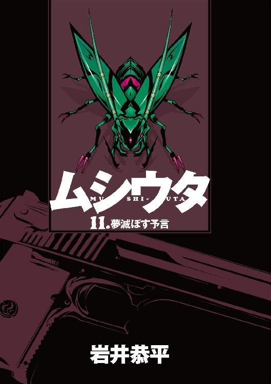
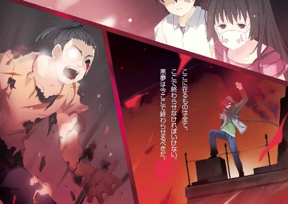
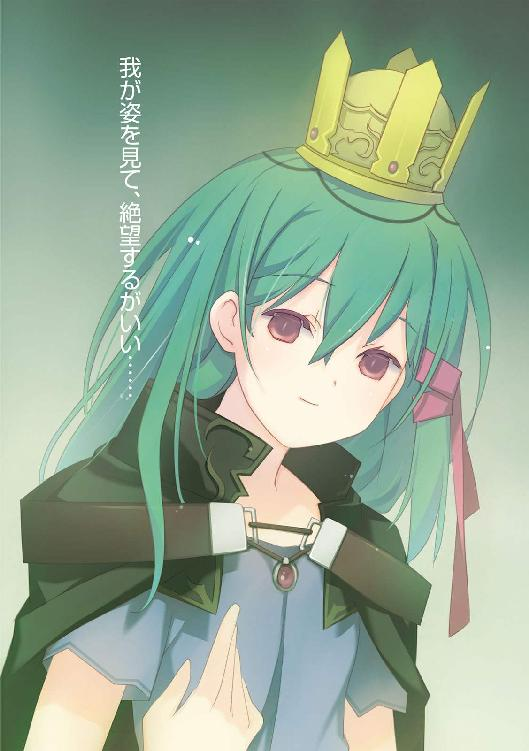
ムシウタ
11.夢滅ぼす予言
岩井恭平
角川スニーカー文庫
本作品の全部または一部を無断で複製、転載、配信、送信したり、ホームページ上に転載することを禁止します。また、本作品の内容を無断で改変、改ざん等を行うことも禁止します。
本作品購入時にご承諾いただいた規約により、有償・無償にかかわらず本作品を第三者に譲渡することはできません。
本作品を示すサムネイルなどのイメージ画像は、再ダウンロード時に予告なく変更される場合があります。
本作品は縦書きでレイアウトされています。
また、ご覧になるリーディングシステムにより、表示の差が認められることがあります。
ムシウタ 11．夢滅ぼす予言 目次
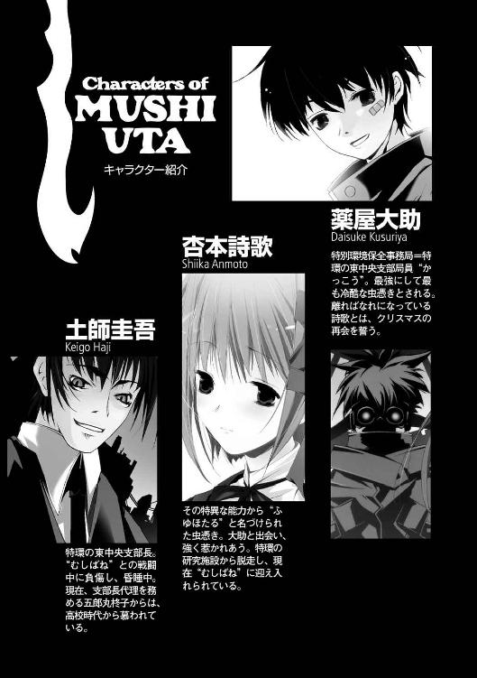
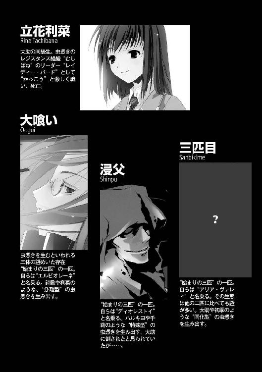
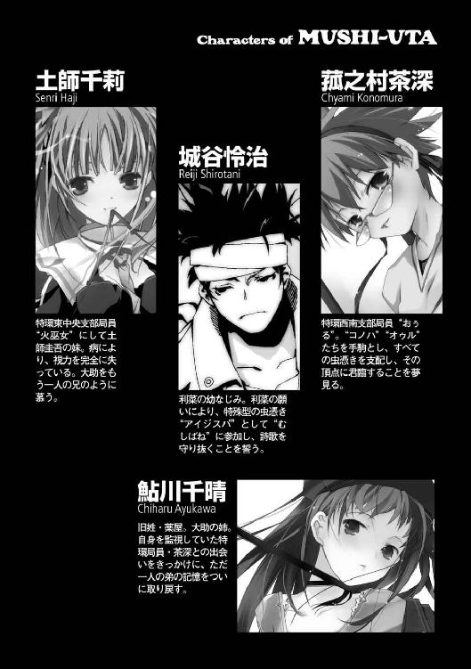
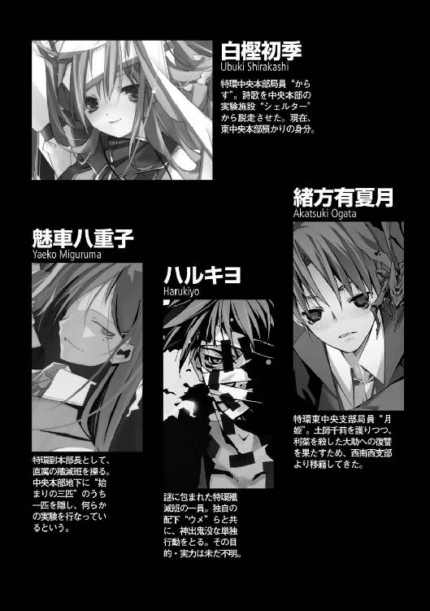
口絵・本文イラスト／るろお
〝虫〟──。
十年以上も前に忽然と現れた、超常の存在。
外見が昆虫と似ているため、そう呼ばれるようになった。
「最深層禁区ブロックＡ壁からＤ壁まで......完全開放されました！」
「緊急遮断信号を発信できません！ 電子制御系の情報班を出動させます！」
〝虫〟は思春期の少年や少女に寄生する。
宿主の夢や希望を喰らい、代償として超常の力を分け与えるのだ。
そうして〝虫〟に取り憑かれた者たちは──虫憑きと呼ばれた。
「派遣した情報班との通信が途絶えました......！ 高位の局員が一度に......？」
「Ｅ壁からＨ壁が......か、開放されていきます！」
政府は特別環境保全事務局という機関を創り、〝虫〟の存在を隠した。
特環とも称される彼らは、虫憑きを捕獲し、あらゆる手段を用いて隠蔽を図った。現在では捕らえた虫憑きを訓練し、在野の虫憑きを捕獲する組織として秘密裏に活動している。
「地上への全出入り口が封鎖されました......！ システムが言うことを聞きません！」
「と、閉じ込められた......？」
「禁区ブロック、残りのＩ壁からＬ壁も開きつつあります！」
特別環境保全事務局、中央本部。
国の主要機関が集まる赤牧市の地下深くに、その拠点はあった。地下要塞とも呼ばれ、巨大な面積を誇る空間を、けたたましい警報が埋め尽くしていた。
「禁区ブロックに殲滅班を投入してください」
要塞内の様子を映すモニタが並べられた部屋で、副本部長の魅車八重子は命令を下した。
「全班員です。防壁の向こうから現れる〝モノ〟に備えてください」
八重子の静かな声に、部下の虫憑きたちが従った。真っ白なロングコートやゴーグルを装備した者たちがモニタ内を慌ただしく駆け回る。
「ハルキヨ──異種一号局員〝大閻魔〟の応答がありません。彼以外の全班員を投入します」
室内にいる局員の一人が言った。その切迫した声音が、厳しい現状を物語っていた。
今の要塞内で心穏やかな人間は、一人もいないだろう。
魅車八重子を除いて。
ただでさえ細い目をさらに細め、八重子はじっと眼前のモニタを見上げていた。
その口元には──普段と変わらない、優しい微笑が浮かんでいる。
「第二十八層に〝玉藻〟、第二十層に〝疫神〟、第五層に〝霞王〟を配置し、それぞれ防衛線を張ります。我々が第五層で指令本部を立て直した時点で、順次、上層に退きましょう」
「撤退、ということですか？」
周囲の局員たちがどよめいた。
「副本部長......一体、何が起きているんですか？」
「反抗期です」
局員たちが眉をひそめるが、すぐにその表情に緊張が走った。
中央に設置されたモニタの中で、巨大な扉がゆっくりと開いたのだ。
巨人の吐息のように真っ白な水蒸気を放ち、分厚い扉が左右に開いていく。
八重子たちがモニタに見入る中、扉の奥から現れたのは──。
「......芋虫？」
誰かが呟いた。
扉の向こうから現れたのは、床の上をひょこひょこと這う小さな物体だった。
だが、次の瞬間。
扉の奥から、津波のように大量の芋虫が飛び出した。扉を這い、床を這い、天井を這って、何万という芋虫が這い出す光景に、局員たちが息を呑む。
「〝霞王〟、聞こえますか？ 総指揮権を貴女に預けます。すぐに撤退作戦に移りなさい」
扉から現れたのは、芋虫の大群だけではなかった。青白く輝く電撃の糸が、芋虫たちに負けじと壁を伝って扉の外へと迸る。
「うわああああっっ！」
室内で悲鳴が響いた。壁から電撃の糸が迸り、局員たちに襲いかかったのだ。
電撃の糸に襲われたのは、八重子も例外ではない。足元から這い上がり、身体の表面を伝って、青白く輝く糸が顔まで這い上がる。
だが八重子は、動かない。
「たとえ今日、ここで特別環境保全事務局という組織がこの世から消え去ろうと──」
電撃の刃が、自らの脳髄を突き刺す激痛を、優しい笑みで受け入れる。
「私は、あなたを愛してあげます」
〝鎖の笑み〟を浮かべたまま、特別環境保全事務局副本部長、魅車八重子は──。
その意識を、暗黒に呑み込まれた。
「これが赤牧市だって？」
赤牧市に繫がる道の一つ、氷飽橋は大型の軍用車両で封鎖されていた。
漆黒のロングコートとゴーグルを装備した火種一号局員〝かっこう〟──薬屋大助は、眼前の光景を見て呻く。
「何も見えないじゃないか......！」
橋の先にあるはずの都市が、乳白色の霧に包まれていた。
ただの霧ではない。
まるで線に糸を引いたように、橋の先から左右に霧の壁がそびえているのだ。晴れ渡った空まで高々と伸び、ドーム状になって都市をすっぽりと覆い隠している。
「この中は、今、どうなってるんですか、支部長代理」
大助のそばに立つ少年、緒方有夏月が言った。
「ふわあー、ニュースで見るより、実際に見たほうが圧巻ですねえ」
間の抜けた顔で霧の壁を見上げたのは、五郎丸柊子だ。特別環境保全事務局、東中央支部の支部長代理という肩書きを、寝ぐせのついた髪と安物のスーツ、ずり落ちた眼鏡という外見が台無しにしている。
「支部長代理！」
再び声をかける有夏月もまた、大助と同じ漆黒のロングコートを纏っていた。
大助と有夏月だけではない。
封鎖した氷飽橋には、東中央支部の主力を担う戦闘員たちが集まっていた。
「ふぁいっ！ えっ、えぇとですね、赤牧市がこの〝謎の霧〟に包まれたのが、今から一時間ほど前のことでして......国中、大騒ぎですっ！ 世界中でも多くの国で異常事態として報道が始まってるようですね！ そりゃあ、これだけの状況ですもんねぇ、がんばって報道規制かけてますけど、隠しきれませんって、こんなの......」
「ここにいる全員、それは知っている。俺たちは霧の中の状況を知りたいんだ」
車両の屋根の上から、〝兜〟が言った。体格の良い彼が低い声で訊ねると、必要以上にプレッシャーがある。
「そ、そぉですよね！ 内部との連絡が一切、とれませんっ！ 政府機関や一般市民問わず、赤牧市にいる人間が完全に沈黙状態です！ 電話や無線はおろか、インターネットや衛星通信に至るまで、完璧にシャットアウトされてしまってます。さらに不気味なことに......赤牧市から脱出してくる人が一人もいないんです」
柊子が青ざめた顔で、ガクガクと震え出した。
「おまけに霧の中に入っていった人間も、一人も帰ってくることがないという......あわわわ、もう秋も終わりだっていうのに、季節外れの怪談みたいな状況に......こ、怖いぃぃ」
「何らかの〝虫〟の能力か？」
「じゃないとしたら、本当に怪奇現象だね。でも範囲が広すぎる」
「どこかの虫憑きが成虫化したのかもしれん」
大助の推測に、有夏月と〝兜〟が同調する。
「い、一番怖いのは、中央本部まで沈黙しているということです！ あの！ あの中央本部がですよっ！ ウチ以外の支部も別角度から赤牧市を包囲してますけど、中央本部が音信不通の状態でどう動くべきか......正直、判断がつかない状況です」
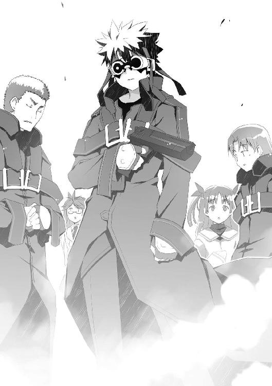
「千莉、中の様子を探れるか？」
大助は有夏月のそばにいる少女を振り返った。ロングコートに身を包んだ土師千莉が、霧に向かって両手をかざしていた。
「さっきからやってるけど......」
目が不自由な千莉だが、彼女は〝虫〟の存在を感知することができる。
「ごめん、何も視えない......この霧全体が大きな炎みたいで、中まで見通せないの」
「いいよ、千莉。無理しないで」
身体の弱い千莉を気遣う有夏月。〝兜〟が車両の上から言う。
「〝虫〟の影響なのは間違いなさそうだな。だが炎といえば、ハルキヨは何をしているんだ。中央本部にはヤツがいるはずなのに、このザマなのか？」
ガタン、と音がした。ハルキヨと聞いて顔を蒼白にした人物がいた。
大助らと同じ装備を身につけているものの、ゴーグルは装着していない。一見しただけでは少女のように見えるが、南金山叶音というれっきとした少年である。
「落ち着け、カノン。ハルキヨはここにいない」
大助が声をかけると、カノンは怯えた顔でコクコクと何度も頷いた。
強力な虫憑きを何人も抱えている中央本部の音信が、一切途絶えている。
そのことだけでも、未曾有の異変といえた。
「俺が様子を見てくる」
腰に装備したホルダーに拳銃があるのを確かめ、大助は足を踏み出した。
「ちょっ、ちょっと待ってください！ もし〝かっこう〟さんに何かあったら、特環内に動揺が拡がりかねませんし......」
「だからと言って大勢で突入したら、最悪、全滅する可能性がある。大丈夫、霧の中を覗いたら、すぐに戻ってくるよ」
柊子は不満そうだが、それ以上は止めなかった。
「わ、分かりました。他の支部に、〝かっこう〟さんが戻るまで待機するよう伝えますね！」
「〝かっこう〟に何かあったら、むしろ喜ばれそうだな。悪魔がやっと死んだと」
「あはは」
「何がおかしいの、有夏月くん？」
「えっ、ぼ、僕が言い出したわけじゃ......ごめん」
心強い仲間たちの声を背に受け、大助は霧に向かった。
数十メートルの距離を歩き、乳白色の壁の前で立ち止まる。そっと指を伸ばすと、霧の表面に触れた瞬間にピリッと指先が痺れる感覚があった。
「電気を帯びてるのか......？」
通信が遮断されているのは、この電流が原因かもしれない。
大助の肩に、緑色のカッコウムシが舞い降りた。膨脹したカッコウムシの躰が触手となり、彼の全身と同化して輝く模様と化す。
「ただの自然現象じゃないのは確かだな」
自らの〝虫〟と同化した脚で、乳白色の霧の中へ脚を踏み入れる。
「......ッ！」
強い静電気が、大助の頭を襲った。
さらに青白い放電現象が、ロングコートの表面を駆け巡る。だが特別製の装備や、強化された大助の肉体ならば充分に耐えられる衝撃だ。
数メートル先も見えない、真っ白な空間を歩く。
頭が痺れる感覚に眉をひそめつつも、大助がまっすぐに白い空間を歩いていた時だった。
「──くっ......？」
不意に、目眩に襲われた。
眠気に似た感覚が、彼の膝から力を失わせようとする。
戻るべきか、進むべきか。
一瞬の逡巡の後、大助は地面を蹴った。
このまま戻っても、何も分からないままだ。赤牧市がある方角に向かって走る。
すると──光が見えた。
霧の向こう側を、小さな光点が縦横無尽に駆け巡っている。
「なんだ......？」
走る速度を速め、飛び回る光に向かっていき──。
「──ッ！」
唐突に、霧の濃度が薄れた。
大助の視界に、異様な光景が拡がる。
そこは──巨大な船の上だった。
大助はいつの間にか、赤茶色に錆びついた客船の甲板に立っていた。
「ォオォオオオオッッ！」
獣の咆哮のような雄叫びは、頭上から聞こえた。
顔を上げると、白い輝きに包まれた人影が宙に浮かんでいた。
フード付きのパーカーを着た人間だ。顔には大きいゴーグルを装着し、フードをかぶっている。重力を無視して空中で静止しているのは、その身体を包む淡い輝きのせいだろうか？
特環の局員か......？ いや、それよりも、ここは一体どこなんだ──。
戸惑う大助の視界から、ゴーグルを装着した人物が忽然と消えた。
何が起きたのかは分からない。
だが光の人物は何の前触れもなく姿を消し──消えた時と同様に、唐突に別の場所に現れた。
巨大な船──おそらくすでに廃棄された客船。
その錆びたファンネルの上に立つゴーグルの人物が、ぐらりと傾き──。
死んだ。
これまで死にゆく人間を何度も見てきた大助には、はっきりとそのことが分かった。
呆然と佇む大助の横で、何かが動く気配がした。
ハッとして振り向いた大助が見たのは、またもや異様な物体だった。
それは一人の少年のようだ。
ようだ、としか表現できないのは──その下半身がなく、顔の半分が削れ落ちていたからだった。ゴムで縛ってちょんまげにした前髪が、鮮血に濡れていた。
下半身のない少年が、ずるり、と大助に向かって這い寄り──。
ガクリと倒れて動かなくなる。
死んだ。
確かめるまでもなく、そんな姿で生きているはずがない。
何なんだ、これは......？ 俺はどこに迷い込んだんだ──。
呆然と立ち尽くす大助の耳に、誰かの叫ぶ声が飛び込んだ。
「ここにはもう何もない......！」
声は、甲板の向こうから聞こえた。大助は柵に駆け寄り、身を乗り出す。
やはり自分がいるのは廃船だったようだ。巨大な船から見下ろした先には、大海原ではなく、舗装されていない剝き出しの土があった。
地上にいたのは、高級そうなスーツを着て黒いハットをかぶった青年。
そして離れた場所で青年と向き合う一人の少女だった。医療用のマスクで口を隠している。
「来い、ミッコ！」
青年が手を差し伸べるが、少女は首を左右に振る。
「もし過去に戻れるなら──貴方たちを全員、出会った瞬間に殺すでしょう......」
マスクをずらし、露わにした少女の口元には、笑みが浮かんでいた。
「きーくん、カッシー、ルイ......それに私も......ここへやって来てはいけなかった......」
少女の双眸から、涙が溢れ出した。
笑いながら泣く少女。
大助の目に、その少女は正気を失いかけているように見えた。
「私たちのせいで」
泣き笑う少女の顔に、乳白色の霧がかかった。
「この国は」
再び、大助の視界を分厚い霧が遮ろうとする。
「〝虫〟に埋め尽くされて」
大助は、その場から動くことができなかった。
貼りついたように両脚が甲板から離れず、声を発することもできない。
「終わるでしょう」
不吉な予言。
狂気に陥りかけた少女の言葉が、霧の向こうへと消えた。
ピクリ、と大助の両脚が動いた。
動ける。
一体、何が起きているのか──。
それを確かめるために、少女たちがいた場所に向かって駆け出す。
「何だったんだ、今のは......！ 錯覚なんかじゃないぞ......！」
白光に包まれた人物が命の灯火を消す、その瞬間の静けさ。
身体の大半を失い、力尽きた少年の血の臭い。
そして青年の声と、少女の予言。
どれもが肌を突き刺すくらい、生々しい感触があった。
あれがどこなのか。
彼らは何者なのか。
大助は確かめなければならない──。
「......ッ！」
霧が、晴れた。
どこまでも続くかと思われた濃霧が消え、大助が立っていた場所は──。
「赤牧市......？」
都会のど真ん中だった。
人通りの激しい交差点と、スムーズに自動車が流れる国道。
大助は数年前、赤牧市に住んでいたことがある。当時とはやや造りが異なるものの、そこが見覚えのある赤牧市の街並みであることが分かった。
赤牧市に潜入しようとして、赤牧市に出た。
そのことは不自然ではない。
だが、そうなると──。
「さっきの場所は、どこだったんだ......？」
振り返るが、平和な街並みがあるだけだった。
廃船など、どこにも見あたらない。
それどころか、つい今しがた通り抜けてきたはずの霧の壁さえない。
おまけに別の違和感もあった。
平和すぎる。
談笑し、あるいは携帯電話に向かって話しながら歩く人々の様子に危機感はない。
「誰も......霧に閉じ込められてることに気づいてないのか？」
現在、赤牧市が外界から隔絶されているとは思えない状況である。
と、そこへ──。
「きゃぁああああっっ！」
悲鳴が上がった。
交差点を振り向いて、硬直する。
「なっ──」
国道の先で、自動車とトラックが宙高く舞い上がった。それらは放物線を描いて地面に衝突し、ひしゃげ、滑りながら周囲の自動車をなぎ倒す。
よく見えないが、何かが自動車を撥ね飛ばしながら突進しているようだ。
そして、その前方の歩道を、ばたばたと手足を動かして逃げているのは──。
「......ごほっ！ けほっ！」
泣きそうな顔で、何かから逃げる少女。
その少女は──医療用のマスクで口元を隠していた。
平穏そのものの交差点に、非現実的な光景が迫りつつあった。
押し寄せる轟音と地響きに、通行人が悲鳴を上げる。
「ごほっ！ けほっ！」
咳をしながら、一人の少女が全力疾走していた。医療用のマスクで口元を隠し、長い髪を揺らす少女の形相は必死そのものだ。
少女を追い立てるのは、何かに激突して宙へ放り出される自動車たち。
大助がいるほうへ近づくにつれ、その原因が分かった。
「〝虫〟......！」
国道の自動車を弾き飛ばしながら突進していたのは、巨大な黒い塊だった。
ゴツゴツとした岩の板のようなものが二枚と、それと重なって振動する数枚の薄羽。
それ自体は、大助が何度も遭遇したことのある〝虫〟の造形と似ていた。
「──〝虫〟......なのか？」
だが──それしかない。
翅しかないのだ。
本来あるべき頭部や胴体が、どこにもなかった。
超低空で飛ぶ巨大な〝翅〟が障害物をなぎ倒し、こちらに向かって国道を突進してくる。
「はじめて見るタイプだ。分離型に見えるが......」
呟いてから、大助自身にも周囲の視線が集まっていることに気づく。
街中でロングコートとゴーグルは目立つ。大助は装備を脱ぎ、丸めたコートの中にゴーグルと拳銃を隠した。大助の場合、それだけで平凡な高校生に変わることができる。
今いち状況が摑めないが、〝虫〟がいる以上、やるべきことは一つしかなかった。
「おい、お前！ こっちだ！」
少女に向かって、手を振る。
この場所は目立ちすぎる。謎の少女もろとも人気のない場所まで誘導し、〝虫〟を殲滅したほうが良さそうだ。
本来であれば、こんな事態が生じたら、真っ先に中央本部が駆けつけるはずだ。それなのに戦闘員が一人も姿を現さないのは異常である。
中央本部が、正常に機能していない──。
それは大助が危惧していた、最悪の状況の一つだった。
「早くしろ！」
手を振る大助に、少女が気づいた。
ばたばたとみっともないフォームで逃げる少女が、こちらに向かって駆けつけ──。
いきなり、彼に飛びついた。
「うあっ！ バカ、抱きつくなっ......！」
「ぅげほっ！ ごほっ！ はあっ......！ ぜえっ......！ おえっ！」
ひどく咳き込みながら、彼にすがりつく少女。酸素が足りていないのか、それとも風邪でも引いているのか、顔色が病人のように真っ青だった。
「た......！ 助けて......！ くださ......ぅおえっ」
「分かったから、しがみつくなっ！ ──ああ、くそっ！」
翅が間近に迫っていた。大助は少女を肩に担ぎ、歩道を走って逃げる。
「あ......ダメ......！ こ、この体勢は......せめてお姫様だっこ的な......うぷっ」
大助たちよりも、翅のほうが速かった。少しずつ互いの距離が縮まっていく。
「あ......！ 今、お尻、触っ──」
「うるせー！」
このままでは、見知らぬ少女と心中だ。
人目を引くのを覚悟で、この場で戦う覚悟を決めた時だった。
「も、もう大丈......夫です......！ そろそろ、消える、はず......！」
少女が彼の肩で、ばたばたと暴れた。
消える？
大助が振り向くと──少女が言った通りの現象が起きた。
障害物を破壊しながら迫る翅の輪郭が、うっすらと薄くなっていった。
見る間にその姿が透けていき、やがて空気に溶け込むようにして完全に消滅する。
後に残されたのは、壊れた自動車や建造物と、呆然と立ち尽くす通行人だけだ。
「なんだ、どうなってる......？」
呆然と立ち止まり、担いでいた少女を肩から落とす大助。「痛いっ」と少女が呻いた。
「ごほっ、げほっ......！ ──最低ですね......」
のそり、と少女が身を起こした。俯いたまま、マスクの位置を直す。
「女性の扱いが乱暴すぎます......お尻触ったし......どうせ女の子を助けてカッコつけたかったんでしょう。それだけで普段から女性にモテないのが分かります。第一、助けるにしたって、もっと頭を使えばいいのに......お尻触ったし......」
ぶつぶつと呟いて、少女がマスクを下ろした。へらっ、と締まらない笑みを浮かべる。
「──そんな最低な貴方でも、私は嫌いじゃありません」
助けたのは大助なのに、逆に恩着せがましく言われてしまった。
年齢は、大助と同じくらいだろう。身長は同世代の少女の中では高いほうか。切れ長の瞳は風邪のせいか、少し充血していた。ピンク色の医療用マスクには〝Ｌｏｖｅ〟、それも〝ｏ〟の部分がハートマークになった刺繡が施されている。
「......」
間違いない。
見ようによっては美人ともいえる、その顔は──。
──私たちのせいで、この国は〝虫〟に埋め尽くされて終わるでしょう。
霧の中で見た、不吉な予言を告げる少女と同一人物だった。
「......けほっ」
少女の咳が激しくなった。安心して気が抜けたのか、グラリと身体が傾く。
とっさに身体を支える大助。
「おい！」
「早く......行かないと......」
うわごとのように呟く少女は、とても自力で歩ける状態ではなさそうだ。
国道はパニックに陥っていた。大助たちに、通行人の注目が集まる。
「ちっ......」
やむなく少女を背負い、その場を離れる。
「お前は、誰だ？ あの〝虫〟は何だったんだ？」
「私は......ミッコ」
咳き込む少女が、名乗った。
ミッコ。
間違いない。霧の中で聞いた名前と同じだ。
あの異様な光景は何だったのか、本人に訊いて確かめたほうが良さそうだ。
てっとり早く人気のない場所に移動するため、大助は自分の〝虫〟と同化しようとした。
緑色のカッコウムシが彼の肩にとまる。
──はずだった。
「──」
だが、彼の〝虫〟が現れることはなかった。
周囲を見回しても、どこにもいない。
こんなことは、虫憑きになってから一度もなかった。
「──〝虫〟の力が......使えない......？」
愕然とする大助の背中で、少女が、こほっ、と咳き込んだ。
「早く、助けないと......私の家族......」
うなされるように、呟く。
「たくさん化け物を生んでしまう......私の家族......」
「......！」
乳白色の霧によって隔絶された都市。
死者と生者が叫ぶ廃船。
そして謎の少女ミッコとの出会い。
それらの出来事は──。
破滅の予言に向かう旅路への第一歩だった。
きーくん。
それが十五年間の人生で最も呼ばれ慣れた、自分の名前だった。
友人たちはもちろんのこと、両親も彼をそう呼んでいる。
「ヒマだな、きーくん」
赤牧市の外れに位置するコンビニエンスストアで、彼の名を呼ぶ人間がまた一人。
「どっか遊びに行くか、きーくん」
晴れた空の下、もう一人。
駐車場の端に座り、携帯電話を凝視しながら、彼はぽつりと呟いた。
「──なあ、聞きたいんだけど」
高校一年生、きーくん。身長と体重は狙ったように平均値で、顔の造りも普通。通っている公立高校の制服である白いシャツとスラックスはＭサイズだ。伸びた前髪を額の上でしばり、ちょんまげ状態にしているのだけがチャームポイントである。
「〝ごめん、もうムリ〟っていうメールが来たんだけど......コレ、どういう意味かな？」
座ったまま携帯電話を掲げて見せると、眩しい太陽が目に飛び込んだ。
午前放課の帰り道だから、まだ日は高い。
「誰からのメール？」
二人の友人のうち、シャツの襟を大きく開けたほうが訊ねた。
「先週、つきあい始めたばかりのカノジョ」
「ああ、記念すべき、きーくんの初カノジョか」
眼鏡をかけたほうの友人が嘆息した。
二人の友人が声を揃えた。
「フラレたんだよ」
「なんでだよぉぉぉおおおっっ！」
きーくんは絶叫し、友人二人に摑みかかった。
「一週間！ たった一週間で！ 今までコツコツ話しかけて、やっといー雰囲気になったから告ってつきあい始めたんだぞ！ まだ一回しかデートしてないしっ！ 手さえ繫いでないような清く正しい交際で、これからってときに......！」
「はじめてのデートでハイキングはねェよ。しかも雨に降られて無言の登山って、修行でもしに行ったのか？」
「雑誌が！ あの雑誌が悪い！ 山頂からの素敵な景色が、忘れられない二人の記念日にしてくれる......とか言ってさあ！」
「ロープウェイ使えって書いてなかったか？」
「ち、ちゃんとフォローしたんだぞ！ 謝ったし、メールだって朝起きてから夜寝るまで欠かさず出したし、家まで送り迎えも毎日......」
「俺、お前のカノジョじゃなくて良かったわー。夢にまで出てきそう。悪い意味で」
きーくんの喉の奥から、嗚咽が漏れた。
「うくっ......！ おおおおおおおう......！」
「お、おい、こんなトコでマジ泣きすんなよ......」
ゴミ箱にすがってむせび泣くきーくんに、左右から友人が肩を組んだ。
「元気出せ。すぐにまた良い子が見つかるって」
「基本、お前はいいヤツだからな。ちょっと舞い上がって空回りしがちなだけだ」
「おおおうう......ありがとうっ......！ お前らも、いいヤツだ......！」
いいヤツ。
周りの人間から、良くそう言われる。
勉強ができるわけでもないし、運動が得意なわけでもない自分にとって、それは唯一の長所なのかもしれない。好意を寄せた相手から、「良い人なんだけど」と言われて交際を断られることもあったが......。
きっとこれからも、ただの〝いいヤツ〟として平凡に生きていくのだろう。
そんな予感を漠然と抱いていたし、そのことに不満もなかった。
「カラオケでも行っか？ おごってやっから」
「うえっ、鼻水出てんぞ。きたねーな、ほら」
「うん......！ 行く......！」
もらったティッシュで鼻をかみ、きーくんが顔を上げた時だった。
けたたましいクラクションが鳴り響いた。
続いて、甲高いブレーキ音と、重い衝撃。
きーくんと友人二人は、道路を見て息を呑んだ。
急停止した自動車と、その前方に投げ出された黒い人影が見えた。
何が起きたのかは、一目瞭然だ。
「轢かれた......？」
友人の言葉に、ギクリとするきーくん。
「い、いきなり道路に飛び出してきたんだ！」
自動車の運転席から、中年の男が飛び出した。通りがかった通行人がざわつき、きーくんがいるコンビニからも人が現れ、ざわつく国道の様子を見る。
まさか、死んだのか......？
思いがけない事故に直面し、きーくんの顔から血の気が引いた。
だが、彼の不安は杞憂に終わった。
ムクリ、と黒い人影が身を起こし、歩き出したのだ。
それも、こちらに向かって。
撥ねた本人はおろか、野次馬も啞然としていた。衝撃で十メートルは吹っ飛んだのに、とうの被害者は車を振り返りもしない。
「ホームレスみたいだな......」
友人の言葉通り、黒い人影は泥で汚れた布を纏っていた。うなだれ、這うように俯いて動いているせいで、顔がよく見えない。長い髪をずるずると引きずっている。
黒い人物は、ゴミ箱に近づこうとしているようだ。
「怪我してる──」
きーくんは、人物が移動した後に黒い染みができていることに気づいた。
「は？」
「あの......地面のそれ、血ですよね......？ 救急車呼びますか......？」
恐る恐る黒い塊に近づき、声をかける。
「おい、やめとけって、きーくん」
「いや、でもさ......」
自分でも傍観する野次馬の一人でいたかったが、怪我人を見過ごすのは気が引けた。少なくとも、このままカラオケで気持ち良く歌えるとは思えない。
だが黒い人物にとっては、余計なお世話だったらしい。
「あだっ！」
布の奥から伸びた細い腕が、きーくんを突き飛ばした。尻餅をつく彼を無視してゴミ箱に近づき、中身を漁り始める。
「ちょっと待てよ！ そいつはアンタを心配して声かけたんだぞ！」
長身の少年が憤慨し、黒い人物の肩に手をかけた。
「......！」
振り向いた黒い人物の顔を見て、きーくんたちは凍りついた。
黒い塊の正体は、女だった。浅黒く変色し、枯れ木のようにやせ細った手足と首。針金のように乾燥しきった長い髪と、真っ赤な血の色に染まった眼差し──。
鬼。
今まできーくんが見た映画、マンガ、童話よりリアルなそれが眼前にいた。
飢え、だろうか？
水も食べ物も長い間、口にせず、飢餓の頂点に達した顔だった。その目は人と物の区別もつかず、何かを求めて口をパクパクと動かすことしかできないくらい飢えきっている──。
「──......ャ......ィ......オ......」
ボソボソと女が意味不明の言葉を呟いた。少なくとも日本語ではない。肩を摑んだ友人の腕を摑み返し、すがるように抱きつく。
「うわっ！ なんだ、コイツ......！」
「おい、やめろ！」
「ひっ......！ 怖い......！」
きーくんは眼鏡の友人といっしょに、女を引き離そうとした。
だが、次の瞬間。
グルリ、と人形のように首を半回転させた女の双眸が、きーくんたち三人を見つめた。
「──ッ！」
女の飢えきった瞳に見据えられ、自分の中にある何かが鷲づかみにされた──。
そんな錯覚が、きーくんを襲った。
鷲づかみにされた〝何か〟が吸い出され、パクパクと動く女の口に吸い込まれていく──。
二人の友人も、きーくんと全く同じように硬直していた。周りにいる野次馬や、道路を走る自動車が、時間が止まったかのようにピタリと静止する。
言いようのない恐怖にかられ、きーくんは全神経を抵抗に費やす。
「......ぅああっ！」
言うことを聞かない腕を無理矢理に動かし、女を突き飛ばす。
時間の流れが、戻った。
だが友人二人は、元通りとはいかなかった。
どさり、と脱力した友人たちが、地面に倒れた。眠るように目を閉じ、動かなくなる。
それだけではない。
倒れた二人の上に、巨大な物体が浮かび上がっていた。電柱の数倍も太い形は三節に分かれ、先端が鋭く尖っている。
自分でも馬鹿げていると思うが、たとえるならば──昆虫の脚だろうか。
胴体も頭もない。巨大な甲虫類の脚が、黒と白の二本分、宙に浮かび上がっていた。
「おお......ああ......？」
夢だ。
これは悪い夢か、ただの幻覚に違いない。
気絶しそうな意識を、女の飢えた目つきと、周囲の悲鳴が呼び戻した。
一歩、後ろに下がったのは、奇跡だった。ただ気圧されただけだ。
大地震がコンビニエンスストアを揺らした。
きーくんが一秒前まで立っていた場所に、黒い脚が深々と突き刺さっていた。爆発したようにコンクリートの粉塵が舞い上がり、駐車場全体に亀裂が走って盛り上がる。
「......ォ......カ......ミッコ......」
飛び交う悲鳴の中、黒い女があらぬ方角を見て、呟く声が聞こえた気がした。
高架線の下にある駐車場は、利用者数が少ないようだった。
繁華街から離れている上、人通りが多いわけでもない。駐車中の車も少ないこの場所ならば、余計な人目につくこともないだろう。
「ケータイまで使えなくなってる......本当にどうなってるんだ」
舌打ちし、大助は携帯電話を耳から下ろした。赤牧市の外にいる仲間と連絡をとろうとしても、誰とも繫がらなかった。
「ゴーグルは......」
隠し持ったゴーグルを操作するが、結果は同じだった。無線に反応が全くない。
まずい状況だ。
赤牧市に潜入した大助が音信不通となれば、柊子たちが二の足を踏むのは間違いない。
火種一号〝かっこう〟でさえ消息を絶つような事態が、赤牧市で発生している──。
そう誤解して警戒するあまり、動き出すのが遅れるだろう。
実際の赤牧市は平穏そのもので、今すぐにでも総勢で赤牧市に突入して、中央本部の安否を確かめるべきだというのに──。
「おい、お前。ケータイ持ってるか？」
自動販売機のそばで休んでいる少女に声をかける。
「──いえ、持ってません」
ミッコと名乗った少女の顔は、だいぶ血色を取り戻していた。
「本当か？ なんで持ってないんだよ」
「疑うんですか......最低ですね」
「......」
「それより、小銭をくれませんか？ 貴方のような人でも、缶ジュース一本分くらいの甲斐性はあるところを見せて欲しいですね」
マスクのせいで口は見えないが、切れ長の目を細めたところを見ると微笑んだらしい。
「それに私は風邪を引いているんです。つまり病人です。多少は気遣う人間性を──」
思わず、手が出たとしても、大助が非難される理由はないはずだ。ぺちんっ、と平手が軽く頰を打つ音がして、くるんっ、と少女の首が半回転する。
「あうんっ」
「あ──悪い、ついイラッとして......」
苛立ったというのは本当だ。
大助は元々、相手が女性だからといって手加減するような性格ではない。
だがそのことを抜きにしても、撫でる程度とはいえ、つい手を出してしまった自分自身に首を傾げる。
確かに相手の言動には腹が立ったが、自分はこんなに短気だっただろうか？
いや、短気というより、このミッコとかいう女の顔が、なんというか──。
「なんて恐ろしい人でしょう......」
頰を押さえて震える少女。
同い年くらいで、一応は美人。その上にクセのある性格のようだし、一度でも会ったら記憶に残っていそうなものだが──妙な既視感を覚えた。
どこかで会ったことがあっただろうか？
なんというか──妙に、苛立つ顔だった。
その理由までは思い出せない。
「女性に手を上げるなんて、最低どころか最悪です......。でも、しょうがないですね。そんな救いようのない貴方でも、嫌いになったりはしないであげるので、感謝し」
「あ、悪い......」
「あうんっ」
反対側の頰が、ぺちんっ、と軽く鳴った。くるんっ、と少女の首が逆方向に回転する。
大助は自分の手を見て、唸る。
やっぱり自分は、この少女を見ると自制心を失うようだ。
これが生理的に受けつけないというヤツだろうか？
「最低です......本当に最低です......」
「今のは本当についやっただけだが......俺は女だからって優しくしたりしないし、お前を善意で助けたわけでもない」
気を取り直して、ミッコを尋問する。
「お前には訊きたいことがある」
「......」
「さっきの〝虫〟は何だ？ どうしてあんなものに追われていたんだ？」
ミッコの顎を持ち上げ、その目を睨みつける。
「......ムシ？」
「さっきの化け物のことだ」
「けほっ......ああ、確かに虫、昆虫の類に似てますね。なるほど、〝虫〟......」
「......」
「これからは、私もアレをそう呼ぶことにしましょう」
そう言って何度も頷くミッコに、とぼけている様子は見えなかった。
「先ほどのアレ──あの〝虫〟が何かと訊かれたら、こう答える他ありません」
ミッコの表情に陰りが落ちた。
「私の家族が生んでしまった、化け物です」
少女の言葉の意味を、すぐには理解できなかった。
「......バカ言え」
長い沈黙の後、ようやく否定の言葉を発する。
ミッコが寂しげに微笑んだ。
「いいんです。信じてもらえるとは──」
「あり得ない」
少女の言葉を遮る。
〝虫〟を生み出すのは、〝始まりの三匹〟という存在だ。
それら以外に〝虫〟を生む存在など、一例たりとも報告されたことはない。
少なくとも、今まではそうだった。
「それともお前の家族とやらが、〝始まりの三匹〟だとでもいうのか？」
「......？ 始まりの......三匹？」
ミッコが眉をひそめた。
「貴方の言っているのが誰かは知りませんが、私の家族は......小さい頃から私といっしょに育った、大切な存在です」
「......」
「ある事情で、いっしょに家出をしたのですが......はぐれてしまいました。途中で、あの子が我慢しきれずに無関係の人を〝喰べ〟てしまって、その時に......」
「......」
「あの──大丈夫ですか？ 顔色が良くないようですけど」
大助は少女の声で、絶句していた自分に気づく。
作り話だ。
あるいは、この変わった少女の妄想にすぎない。
そうでなければ──。
まったく想定すらしていなかった事態だ。
「〝始まりの三匹〟以外に、〝虫〟を生むようなヤツがいるってことか......？」
あの翅しかない〝虫〟は、確かに今まで遭遇したことのないタイプだった。
躰の一部しかなく、宿主もいない。
ただ暴走するだけの、いわゆる〝不完全な虫〟だ。
「四匹目が、いるってことか......？」
いや──決めつけるのは早すぎる。
まだ〝不完全な虫〟を一匹見つけ、それを生んだ存在がいるという話を聞いただけだ。
だが──。
確かめる必要が、あるだろう。
赤牧市に起きた異変を探るのと同じくらい──あるいはそれよりも優先して調査する必要性があるかもしれない。
それくらい、重大な問題といえた。
「──あの不気味な予言も、そういうことだったのか？」
「けほっ......え？」
「〝私たちのせいで、この国は〝虫〟に埋め尽くされて終わるでしょう〟──」
「......？」
「お前は確かに、そう言っていた。スーツを着た男に向かって」
ミッコが心から不思議そうに首を傾げた。その仕草は演技に見えない。
「スーツを着た男......？ 私がそんなことを言った？」
「とぼけるな」
「──すみません。貴方は、私を誰かと勘違いしてるんじゃ......」
そう言って、けほっ、と咳をするミッコ。
少女が本当にとぼけているのではないとしたら──大助が見た光景は、何だったのだろう？
あの乳白色の霧が、大助に幻覚を見せたのだろうか？
だが幻にしては、あの時に見たミッコと、目の前にいる少女は似すぎている。
不可解な出来事の連続で、処理が追いつかなかった。
予想外のことが起きているのに、外部との連絡が一切つかないのも問題だ。大助一人の──それもなぜか〝虫〟の力が使えなくなった身では、できることは限られている。
まずは特別環境保全事務局と、連絡をとらなければならない。
そう決めた時、ミッコが遠方の空を見た。
「......聞こえました？」
「ああ」
どこかで何かが爆発したような、重い衝撃音が響いた。
「また私の家族が誰かを〝喰べ〟てしまったのかも......」
ミッコが大助に向かって、ぺこりと頭を下げた。
「助けてくださって、ありがとうございました。乱暴な助け方だった上に、その後の悪逆非道の仕打ちは一生忘れませんが、私のほうが大人なので仕方なくお礼を──」
ぺちんっ。「あうんっ」と少女。
「......お礼を言わせていただきます。それでは、ここでお別れしましょう」
「いや、俺も行く」
音がした方角に向き直り、大助は言った。
「このまま放っておくわけにはいかない。その家族とやらと......お前もな」
ミッコという少女が、はじめて微笑以外の──心から迷惑そうな顔をした。
きーくんの足元に、大きな影が落ちた。
黒い脚に続き、白い脚が彼めがけて爪を振り下ろそうとする。
「わあああっ......！」
四つん這いに地面を這い、ぎりぎりのところで爪をかわす。
轟音と振動がアスファルトを砕き、悲鳴とともに野次馬たちが逃げ出す。
きーくんは立ち上がって道路に飛び出した。
「ひっ──」
振り返ると、悪夢が迫っていた。
黒、白、黒、白、と交互に地面に突き刺さりながら、〝脚〟が彼に襲いかかる。
一方、黒い女は、きーくんに興味がないようだ。昏倒した友人らに見向きもせず、ゴミ箱に戻って、飢えた様子で中身を漁り出す。
「な、なんだよ、これえぇぇえっっ！」
迫る二本の〝脚〟から走って逃げる、きーくん。
人々の叫び声や自動車が串刺しにされる音、アスファルトが砕ける震動が背後から迫った。
「な、なんなんだ......！ あいつらはどうなって......！ け、警察......！ うあああ......！」
ついさっきまで、友人と退屈な時間を過ごしていたはずだった。
失恋はしたが、カラオケで悲しさを紛らわせるはずだった。
それなのに、どうして今、怪物に追われているのだろう？
「うぐぅうううっ......！」
交差点の角を曲がると、〝脚〟もまた直角に進行方向を変えた。
突き飛ばした通行人が、背後で悲鳴を上げた。
彼と〝脚〟の追いかけっこの巻き添えで、死傷者が出たかもしれない。
だからといって立ち止まれば、彼が串刺しになる。脳裏に、肉が飛び散り、五体がバラバラになった自分の姿が思い浮かんだ。
「死にたく......ない......！ まだ死にたくねえよぉぉおっ！」
まだ、死にたくない。
昨日まで、平凡な日々を生きてきたのだ。これからもきっとそう生きていくと思っていた。
自分が死ぬ──そんな心の準備が出来ているはずがない。
「はあっ......！ はあっ......！」
なんで俺なんだ──。
息が苦しい。心臓が張り裂けそうだった。
他のヤツを狙えよ──。
心のどこかで、そう願った。
人でなしと罵られてもいい。自分以外なら、誰でもいい。赤の他人を身代わりにしてでも、死にたくなかった。
「助けて......！」
今、死なずに済むのなら、何を代償にしても構わない。
死にたくない一心で、そんな願いを抱いた直後だった。
「痛ッ......！」
ガクンと膝から力が抜けた。勢い余って転倒する。
顔をしかめながら、きーくんは自分の足を見て──。
「──」
凍りつく。
彼の右足が、なくなっていた。
血は出ていない。砂が崩れるように、足首から先が崩れてなくなっていた。
「何してる！ 逃げろ！」
誰かが耳元で叫んだ。
地面に倒れた彼を、誰かが引き起こした。
「ぼうっとするな！ 走れ！」
きーくんと同い年か、やや年上くらいの少年だ。服装や髪型、それに顔つきも──特徴らしい特徴が見あたらない。頰に貼ったバンソウコウくらいが唯一の個性といえた。
「走れ──って言われても──」
きーくんは自分の足を見て──ぎょっとする。
足がある。
あまりの恐怖で幻覚を見ていたのだろうか？ 崩れて消えたはずの足が元通り、傷一つない状態でしっかりと生えていた。
轟音と悲鳴が、すぐそこまで近づいていた。
きーくんは我に返り、謎の少年といっしょに走り出す。
「あとどれくらい走れそうだ！」
「どれくらいって......もうっ......限界......！」
後方から迫る怪物を見て、歩道の通行人たちが散り散りに逃げ惑う。
そんな中、前方に一人だけじっと佇む人影があった。
マスクで口元を隠したその少女が、こほっ、とのんきに咳をした。
「バカ！ そんなところで何してる！ どけ、ミッコ！」
となりの少年が叫んだ。
「こほっ......最初の音を聞いてから、五分三十二秒が経過しました」
直立不動で動かない少女が、きーくんら少年二人を出迎えた。
「──間もなく、消えます」
熱があるのか、とろんとした目で後方の〝脚〟を見つめる少女。
きーくんと少年は立ち止まり、振り返る。
すると少女の予言が、現実となった。
黒と白の二本の〝脚〟が、きーくんや通行人の見ている前で消えていく。
アスファルトを豆腐のように破壊した怪物が消えた跡には、何も残らなかった。残されたのは破壊された国道の光景と、呆然と立ち尽くす通行人の姿だけだ。
「......」
悪い夢を見ている気分だ。一体、何が起きたのか、さっぱり理解できない。
となりの少年が、マスクの少女に詰め寄る。
「どうして、アレが消えると分かった？」
「けほっ......あの〝虫〟が五分以上、存在し続けた例は稀ですから」
「なんだと？」
「そこの貴方、巻き込んでしまい、申し訳ありませんでした」
少女が、きーくんに向き直った。
「しかし吐き気がするくらい、みっともない逃げっぷりでしたね」
「......は？」
「無関係の人を突き飛ばし、自分だけが助かればいいという自己中心的な考えが一目瞭然で分かりました。他人を身代わりにするかのような醜い光景でした......けほっ」
かっ、と急激にきーくんの顔が熱くなった。
少女の言う通りだ。そこまでしてでも、彼は助かりたかった。
そこまで自分勝手な人間だと、彼自身でさえ知らなかったのだ──。
「あ、あれは──だって」
「でも、そんな貴方が、私は嫌いじゃありません」
にこり、と少女が目を細めた。
マスクで口は見えないが、その少女の目元は優しげに笑んでおり──。
醜い姿を晒してしまった彼を、心から許し、受け入れてくれているのが分かった。
「......」
「ときめいてどうする。怒るところだろ」
となりの少年に冷たく言われ、またもや顔を熱くする、きーくん。
「と、と、と、ときめいてなんか......！」
「お前、なんであの化け物に追われてたんだ？」
刺すような視線で少年に睨まれ、きーくんは思い出す。
「俺の連れが......そ、そうだ！ あいつら......！」
友人二人は、無事だろうか？ ワケも分からないまま、倒れた友人を置いてきてしまった。
「待て、俺も行く。事情を聞く必要がありそうだ」
「私はミッコといいます。貴方は？」
見知らぬ少年と少女に見つめられ、彼はゴクリと息を呑んだ。
ミッコというのは、あだ名だろうか？ この二人は、ただの通りすがりではないようだ。
「俺は......きーくん、って呼ばれてる」
用心のためにあだ名を名乗ってから、自分の足を見る。
ちゃんと、ついている。
あの化け物みたいに、自分の足がまた消えてしまうのでは──そんな不安が込み上げた。
「きーくん、だと？」
なぜか、少年が顔つきを変えた。ハッとした様子で、きーくんの髪を見る。
前髪をちょんまげに縛っているのが、そんなに珍しいのだろうか？
「ミッコ......お前、コイツと知り合いか？」
少女が怪訝そうに首を傾げた。きーくんのほうを向いて、にこりと目を細める。
「はじめまして」
「......はじめまして」
なんとなく彼も、ひきつった笑みで答えた。
彼は間違いなく、ミッコという人物とは初対面だった。
きーくん。
そう名乗った少年とともにコンビニエンスストアに行くと、警察の調査が行われていた。
駐車場に倒れた少年二人が、救急車に運び込まれる。
消防車のサイレンが聞こえた。破壊され、炎上した自動車を消火しにやって来るのだろう。
「あいつら、どうなっちゃったんだ？ まさか、死んだんじゃないよな......？」
野次馬に混ざり、きーくんが心配そうに様子をうかがう。
「まだ息はあるようですね。これからどうなるか、分かりませんが......けほっ」
咳をしながら、ミッコ。
「......」
大助が見たかぎり、きーくんの友人だという二人の容態は良くない。
〝虫〟が殺された宿主が陥る状態──欠落者になったように見えた。
だが大助の知るそれとは違い、彼らは〝虫〟を生んだ直後に意識を失ったという。そうなると、あの〝脚〟は最初から宿主の制御を失っていたことになる。
「お前が言ってた、黒い女っていうのは？」
「い、いないみたいだ。──う、噓じゃないからな！ 絶対、あの女が何かしたんだ！ 車に轢かれても無事だったし、あんなの普通じゃないって......！」
きーくんが言うには、ある女が友人二人に何かをしたという。
ぼろきれを纏った、黒い女。
本来、虫憑きを生むのは〝始まりの三匹〟と呼ばれる三体しか存在しないはずだ。
だが、きーくんから説明された黒い女は、そのどれにも当てはまらない。〝大喰い〟とは容姿が異なるし、〝浸父〟はゴミ箱を漁ったりしない。〝三匹目〟はそもそも発見例がない上に、生まれた〝虫〟も同化型ではなかった。
だが大助が見た〝翅〟や〝脚〟は、間違いなく──〝虫〟に似ていた。
その矛盾を、見過ごすことはできない。
「ケータイ持ってるか？」
「あ？ ああ──」
きーくんが取り出した携帯電話をひったくり、番号をプッシュする。
『おかけになった番号は現在使用されておりません。番号をお確かめの上──』
特別環境保全事務局の緊急連絡先には繫がらなかった。中央本部はおろか、大助が所属する東中央支部も同じだ。
覚えているかぎりの、知人の番号を押す。五郎丸柊子、土師千莉、緒方有夏月──。
『おかけになった番号は──』
ダメだ。
完璧なまでに特別環境保全事務局に関わる連絡網がシャットアウトされている。
「......赤牧市が今、奇妙な霧で囲われてることを知ってるか？」
「は？ い、いや......霧って？」
「どうしたんですか、突然？ けほっ」
きーくんとミッコが首を傾げた。
閉ざされた箱庭と化した赤牧市で、何かが起きつつある。
しかし市内にいる人間は、そのことに気づいてもいない。
中央本部が完全沈黙し、大助が〝虫〟の力が使えなくなったのも偶然とは思えなかった。
異変の兆候が見えるのに、それを阻むことができる人間がいない──。
「きーくん──お前、船に乗ったことはあるか？」
「船？ そういや、ないな......飛行機はあるけど」
さっきから何を言ってるんだ、と言いたげに眉をひそめる、きーくん。
「......」
赤牧市に潜入する時、霧の中で大助は確かに見た。
半身をボロボロに崩れさせて死にゆく、きーくんを。
そして、そばにいたミッコが言ったのだ。
──もし過去に戻れるなら──貴方たちを全員、出会った瞬間に殺すでしょう......。
聞き間違いではない。
──きーくん、カッシー、ルイ......それに私も......ここへやって来てはいけなかった......。
泣きながら、ミッコは破滅を予言した。
だが、きーくんとミッコは初対面だという。
それならば、あの光景は何だったのだろう？
ただの幻覚？
あるいは──と、笑ってしまいそうな考えが頭をよぎった。
廃船で次々と死人が生まれ、少女が破滅を予言する光景。
あれは現在でも過去でもなく、これから起きるであろう出来事を──。
「〝彼女〟がここにいないなら、私はもう行くことにします」
「ち、ちょっと待ってくれ！ あの二人はどうなるんだ？ もう元に戻れないのかよ！」
「ああなってしまった以上、目を覚ましたケースはありません。残念です......けほっ」
「そんな......」
「ケース？ お前、あの〝虫〟について何を知ってる？」
野次馬をかき分けて国道に出るミッコを、大助ときーくんが追いかける。
「──父のせいなんです」
こほっ、とミッコが咳をした。
「私の父は研究者でした。元は実績のある心理学者であり、臨床実験を行う医師でもあったのですが......母の死をきっかけに、ある研究に没頭するようになりました」
「ある研究？」
「──〝不死〟です」
ぴくり、と。
大助は無意識に眉を動かした。
「決して死なない人間......そんな馬鹿げたものを追い求めるようになったんです。天才と呼ばれたことさえあった父は、母の死を受け入れられずに壊れてしまったんでしょう。誰もが父を笑い、孤立していったのに──ある時、協力者を得てしまった」
ミッコが苦しげに眉根を寄せた。怒っているのか、それとも悲しんでいるのかもしれない。
「円卓会......彼らが面白半分に父のパトロンになり、研究を後押しさえしなければ、こんなことにはならなかったのに」
円卓会だと？
声に出しそうになり、寸前でこらえる大助。
上司である五郎丸柊子から聞いたことがあった。有数の資産家たちによる会員制の俱楽部で、絶大な影響力を持っているという。
「研究資金を得た父は非人道的な実験に手を染めるようになりました。きーくんが遭遇したのは、その実験体です。彼女はとても酷い目に遭わされ、私はその世話をさせられました。結果的に彼女は、化け物を生むような存在になってしまったけれど──」
ミッコが大助を見た。切れ長の瞳を、悲しげに細める。
「私は姉妹のように思っています」
きーくんが顔をひきつらせた。
「な、なあ......それ、マジな話なの？ それとも何かの映画の話？」
「そうですね、そう思ってください。お友達のことは──本当にお気の毒でした」
にっこりと目だけで微笑し、ミッコが再び前を向いて歩き出した。
呆然と立ち止まる、きーくん。
「......」
大助はちょんまげの少年を置き去りにし、ミッコの後を追いかける。
──もし過去に戻れるなら──貴方たちを全員、出会った瞬間に殺すでしょう......。
あの光景を信じたわけではない。
だが、もしかしたら──予知や予言といった能力を持つ〝虫〟が存在して、あの霧の正体がそれだった可能性もある。
きーくんから得るべき情報は、もうない。
予言通り殺すとまではいかないものの、ここで別れておいたほうがいいだろう。
「こほっ......大助さん、でしたっけ？ 貴方はなぜ、私についてくるんですか？」
「聞きたいことが、まだ山ほどあるからな」
〝始まりの三匹〟は、虫憑きにとって宿敵といえた。
それなのに一匹も倒せずにいる現在、〝四匹目〟が生まれるかもしれないという予兆を見逃せるはずがない。
一度、赤牧市から脱出し、報告に戻るべきか──。
そんな逡巡が頭をよぎったが、すぐに却下する。
このミッコという少女から目を離すわけにはいかない。彼女を連れて赤牧市から脱出するにしても、あの霧を無事に抜けられるという保証もなかった。
「私に気があるんですか？ 隠されても気持ちが悪いだけなので、はっきり言ってください。ごめんなさい、貴方のような方は交際する対象として見られません。でも、そんな気持ち悪くて私に振られたばかりのどうしようもない貴方でも、お友達なら」
「お前は黒い女を捜して、どうするつもりだ？」
「あうんっ」
ぺちんっと軽く頰を叩きながら訊ねる大助と、頰をさするミッコ。
「彼女を──自由にしてあげたいんです」
「......」
「彼女が向かう場所は分かっています。海の向こうから連れてこられた彼女はきっと──その最初の場所に戻ろうとするでしょう」
こほっ、とミッコが小さな咳をした。
「待ってくれ！」
背後から、声がした。
泣きそうな顔をしたきーくんが、大助たちのもとへ駆け寄った。
「お、置いていかないでくれ......！ 俺も行くよ！」
一人の少年が、大助とミッコを追いかけて再び現れた。
たった、それだけのことなのに──。
ゾクリ、と。
言い知れない悪寒が、大助の脳天からつま先を突き抜けた。
一度は別れたはずのきーくんがミッコと再会する──。
その断ち切れなかった繫がりに、理由のない不安が膨らんだ。
「......なんだ？ まだ何か用か？」
大助はつとめて突き放すような口調で言い放つ。
「俺もなんだ......」
「何がですか？ ......けほっ」
「俺も、あの二人といっしょに──黒い女に何かされたんだ」
顔を強ばらせる、大助とミッコ。
「俺も......あいつらみたいになっちゃうのか？」
泣きそうな顔で訴える少年と、霧の中で見た無残な死体。
ちょんまげ頭をした二人の人物が、大助の目の中で重なった。
カシュア・アルティネスは、留学生ということになっている。
平日はホルス聖城学園という名門校の高等部に通っているが、今日は病欠にした。
時刻は夕方。普段なら学校から帰宅し、家着に着替え、留学先ということになっている家庭で、水入らずの夕食をとっている時間だ。
だが今日は、やるべきことがあった。
「黒い髪が多いな、おそらく中東アジア系の人間......それも大勢だ。この干涸らび方からして、だいぶ前のようだけど......」
暗闇に包まれた直方体の空間に、カシュアはうずくまっていた。指でつまんだ髪の毛にペンライトをあて、誰にともなく呟く。
「密航者をここに閉じ込めていたんだ。それに、これは弾痕......？ 血の痕もある。この倉庫で何かが起きて、密航者が消えた......」
ブツブツと呟きながら、両開きの扉から外へ出る。
「このコンテナの持ち主を調べ直す必要がありそうだ。──ああ、しまった」
月明かりに照らされ、カシュアの細いシルエットが浮かび上がった。
鮮やかな金髪にブラウンの瞳、細めの体つきと小さな顔は、十七歳という年齢よりも大人に見られることが多い。ワッペンを貼ったフード付きのパーカーとジーパンは、ランニング中の少年に見えるように選んだ。首から提げたゴーグルはバイクショップで選んだ安物だ。
「明日提出の宿題を、まだやってなかった」
嘆息するカシュアを、潮風が撫でた。
赤牧市の外れにある港。そのさらに端にあるコンテナ置き場には、彼以外の人影はない。数え切れない数のコンテナが並ぶ光景は、さながら積木の森といったところか。
「先週の中間テストはまずかった。数学では点を取りすぎたし、国語は酷かった。目立たないようにバランスを考えないと......」
フードをかぶった状態でブツブツと呟きながら、携帯電話のメール機能を操作する。
──標的の入手先らしき現場を発見。
外国語で書いたメールを送信する。それは暗号化され、電話会社ではなく衛星を通じて、ある国に届くことになっている。
「円卓会が関わっている施設から実験体が逃げたらしいという報告があり、先ほど市街地で騒ぎがあった。そのルートの先に、ここがあるのは偶然か？ もし円卓会がここで実験体を調達したとして、実験体がここへ戻ってこようとしているとしたら......狩るには好都合だ」
コンテナ群の間を歩きながら、カシュアは手に入れた毛髪を月にかざした。
「干涸らびてボロボロだ。実験体となった人間がどれだけ飢えていたか、想像を絶するな」
しばらく歩き、港の入り口付近に到着する。埠頭の向こうに、街のネオンが瞬いていた。
「街から逃げてくるとしたら、必ずここを通る。何日か張ってみるか。......明日、登校せずに済むなら、宿題をやる手間も省けるな」
さてどこに身を隠そうか、と周囲を見回した時だった。
「──そんなに僕に宿題をさせたいのか、化け物め」
街の明かりを背に、おぼつかない足取りで近づく黒い人影があった。薄汚い布に身を包み、長い黒髪をひきずっている。
狙ったようなタイミングで、標的が現れた。彼はコンテナの陰に隠れる。
ベルトのバックルに仕込んだ仕掛けを外し、小型の注射器を取り出した。タバコよりも細い玩具のように見えて、大型の動物を瞬時に眠らせる威力がある。
「完全に日が落ちる前に仕留める」
すでに周囲は薄暗い。
カシュアがコンテナを飛び出そうとした、その直前。
「......ッ！」
視界を、真っ白なライトが照らした。
激しいエンジン音をかき鳴らし、数台のトレーラーが埠頭になだれ込んだ。眩いハイビームが、黒い人影を照らし出す。
骨と皮しかない手足や首、そしてぎらつく赤い眼差し。
一日や二日ではない、ずっと長い間、絶食を強いられたのだろう。かろうじて丸みを残した体型で、女であることが分かる。
「なんだ......？」
眩しさに目を細めるカシュアの視界で、トレーラーがあっという間に黒い女を取り囲んだ。
勢いよく開いた荷台から、ぞろぞろと大柄の人影が飛び出した。迷彩柄の服装に身を包み、ヘルメットとフェイスマスクを装着している。
「自衛隊──いや、違う。駐留軍でもない。なんだ、あいつらは──」
迷彩服たちが拳銃のようなものを構え、引き金を引いた。
「──ッッッッ！」
四方から発射された有線の弾丸が、黒い女に命中した。言葉にならない女の金切り声が埠頭に木霊する。射出式のスタンガンのようだ。
黒い女が吼えた。自らに突き刺さった電線をひきちぎり、迷彩服に襲いかかる。
「そいつの目を見るな！ 〝喰われる〟ぞ！」
迷彩服たちに命令したのは、高級そうなスーツを着た青年だった。逆光ではっきりと見えないが、まだ若い──二十歳前後に見える。
黒い女が人間離れした膂力で、迷彩服たちを殴り飛ばした。あっさりと包囲を突破し、高級スーツの青年に躍りかかる。
「なんだなんだ、オレに働かせるなよ」
摑みかかろうとした黒い女の両腕が、カクンと下に落ちた。
青年が流れるような動きで、女の腕を受け流したのだ。前のめりになった女の延髄に、真上から素早い手刀を落とす。のけ反り、金縛りにあったように動きを止める黒い女。
やけに古臭いのに、洗練された動き──武道と呼ぶのだろうか？ カシュアがはじめて見る格闘術だ。
「撃て！ じゃんじゃん撃て！」
素早く女のそばを離れ、青年が命令した。
銃声が鳴り響いた。黒い女の全身に、ハリネズミのようにスタンガンの針が突き刺さる。
そうして、ようやく女が動かなくなった。
すぐに迷彩服が次の行動に移った。黒い女の手足をテープでぐるぐる巻きにし、大きな袋を頭からかぶせた上で、トレーラーの中へ放り込む。
ものの数分と経たずに、大捕物が完了した。
迷彩服たちがトレーラーに乗って、あっという間に埠頭から撤収する。
残されたのは、高級車によりかかって勝利の一服とばかりに煙草に火を点ける青年だけだ。
「僕以外に〝狩り〟をする連中がいたのか？ ──何者か、喋ってもらう必要がありそうだ」
獲物を逃がしたとはいえ、注射器は無駄にならずに済みそうだ。
カシュアはコンテナの陰から飛び出した。足音を殺し、青年の死角から接近する。
「あっ、誰かいるぞ！ あの人に訊いてみようぜ！」
ビクリ、とカシュアは動きを止めた。
街がある方角から、三人の人影が姿を現した。
「向こうにも、もう一人！」
青年が、ピクリと反応した。振り向き、とっさに注射器を隠したカシュアの存在に気づく。
「さっきのトレーラー、気になるな。コンテナ搬送用の車種じゃなかった」
「俺は鋭いぜ、というアピールですか。そんな分かりきった推理でいい気になれる浅はかさを露呈する厚顔無恥なところが貴方の欠点です。でもそんな貴方を──あうんっ」
「なっ！ なに女を叩いてんだ！ 最低だな、お前！」
「かよわい女子をかばって格好つけ──あうんっ。い、今のは貴方ではなくきーくんに......」
「悪い、自分でもなんでお前を見ると、こんなに腹が立つか分からないんだ」
一般人か──。
カシュアは隠した注射器を地面に落とし、こっそりと粉々に踏み砕く。
二人の少年と少女、高級スーツの青年、そしてカシュア。
五人の人物が、埠頭に設置された電灯の下に集まった。
「子供がこんな時間に、こんな場所に来ちゃダメだぞ」
高級スーツの青年が、砕けた態度で笑った。気のいいお兄さん、という雰囲気だが、先ほどの一件を見た後では、胡散臭さしか感じられない。
「こいつら、怪しいな。たぶん無関係じゃない」
青年とカシュアを一目見て、少年の一人が言った。──参考にしたいくらい平凡な外見をした人物だ。頰にバンソウコウを貼っていることしか特徴がない。
「な、なんで、そんなことが分かるんだよ、大助」
「なんとなく」
「僕は怪しくない」
カシュアはきっぱりと言った。どこからどう見ても、自分はランニング中の少年だ。怪しいと判断される要素は何一つない。
なぜか、沈黙が落ちた。
「まず、名乗りましょう。お互いの名前を知っていたほうが質問しやすいですから」
少女の提案に、誰からも異論は出なかった。
「ミッコ」
「......大助」
「き、きーくん」
「ルイだ」
「カッシー」
誰も易々と尻尾を出すつもりはないらしい。カシュアも学校でのあだ名を名乗った。
こんな名乗りなど、何の意味もない──。
そう思ったカシュアだが、一人だけ顔色を変えたのを見逃さなかった。
大助と名乗った少年だけが、互いの名を聞いて顔を強ばらせていた。
その理由までは分からないが、五人の出会いを歓迎していないことだけは確かだ。
「一応、聞いておくが......お前ら、知り合いなのか？」
大助の問いかけに、他の四人が互いの顔を見合わせ──。
「はじめまして」
声を揃えた。
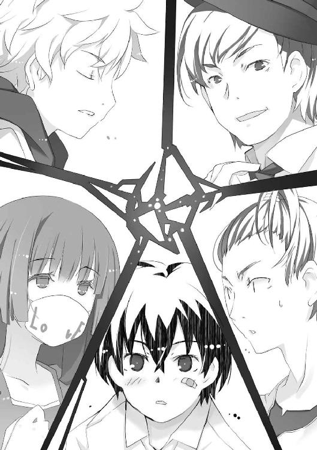
ミッコ、きーくん、ルイ、カッシー。
この四人のせいで、この国が〝虫〟で埋め尽くされて終わる──。
あの霧の中で見た不吉な予言が、大助の不安を膨らませつつあった。
「さあ、好きなだけ食ってくれ！」
高級スーツの青年、ルイが満面の笑みで両腕を拡げた。
大助、ミッコ、きーくん、カッシーの眼前に、豪華なディナーが並んでいた。
「うっはあ、こんなの見たことねー！」
「けほっ」
──メシでも食いながら話さないか。驕るぞ？
そんなルイの誘いに大助が乗ったのは、彼から目を離すべきではないと判断したからだ。
だがまさか、そんなラーメン屋に誘うような口振りで、高級ホテルのレストランに連れてこられるとは思いもしなかった。
店内に、他の客は見当たらない。どうやら貸し切りにしてあるらしい。
「......」
無警戒に料理に飛びつく、きーくんとミッコ。彼らの様子を見て、妙な薬が混入されていないことを確かめてから、大助もフォークを握った。それを見て、カッシーも続く。
「ルイだっけ？ アンタ、すげーな！ 何者なんだよ」
「ただの金持ちさ。親の遺産だけどな。持ってるモンは使わねーと損だろ？」
「ああ、ごく潰しってヤツか。おぼっちゃんっぽいもんなあ」
「うはは、言葉に気をつけろよ、ガキ。メシ代、請求すっぞ？」
きーくんとルイが上機嫌に笑顔を交わす。早くも打ち解けたらしい。
「親のお金で他人に施し、感謝と尊敬を得て優越感に浸るとは良い趣味ですね。よほど歪んだ性格の持ち主と見受けますが、そんな貴方が嫌いじゃありません。料理、美味しいですし」
「色々とひっかかる言い方だが、ありがとう」
ミッコの嫌味も、ルイは苦笑で受け流す。一見、ただの優男だが、黒髪が、光の加減で輝きを変える宝石のようだった。そのくせ態度に飾りがなく、同年代の学生と話しているような気安さがある。
大助はいくつかの料理を口に運び、フォークを置いた。
「ん？ もういいのか、大助？ たくさん食わないと大きくなれないぞぉ」
「ここに来た目的は、晩メシを驕ってもらうためじゃない」
グラスに注がれたミネラルウォーターを口に含み、ルイとカッシーを一瞥する。
「怪しい二人の人間に話を聞くためだ。〝黒い女〟のことをな」
「どこからどう見ても、僕は怪しくない」
カッシーと名乗った少年が言った。パーカーのフードを下ろしているものの、食事中でも首に提げたゴーグルを外すつもりはないらしい。
「だが、彼は怪しい。埠頭で〝黒い女〟を連れ去ったのは彼だ」
「......！」
大助、ミッコ、きーくんの視線がルイに向けられた。
「やっぱり見られてたか。マズイところを見られたな」
ルイがあっさりと認めた。気まずそうに、人差し指で頰を搔く。
「少々、強引な手を使ったが、あれは正当な権利なんだ。本来ならアレは、オレたちが報酬を支払って買うはずだった商品なんだからな」
「けほっ。......円卓会」
ミッコが呟いた。きーくんが首を捻る。
「円卓会？」
「お金持ちの秘密俱楽部です。父の研究のパトロンであり......共犯者でもある。研究の成果を誰が買い取るか、密かに競争していると聞きました」
ルイが眉をひそめた。
「父の研究？ ということは、まさかキミは博士の......」
「娘です」
ペコリと頭を下げる少女を見て、ルイが苦々しい笑みを浮かべた。
「施設から実験体を逃がした、張本人じゃないか......」
「私の家族を返していただけませんか」
「そうするために、円卓会の中で最年少のオレが駆り出されたんだよ。もっとも返すのはキミにじゃなくて、研究施設にだけどな。まったく、良い迷惑だ。オレはとっくに降りて、愛娘と水入らずで旅行にでも行くはずだったのに」
「えっ、子供がいるのか？ その若さで？」
きーくんに訊かれ、ルイが顔つきを変えた。目を輝かせ、懐に手を入れる。
「ああ！ まだ小さいけど、はっきり言って天使──いや、女神だぞ！ 写真、見るか？」
「どうでもいい。それよりも、詳しい話を──」
大助が嘆息すると、ルイが椅子から立ち上がった。
「オレの娘がどうでもいいだと？ おい、ガキ。もういっぺん言ってみろ」
「どうでもいい、どうでもいい、どうでもいい、お前の娘なんか死ぬほどどうでもいい」
鼻先を突き合わせて睨み合う両者。
「けほっ......まるでチンピラですね。低俗な品性が窺い知れ──あうんっ」
「てめ、大助！ だからミッコを叩くなっつってんだろーが！」
「写真見るか？ あん？ それとも録音した声聞くか？ はじめて歩いた時の映像か？」
「悪かった。この通り謝るから、そんなもの見せないでくれ。心の底からどうでもいいんだ」
「......子供の集まりだ」
ぽつり、と呟くカッシーを、彼以外の全員が睨みつけた。
「はっ！ じゃあ、お前らはどうしてあんな場所にいた？ 博士の娘はともかくな！」
額に血管の筋を浮かべながら、ルイが自分の椅子に戻った。年長者だからといって、大人というわけではなさそうだ。
「ミッコを助けたから、その成り行きだ」
「お、俺も......」
「たまたまランニングのコースだっただけだ」
少年三人の言い分を、ルイが笑い飛ばす。
「ウソつけ。どうせ円卓会の謝礼目当てに〝黒い女〟を狩ろうとしてたんだろう。それとも、それ以外にアレを狙う理由があるかだ。これまでにも何人かいたぞ。そんな連中を、オレたちは〝ハンター〟と呼んでるがな」
大助の胸がチクリと痛んだ。聞き覚えのある単語が、過去の苦い思い出を連想させる。
「俺ときーくんに関しては、本当だ。ミッコに聞けば分かる。巻き込まれただけだ」
「じゃあ、ここでサヨナラか？ そんなつもりはなさそうだけどな。カッシーもだ」
ルイの言葉に、沈黙で肯定する少年三人。
「純粋にお前たちの身を案じて言うぞ。もう関わらないほうがいい」
「──〝不死〟の研究とやらに興味があるんだ」
ミッコのそばにいるには、理由が要りそうだ。大助は言う。
「だから今さら、引き下がるつもりはない」
「俺も......あの〝黒い女〟に何かされたかもしれないんだ。アレが何だったのか知りたい」
きーくんが唇を嚙んだ。見捨てられることを怖れているのだろう。
「〝不死〟──だって？」
カッシーの目つきが一瞬、鋭くなったのを大助は見逃さなかった。
「今、興味が湧いた。勝手につきまとうことにしたから、僕のことは気にしないでいい」
「馬鹿馬鹿しい──」
ワインを飲み干し、グラスを乱暴に置くルイ。その表情には怒りの色が滲んでいた。
「ミッコから聞いたのか。あんな失敗した研究のことを......」
「失敗？」
大助はミッコを見た。研究が失敗したというのは聞いていない。
「けほっ......失敗と思わない人もいました。だから私は家族を連れて逃げたんです」
「富と名声を手に入れた歴史上の人物が、最後に不老不死を探し求めたように......円卓会の中にもそれを追求した人間が多くいた。だが結果はどうだ。〝不死〟どころか、得体の知れない化け物を生んだだけだ」
〝虫〟を生む化け物──。
いや、正確には〝不完全な虫〟か。
〝不死〟という本来の目的から外れたとはいえ、次の〝始まりの三匹〟となり得る存在を生み出したというのなら──。
大助は、その研究とやらを見過ごすわけにはいかない。
「でも、あいつは......〝黒い女〟は車に轢かれても死ななかった。あれって──」
恐ろしい光景を思い出したのか、震える声できーくん。
ルイが嫌悪感も露わに言い放つ。
「死ににくいだけだ。それも普通の人間じゃ絶対に恩恵を得られないような手段を使ってな。口車に乗せられて最初は多少の金を払ったが、オレはとっくに降りた。押しつけられた後処理を済ませたら、こんなくだらない研究なんて終わらせてやる」
「終わらせる、ですか。──本当に？」
けほっ、と咳をして、ミッコがルイを見つめた。
少女の切れ長の瞳と、青年の宝石のように黒い瞳が真正面から向き合った。
「父の研究に終止符を打ち、私といっしょに育った家族を解放してくれるなら......〝狩り〟を手伝います」
「約束する」
真剣な顔で頷くルイ。
それに対し、優しげに目を細める少女の笑みも──心から嬉しそうに見えた。
「それなら私といっしょに逃げた、もう一人の実験体の居場所を教えてあげます」
なんだって？
完全に意表を衝かれたせいで、声が出なかった。
もう一人の実験体──ミッコは今、そう言ったように聞こえた。
「恩着せがましい言い方が気になるが......心当たりがあるのか？」
「けほっ......今、どこにいるのかは分かりません。でも彼はきっとそこへ向かうでしょう」
「彼、だと？」
思わず大助は椅子から立ち上がった。
新たな〝始まりの三匹〟となり得る〝四匹目〟が誕生するかもしれない。
その可能性を秘めた〝黒い女〟が捕まったことで、あとは研究とやらの内容を探るだけ。
てっきり、そう考えていたのに──。
「まさか、お前の家族とかいうのは、他にも......」
「ええ、いっしょに逃げたのは、二人です」
食事を終え、ミッコがマスクを口に戻した。
「でも彼ら以外にも、私の家族はたくさんいます」
まるで仲の良い家族を紹介するかのように、少女が微笑んだ。
真夜中。
ルイにあてがわれたホテルの部屋に、ピッという小さな音が響いた。
暗闇に包まれた部屋に、明かりが差し込んだ。入り口のドアがゆっくりと開いたのだ。
「こんばんは。......こほっ」
床の上に体育座りしたミッコが言うと、侵入者の動きがピタリと止まった。
「貴方が先に来ましたか。予想外だとは言いませんけど......こほっ」
「......僕が来ることが分かってたのか？」
フードをかぶり、ゴーグルで顔を隠した少年──カッシーがミッコを見下ろした。
「父の研究に興味がある様子でしたから。そのキーは廊下にいるルイの私兵を倒して奪ったんですか？ ──安心してください。貴方がクールを装いながら、実は深夜に女性の部屋に侵入するような変態だとしても、私は嫌いになったりしないであげます」
「僕は変態じゃない」
「私を誘拐し、父の研究の詳細を吐かせようというなら、不可能ですよ。廊下以外にも、ルイの私兵はたくさんいるようですから」
「この部屋で話を聞くという手もある」
「それも不可能ですね。もうすぐ彼が来るでしょうから......」
「彼？」
カッシーがゴーグルを外した。
ミッコは少年を見上げ、目を細めた。
「貴方の背後にいる人です」
「──ここで何をしてる」
耳元で呟かれ、カッシーは心臓が鷲づかみにされた錯覚を覚えた。
亡霊のような人影が、カッシーの背後に佇んでいた。いや、廊下の明かりを背に浴び、鋭い眼光を浮かび上がらせた姿は、亡霊というより──死の宣告に訪れた悪魔のようだ。
大助である。
「そこらへんに転がったルイの私兵は、お前の仕業か。やっぱり普通のガキじゃなかったな」
「......お互い様だ」
わずかに顔を強ばらせ、カッシーはミッコの前から退いた。
「大丈夫か、ミッコ？ 何かされたのか？」
大助が心配そうにミッコを見下ろした。先ほどの悪魔のような殺気が噓のようだ。
「貴方の登場で、より危険になったともいえます。なぜなら女性とあれば見境のない貴方が、私を毒牙にかけようと夜這い──あうん。なんともありません」
「キミの予言通りだな。僕が現れ、次に大助が現れた」
「......予言だと？」
カッシーと大助が、床の上に座ったミッコを見下ろす。
「けほっ......貴方がたは似ています。何かの使命を背負い、父の研究について知る必要性に迫られているのでしょう。必ず私に会いに来ると思ってました。他の人間を出し抜くために」
二人の沈黙が、ミッコの推理を肯定していた。
「だからお断りしようと思って待ってました。私、今日はとても疲れてしまって......」
「そうはいかない。喋ってもらいたいことは、いくらでもあるんだ。研究の内容とかな」
詰め寄る大助の顔が、ぼんやりと霞んだ。
ミッコは咳き込む。研究施設から逃げ出した時から風邪を引いていたが、体力を消耗したせいで悪化したようだ。熱と疲労で、思考がまとまらない。
「父の研究は──」
赤らんだ顔で、目を細める。
思い出そうとすると、過去の光景が脳裏に蘇った。
散らかった研究室に閉じこもり、取り憑かれたように研究に没頭する父。ミッコはそんな父の背中を見て育った。床に散らかった研究の資料が、絵本代わりだった。
円卓会とかいう胡散臭い金持ちが現れ、父とミッコに研究施設を提供した。父は歓喜し、円卓会に実験体を要求しては、非人道的な研究を進めた。
ミッコに与えられたのは、どこからともなく連れてこられた実験体の世話役だった。
研究施設に閉じ込められたのは、ミッコも同じだ。弱っていく実験体たちの体調を管理し、彼らの話を聞き、その命を繫ぎ止めた。
彼らは色々な話をしてくれた。
身の上話から、父に対する罵声まで。怒り、悲しみ、苦しみ、たまに喜び──。
あらゆる感情を込めた話を聞いては、ミッコが彼らに慰めの声をかけた。
そしてある日、奇跡が起きたのだ。
「貴方たちは......心の底から、望むことがありますか？」
とろんとした目つきで、カッシーと大助を見上げる。
「何を犠牲にしてでも、叶えたい思い......」
大助が息を呑んだのが分かった。
「ない」
答えたのは、カッシーだった。
「僕にとって自分の望みは、意味のないことだ」
「......悲しいですね。人は誰でも手に入れたいものがあり、希望に向かってしか生きることができないんです。その希望のためなら──死も乗り越えられる。願うものがないというならば、貴方はすでに絶望している。空っぽな貴方は、生きながら死んでいるのです......けほっ」
カッシーが、はじめて感情を露わにした。
怒りだ。眉を吊り上げ、今にも首を絞めそうな形相でミッコを睨みつける。
「でも、私は──そんな貴方が好きです」
驚いたようだ。
目を見開いたカッシーを、ミッコの優しい笑みが包み込む。
「貴方がこれから何を望むかは、貴方が決められるんです。誰かに与えられたわけでも、誰に強制されたわけでもない──貴方自身が望んだものを希望にし、それに向かって生きることができる。それは幸運なことです」
「......」
「貴方は今、誰よりも自由なんです」
いよいよ熱が高まってきたようだ。後頭部が、コツンと壁に当たる。
視界が一瞬、暗転した。
脳裏に浮かんだのは、ミッコの知らない光景。
尖ったシルエットの巨大な建造物の前で、見覚えのある黒い男と向かい合う自分の姿。そのそばにはきーくんやルイ、カッシーもいる。
場面が変わり、ミッコは打ち棄てられた廃船にいた。
──きーくん、カッシー、ルイ......それに私も......ここへやって来てはいけなかった......。
他の誰でもない自分が、そんなことを言った。
見覚えのあるような──しかし、今の彼女が知りうるはずのない光景だと感じた。
なぜ今、自分がそんな光景を見たのか。
その理由を思い出す前に、呆然とした呟きが彼女を現実に引き戻した。
「僕は──」
ミッコの言葉は、予想外にカッシーを動揺させたようだ。冷静だと思っていた少年が唇を嚙み、握った拳を震わせていた。
「私たちは全員、きっと仲良くなれます。そう、家族のように......」
廊下の向こうから、バタンッという音が響いた。
「うあ......うぁああ......！」
「おい、どうした？」
きーくんが姿を現した。訊ねる大助に、タックルするようにすがりつく。
「お、俺の腕......俺の腕はちゃんとついてるよな？ な、なあ、大助！」
かなり取り乱した様子だ。もちろん、彼の腕は二本とも無事である。
「ちゃんとあるに決まってるだろ。悪い夢でも見たのか？」
「夢......そうか、夢だよな。──って、お前ら、なんでミッコんとこにいるんだよ！ 俺だけ仲間はずれにすんなよぉ！」
「ふわあ......なんでお前らが集まって、オレの部下が寝てるんだ」
ルイまで現れた。
「細かい話は訊かないでおいてやるから、子供はさっさと寝ろ。地球より大事な娘との団らんをおいてまで、付き合ってやってる身にもなりやがれ。さもなきゃ力ずくだ」
ひどく不機嫌な青年は本気のようだ。バキバキと拳を鳴らす。
ミッコは彼らを見回し、大助に向かって目を細めた。
「私たち全員、仲良くなれます」
「......」
大助が嫌そうに嘆息し、きーくん、カッシー、ルイが互いの顔を見合わせた。
「そう、私は貴方たち全員を──」
限界に達し、気を失っていく最中で──。
ミッコは自分自身が何者なのか、思い出しつつあった。
早朝にホテルを出た五人は、赤牧市の郊外にやって来た。
高級車を降りるなり、大助は眉をひそめる。
「赤牧市に、こんな場所があったのか......」
朝靄に包まれたファンタジックな異世界が、眼前に拡がっていた。
中世のヨーロッパ風の建物──確かバロック建築という類の、複雑な彫刻が施された建造物が見えた。館や宮殿、寺院らしき建物が並ぶ街並みが、柵の向こうに拡がっている。
きーくんが意外そうに大助を振り返った。
「お前、来たことねーの？ カステッロ」
「カステッロ？」
「〝カステッロ・ディ・ラゴ〟だよ。俺、いつかデートで来たかったんだよな。昨日、振られた子とだけど......」
「カステッロ・ディ・ラゴ......」
そう言われると、名前だけは聞き覚えがある気がした。確か外国資本のテーマパークだったはずだ。
大助はある事情で、数年前に赤牧市に住んでいたことがある。当時は自分の任務で精一杯だったせいか、このテーマパークで遊ぶのはおろか、存在すら気がつかなかった。
カッシーがミッコに訊く。
「ここに、もう一人の実験体が？」
広大な敷地を囲む柵の前には、すでにルイの私兵である武装集団が待機していた。射出式のスタンガンを装備した迷彩服たちが、無線で連絡を取り合っている。
「こほっ......ええ、間違いありません」
ミッコは一晩休んで、多少は体調が回復したようだ。しかし咳が止まる気配はない。
「なぜ、分かる？」
「ここには、彼が望むものがありますから」
人は希望に向かって生きる──。
昨夜、そう言ったのはミッコだ。推測や予想といったものとは全く異なる、確信に至る何かが彼女にはあるらしい。
「当たりのようだ」
私兵と何やら話していたルイが、苦い表情で大助たちの元へ戻った。
「敷地内に、奇妙な化け物がいるのを部下が確認した。施設内の係員と連絡がつかないどころか、昨日からカステッロに入場した客の消息も途絶えているらしい」
きーくんがぎょっとした。
「いっ？ そ、それって......」
「円卓会のコネを使って周囲に人が近寄らないようにしてあるが、関係者やマスコミを抑えられるのも限界がある。──どうする？」
「......こほっ」
ミッコが歩き出した。受付のいない入場口に向かう。
大助も少女のあとに続いた。カッシーもそれにならう。
「訊くまでもなかったか」
「え、ええー......？ ま、まだ心の準備ができてないんだけど......」
「ここに残ってもいいんだぞ、きーくん。むしろ、そのほうがいい」
「うううぅ......い、いやだ、置いていかないでくれ」
ルイが笑って歩き出したのを見て、半泣きのきーくんが慌てて追いかける。
入場口を通り抜けると、レンガ張りの広場に出た。彫刻が施された電灯や、馬の彫刻に繫げられた馬車の置物が朝靄の中に現れる。
大助たちは広場を抜け、さらに敷地の中へ歩を進めた。
不気味な沈黙に包まれたテーマパーク内は、まるっきりの無人のように思えた。
だがすぐに、その考えは裏切られた。
朝靄の中に倒れる人影に気づいたからだ。
「ひ、ひいぃぃっ！」
ひきつった悲鳴を上げたのは、きーくん一人だけだった。
倒れていたのは、一人や二人ではなかった。年齢や年格好も様々な人々が地面に横たわり、ピクリとも動かずにいる。
カッシーが倒れた一人に近づき、首に指を当てる。
「死んではいない。気絶しているというのも、少し違うように見える」
「昨日、ここに遊びに来た利用客たちか」
ルイが怒りを滲ませ、呻いた。
大助が見る限り、〝虫〟を殺された虫憑きが陥る状態に似ていた。感情と記憶を失い、生ける屍と化した欠落者である。
「彼の餌食になったのでしょう。私の家族──私の〝兄〟に......けほっ」
「お、俺の友達と同じだ......」
きーくんが震える声で言った。
「同じってことは、つまり──」
大助は朝靄の向こうを睨んだ。バロック調の建物の陰から、無数の影が現れた。
「こうなるな」
蜘蛛の脚らしき棒のような物体から、甲虫の頭部だけが宙に浮かんでいるのもある。
見えている範囲だけで五匹。さらに、その数は増しつつある。
〝不完全な虫〟だ。
仲間が出揃うのを待っているのか、それとも大助たちの動向を窺っているのか。じっとこちらを見つめている。
「ひぃ......」
ぺたりと尻餅をつくきーくんを、腕を摑んでルイが強引に立たせる。
「立て、きーくん。死にたくなかったらな」
大助はいつでも動けるよう警戒しつつ、眉をひそめた。
「こいつら......昨日から敷地内に留まってるのか？ 〝不完全な虫〟たちは、すぐに消えるはずじゃなかったのか？」
「生み出す〝虫〟が、少しずつ変化しているのかもしれません......けほっ」
変化なら、まだいい。
だがもしそれが〝進化〟だったとすれば──いずれは大助のよく知る〝虫〟になるのではないだろうか？
大助が抱いた不安は、増す一方だ。
「それに〝兄〟は縄張り意識が強いので......ここで生まれた彼らは、〝兄〟を守る兵隊のようなものなのでしょう」
ミッコがさりげなく大助の背後に回って、彼を盾にする。
「ですから〝兄〟に何かあれば、この〝虫〟たちは赤牧市に解放されるでしょうね」
「実験体をどうにかする前に、こいつらを何とかする必要があるってことか。でも、この数が園内に散らばってるとなると、厄介だぞ」
大助は拳を握りしめた。
自分の〝虫〟と同化できれば、それらを駆逐することも不可能ではないだろう。
だが昨夜も何度も試してみたものの、とうとう〝虫〟の力を使うことはできなかった。
赤牧市を囲む、あの霧に何かされたのか......？
自分が虫憑きから普通の人間に戻ったと喜ぶほど、大助は楽天家ではない。迂闊にも何らかの〝虫〟による攻撃を受け、力を封じられた怖れがある。
「この化け物が何者か、知っているみたいだな。そうなると僕の幻覚ではなさそうだ」
〝不完全な虫〟をはじめて見たらしいカッシーが、しかし冷静に言う。
「ここから先へ進む者は攻撃する──僕にはそんな様子に見える」
「同感だが、オレの兵隊は敷地全隊に配置できるほど多くないぞ」
次々と姿を現した〝虫〟たちが、じりじりと大助たちに接近した。だがすぐに襲ってこないところを見ると、カッシーとルイの推測は間違いではないように思える。
「作戦を立てましょう。私は小さい頃、ここに来たことがあります」
ミッコがそばの売店からパンフレットを無断借用し、五人の足元に拡げた。
「こう......けほっ......二手に分かれて、このルートとこっちを通って......こう動けば、敷地内のおおよその場所を通過できると思うので──」
彼女の指が、目まぐるしくパンフレットに記された地図の上を滑った。咳き込みながらも、流れるように作戦の内容を説明する。
「〝虫〟を処理した後に、〝兄〟がいるであろう場所に案内します......けほっ」
ミッコが立てた作戦は単純で明快だったが──危険だった。
全員が神妙な顔で、互いの顔を見つめる。
沈黙は、すぐに破られた。
「北にはオレとカッシーが行こう。お前たち三人は南だ」
まず決断したのは、ルイだった。
「僕に命令するな」
文句を言いながらも、パーカーのフードをかぶるカッシー。作戦に乗るようだ。
「またお前らのお守りか」
「こほっ......口では嫌と言っても女性といっしょに行動できて嬉し──あうんっ」
「うそだろぉ......マジかよぅ」
病人と臆病者の面倒を見るのは不本意だが、大助としては他の選択肢がなかった。
大助たちは三人で動くのが初めてではないし、カッシーとミッコを同じ組にするのは危険だ。それぞれ五人の立場や性格を、ルイはすでに把握しているらしい。
「生きてたら、またうまいモン食わせてやるからな、ガキども」
「朝食のパンは少ししけっていた」
「なんで俺におぶさろうとしてんだ、自分で動け」
「けほっ......冷たい態度をとりながらも実は──あうんっ」
「死にたくない......」
それぞれ別れの言葉を口にし、五人は二手に分かれた。
その直後──。
「──これは、私が見た光景と違う......」
ぽつり、とミッコが呟いた言葉が気になった。
ミッコが立てた作戦とは、いたってシンプルだった。
二手に分かれて敷地内にいる〝虫〟を引きつけ、ある場所へ誘導する。
たったそれだけだ。
だが、彼──きーくんにとってだけは、達成不可能なミッションに思えた。
「ぎゃあああぁあああっ！」
〝カステッロ・ディ・ラゴ〟という名のテーマパークは、化け物が跋扈するホラーパークと化していた。敷地中に老若男女が倒れ、躰の一部分しかない〝虫〟がひしめいている。
化け物を引きつける、という目的で走り出して数分。
全力疾走する彼らの背後には、すでに〝虫〟の行列が出来ていた。
「どれだけいるんだよ、こいつらぁああ！ もう無理だ！ 死ぬぅううっ！」
「げほっ！ ごほっ！ ぜえっ......ぜえっ......！ 私も、もう限界です......」
「まだ走り出したばかりだろうが！」
泣き叫ぶきーくんと、よたよたと頼りないミッコ。そんな二人を叱咤する大助。
そんな三人組でも、〝虫〟たちは獲物と思ってくれたようだ。彼らの姿を見つけた〝虫〟が、またぞろぞろと彼らを追走する。その数はすでに三十匹近くまで膨らんでいた。
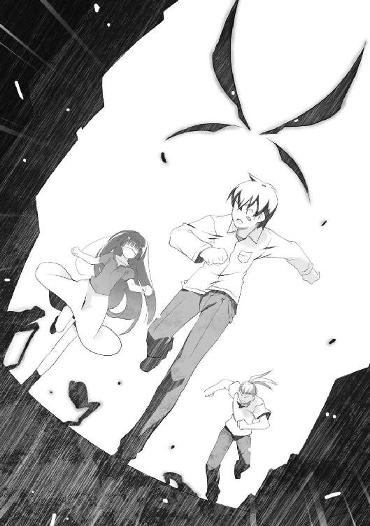
別れたルイとカッシーのほうも、きっと同じような状況だろう。
だが彼らのほうはうまくやっていそうな気がするのは──体力もなければ頭も悪い、自分のような足手まといがいないからだ。
「ひっ......！」
前方の時計台の陰から、数匹の〝虫〟が現れた。
「止まるな！」
大助が鋭く叫び、加速した。
飛び出した大助を、鎌のような脚しかない〝虫〟が串刺しにしようとした。だが大助は寸前で身を沈めて避け、頭部しかない〝虫〟の前方へ滑り込む。
鋭い牙が嚙みつきにかかるが、大助がフェイントを入れて横に跳んだ。何もない地面を嚙み砕いた頭しかない〝虫〟が勢い余って、他の〝虫〟に体当たりした。
もつれあい、売店に突っ込む〝虫〟たち。きーくんとミッコの前方が、がら空きになった。
「すげえっ......！ な、何なんだ、お前！」
一歩間違えたら、身体をバラバラにされて死んでいただろう。
そんな状況に平然と飛び込める神経が、きーくんには理解できなかった。見た目的にはどう見ても、そこらへんにいる普通の少年にしか見えないのに──。
大助が戻り、きーくんとミッコの前方を走り出した。
「宿主がいない〝虫〟ってのは、こんなに単純なのか......これじゃ動物以下だ」
「げほっ......！ 宿主？」
「いや──なんでもない」
少しだけ、希望が湧いた。
なぜかは知らないが、大助という少年はきーくんが思っていた以上に、このような状況に慣れているようだ。これなら無事に作戦を成功させられるかもしれない。
ワケの分からない実験体とかいうのを捕まえて、一件落着。
そうして事態が落ち着けば、きーくんの身に何が起きているかも解明してもらえるはずだ。
それまでは必死に彼らについていく。──そうでもしなければ、敷地内に倒れた人々のように、ただの被害者として忘れ去られるだけだ。
置いていかれて、たまるか──。
今のきーくんには、その一心しかなかった。
「げほっ！ ごほっ！」
「大丈夫か、ミッコ？」
「はあ、はあ......苦しむ女性を見て見ぬフリして......加虐的な性癖を満たす......そんな変態的な貴方でも私は──あうんっ」
「ちっ」
さすがに限界と見たのだろう。少女の頰を軽く叩いてから、その細い身体を背負う大助。
「言っとくが、お前は自分で走れよ、きーくん！」
「ぜえっ、ぜえっ......分かってるって......！」
虚勢を張るも、すでに脚が痛くなっていた。
ミッコを背負っても、大助の走る速度は変わらなかった。「首に息を吹きかけるな！」「お礼です。好きそうに見えたので......こほっ」「どこをどう見たんだ！」と言い争う二人の背中を見て、きーくんの胸がチクリと痛んだ。
ミッコは最重要人物だ。何か重大なことを知っているようだし、頭が良く、美人でもある。
そんな彼女を助ける騎士役は、どうやら大助らしい。あわよくばその役について格好をつけたかった、きーくんではない。
「──自分が見た光景と違う、っていうのは一体どういう意味だ？」
「こほっ......なんのことですか？」
「とぼけるな、ついさっきお前が言ったんだ」
大助とミッコが、言い合いを始めた。
きーくんとは関係のないところで。
「よく憶えてませんが......たぶん、以前遊びに来た時のカステッロと違うという意味でしょう。なにしろこの有様ですから......こほっ」
「父親の研究の内容についても、そうやってはぐらかすつもりじゃないだろうな？」
当然だ。
きーくんは大助と違い、見た目通りの平凡な高校生で、何ができるわけでもない。
彼らに必死についていき、誰かに助けてもらうことを願うだけ。
そう思うと、むしょうに情けなくなった。
「......だからって、諦めてたまるか」
ぽつりと呟く。
誰かを助けたいとか、世界を変えたいなどといった大それた夢など見たりしない。
ただ、死にたくないだけだ。あんなに良いヤツらだったのに〝黒い女〟の餌食になった友人や、カステッロ内で置物のように倒れた人々と同じ結末を辿るのは悔しすぎる。
「いてっ」
考え事をしながら走っていたら、倒れた人々につまずいてしまった。
転倒し、痛めた膝をさすりながら、顔を上げる。
「あ──」
大助とミッコの背中が、はるか前方に遠のいていた。
恐る恐る背後を振り向くと──当たり前のように、〝虫〟の大群が迫りつつあった。
「大助──助け──」
声が出なかった。
恐怖のあまり、腰が抜けてしまった。全身から冷たい汗が噴き出す。
大群の先頭にいるのは、頭部しかない〝虫〟だった。頭以外の躰がないとはいえ、その大きさは彼の通う教室では収まらないだろう。
「ウソだろ──」
生まれてきてから、悪さなど一つもしたことがない。
難産でもなく、あっさりとこの世に産み落とされた。大きな怪我や病気もなく、成績は常に中の中。中学生時代はバスケットボール部に所属していて、年功序列に近い形で二年生からレギュラーになったこともある。
良い友達に恵まれ、念願の彼女もできた。後者はすぐにフラレたが。
そこまで自分の人生を振り返ってから、はたと気づく。
「これが走馬灯ってヤツか──」
人助けができるとも、しようとも思わない。
何かを変えられるような力もない。
ただ、死にたくないだけ。
何も出来ない自分が、そんなささやかな願いを抱いて何が悪い──。
開き直りのように願った、きーくんの上半身が──。
「──」
〝虫〟に頭から齧り付かれ、血飛沫とともに砕け散った。
「父親の研究の内容についても、そうやってはぐらかすつもりじゃないだろうな？」
〝虫〟の大群を引き連れて走りながら、大助は背中の少女に尋ねた。
「......貴方は、やけに〝虫〟の対応がお上手なんですね」
話をそらそうとする、ミッコ。
前方から、〝虫〟の胴体が現れた。高速で転がって襲いかかるそれを、大助は花壇を利用して跳び越える。
大助の身体には、〝虫〟との戦い方や対応方法が叩き込まれている
それは特別環境保全事務局が積み重ねた、知識と経験の結晶だ。十年以上もの月日と、大勢の犠牲を代償にしている。
自分の〝虫〟が使えないとはいえ、こんな下等な〝虫〟ごときに怯むわけにはいかない。
「このまま秘密にしていたら、頰をはたかれる程度じゃ済まなそうですね......こほっ」
勘は鋭いらしい。この場に置き去りにしてやろうかと考えていたところだ。
「父は、母の死を受け入れられませんでした。生と死について深く悩み、結果として〝不死〟の研究に没頭するようになりました。......こほっ」
前方に、大きな水たまりが見えた。
湖だ。
雲のように朝靄がかかり、小さな浮島が浮かぶ姿は、まるで小さな箱庭のようだ。
「〝不死〟を得る手段として、遺伝子操作やその類による研究は早期に捨てました。人類発祥から今日に至る長い年月を経ても、人は〝不死〟にたどり着けずにいるから......彼が欲したのはもっと劇的な変化でした」
「前置きはいい。研究の内容を話せ」
大助はミッコを背負ったまま、湖を迂回するように走る。先ほど見たパンフレットによると、敷地内の至る場所に人工湖が点在しているようだ。
「こほっ......父が着目したのは、人の精神と肉体の結びつきでした」
「精神と肉体の......結びつき？」
「ある精神状態において、肉体が死を凌駕するケースが稀に存在したんです」
「......」
「戦争時、致命傷を負いながらも仲間を助けたい一心で戦い抜いた兵士。やはり事故で致命傷を負ったのに、娘に会いたいと強く望んで生還した父親。恋人の声を聞き、脳死状態から生き返った男......本能とは異なる強い思いが、肉体的な死を乗り越えたんです」
強い思い。
ただの胡散臭い研究と思っていた大助の胸に、嫌な予感が膨らんだ。
「欲望、欲求、願望......希望。その思いを、どう呼ぶのが正しいのかは知りません」
あるいは、夢──とかな。
大助は心中で呻く。
「父の理論に目をつけた人々がいました。お金も地位も、欲しいモノを全て手に入れて人生に飽いた人たち......彼らは円卓会と名乗りました。ただの妄想に過ぎなかった父の研究に、それに相応しい実験体を彼らが提供したことで妄想に留まらせなかったんです」
「相応しい実験体だと？」
大助たちを追いかける〝虫〟の大群は、振り返るまでもなく数を増していた。一定の距離を置いて、地響きと建造物をなぎ倒す轟音が彼らについてくる。
「欲しいモノを、どうしても手に入れられずにいる人たちです。豊かな国内ではなく、恵まれない環境の国から連れられてきた人々がほとんどですが......彼らは飢え、苦しみ、怒り、悲しみ、むせび泣く人々ばかりでした......」
「そいつらに......お前の父親は、何をした？」
「さらに、飢え、苦しみ、怒り、悲しみ、むせび泣くように」
想像しただけで、吐き気がした。
違法なのは当然として、人道的にも決して許されない研究。
それを可能とさせたのが──円卓会という権力者たちなのだろう。
「死者も大勢いました。でもそれは想定内......死の淵に立ってもなお死なない、あるいは蘇る実験体こそが〝不死〟の可能性を持つと父は考えていました......けほっ」
「最低のクズ野郎だ」
「父は正気を失っていたのです。実の娘である私のことさえ、実験体の世話係として滅多に研究施設から出さなくなった人ですから......でもある日、奇跡が起きてしまった──」
「......奇跡？」
「私には何が起きたのか、分かりませんでした。でも貴方がたが〝黒い女〟と呼ぶ彼女が、別の実験体に干渉したのです。──干渉、と呼ぶしかありません。それをされた実験体は、何かを生み出しました。その何かの呼び方はあります。大助、貴方が教えてくれました」
「〝虫〟──」
ミッコの手が、慈しむように大助の頭を撫でた。
「成果を生んだことで、研究は加速しました。実験体の数は増し、私は大事に世話をした彼らがかわいそうで、彼らを連れて施設を逃げ出した......たった二人が限界でしたけど」
「成果、だと？ 〝不死〟と〝虫〟に何の関係があるんだ？ 全く無関係のものが生まれたんだから、失敗じゃないのか？」
「後戻りできなくなったんでしょう......だから成果と言い張っているのです」
ミッコはそう言って話を締めくくるが、大助にとってはただの研究で済ませられない。
特別環境保全事務局の中央本部が、密かに行っている実験──。
その内容を、断片的にとはいえ大助は知っていた。
かつて彼にあるディスクを届けてくれた海老名夕や、もう一人の〝ダイスケ〟との出会いが、それを知らせてくれたのだ。
ミッコの言う研究はそれに通じるものがあるし、〝不完全な虫〟という結果も出した。
「こほっ。実験体の中でも、〝不完全な虫〟を生む可能性があるのはほんの数人だけ......このカステッロにいるはずの彼も、その一人です」
このまま研究とやらが進めば、取り返しのつかないことになる。
大助の中で、不安が確信に変わりつつあった。
乳白色の霧の中で見た光景が、脳裏をよぎる。
──もし過去に戻れるなら──貴方たちを全員、出会った瞬間に殺すでしょう......。
どことも知れない廃船で、ミッコが泣き笑いながら言ったのだ。
──きーくん、カッシー、ルイ......それに私も......ここへやって来てはいけなかった......。
あの不気味な予言。
あれが本当に幻でなかったとしたら。
──私たちのせいで、この国は〝虫〟に埋め尽くされて終わるでしょう。
どうして大助が、あのような光景を目の当たりにしたのかは分からない。
だがあれが未来の破滅を示すものだとしたら。
大助が今、こうしてミッコやきーくんを守っているのは、誤りではないだろうか？
自分が本当にすべきことは、あの光景の中でミッコが願ったように、彼らを──。
「こほっ......ところで」
ミッコの声で、大助は我に返った。
何を考えてるんだ、俺は──。
一瞬でも馬鹿馬鹿しい考えを抱いた自分に苛立つ。
「きーくんは、どこにいるんでしょうか？」
ぴたり、と大助は立ち止まった。
振り返ると──そこには、どう猛な〝虫〟しかいなかった。
いつの間にか、やかましく泣きわめくだけの少年の姿が消えていた。
「高校二年生って言ってたな、カッシー。どうだ、学校は楽しいか？」
「......それなりに」
「どこの国から来たんだ？ 見たところ、欧米なのは分かるが」
「......」
「日本語うまいよな！」
「......どうも」
うざい。
カシュアは、やたら馴れ馴れしく喋りかけてくるルイが鬱陶しくなっていた。
それこそ──今まさに彼らの後方を追いかけてくる、〝虫〟の大群よりもだ。
ほぼ初対面、それも互いを怪しんでいる関係だというのに、長年の親友のように、あるいは父親ぶった顔でコミュニケーションをとろうとする意図が理解できない。
「留学しに来て、長いのか？ 友達はできたか？」
「......少しは」
カシュアとルイは、順調にカステッロ内にいる〝虫〟たちを誘導していた。
日頃から鍛えているカシュアはともかく、ルイもそれなりに体力があるようだ。動きづらそうなスーツを着ているのに、疲れた様子を見せない。いっそのこと疲労して〝虫〟どもに喰い殺されてくれれば、少しは静かになるのだが。
「カノジョはいるのか？ いるんだろ？ 男前だからな！」
「......」
「避妊はしろよ？ まあ、養う甲斐性があるなら、しなくてもいいけどな！ オレみたいに！」
笑って彼の背中をバンバンと叩くルイ。この国に来てはじめて、他人に殺意を憶えた。
「......恋人はいない」
「そうか、意外だな！ モテそうなのに」
それは問題だ。彼に恋人がいないと不自然に見えるなら、作る必要がある。
「いいか、学生のうちの恋愛ってのはだな──」
どうでもいいことを語り始めたルイを、適当な相づちで受け流しながら走り続ける。
二手に分かれたミッコたちの様子が気がかりだ。本来ならミッコと二人組になるのが理想的だが、昨夜の一件もあるから、それが不可能なことは分かっていた。
焦る必要はない。あちらには、きーくんはともかく、大助がいる。
あのバンソウコウの少年には、自分と同じ匂いを感じた。
一見して平凡に見せかけ、実はかなりの戦闘経験を踏んでいるはずだ。ただのケンカ屋程度では、カシュアにあそこまで無音で接近することはできない。あの歳で軍属経験があるはずもないし、何らかの特殊な機関で訓練を受けたことがあるのだろう。
「あの年頃の女子ってのはサプライズが好きなんだ。日常の中にちょっとした非日常を──」
大助が何らかの目的で、ミッコに張りついているのは確かだ。
もし本当に大助が、カシュアと同じような人間だとしたら、目的は明白である。
〝不死〟──そして〝虫〟。
それらの秘密を持ち帰ることができれば、カシュアが属する国は成果と認めるだろう。たとえ失敗作の〝不死〟と、こんな野生の動物にも劣る化け物といえどだ。
カシュアは、この国に起こりつつある異変の正体を摑むために送り込まれた。
それを見事に完遂すれば──。
そこまで考えて、気分が沈んだ。
すべきことをしたからといって、カシュアがどうなるわけでもない。
また見知らぬ国に送り込まれ、似たようなことを繰り返すだけだ──。
「なんだ、女子を口説く自信がないのか？ そんな顔するなよ」
「......どんな顔もしていない」
ふと、昨夜の出来事が脳裏をよぎった。
──空っぽな貴方は、生きながら死んでいるのです。
風邪っぴきの女、ミッコが言ったことは的を射ていた。だからつい、憤慨したのだが──。
──でも私は、そんな貴方が好きです。
彼女はカシュアが自分自身で望むものを決められると言った。
誰から与えられたわけでも、強制されたわけでもない、自分が望んだ生き方ができると。
──貴方は今、誰よりも自由なんです。
馬鹿馬鹿しい。
自由。それはカシュアから最も遠い言葉だ。
生まれてから一度たりとも、自由を感じたことなどない。今さら与えられても困るだけだ。
「もっと笑え！ 少しは愛想良くしたほうが人生得するぞ、カッシー。反抗期か？」
「うるさい」
ミッコを尋問するのは後回しだ。
まずはこの男──ルイからだ。
円卓会のメンバとして、ミッコの父の研究とやらにも関わっていたようだ。全く情報が得られないということはないはずだ。
拷問の末に死んだとしても、〝虫〟に喰われたといえば誰も疑わないだろう。
「ペースを上げるぞ、ルイ。このままじゃ追いつかれそうだ」
「そうか？ まあ、いいぜ」
脳天気に承諾するルイ。本当に円卓会という権力者の一員なのか、疑いたくなってきた。
いったん〝虫〟を引き離し、適当な場所で拷問することにしよう。そのための知識も道具もカシュアには備わっている。
拷問だけではない。科学、物理、数学、電気工学、機械工学──カシュアはありとあらゆる知識を幼少時から叩き込まれてきた。
「なあ、カッシー」
「なんだ」
また安い恋愛論や説教だろうか。さすがにウンザリだ。
「お前、家族はいるのか？」
「......」
「いないだろうな」
なぜ、そんなことが分かる──。
どうでもいいはずのことなのに、なぜか腹が立った。
「コレを見ろ。オレの娘だ。可愛いだろう？ 絶世の美女だろう？ 成長が楽しみなんだ」
懐から取り出した写真を見せられた。ドレスを着た──いや、無理矢理ドレスを着させられたのが分かる、まだ小さな幼児が写っていた。
「......それがどうした」
「可愛いだろって訊いてんだ！ 可愛いって言え！」
この野郎。
「ああ、可愛い、可愛い。だから、さっさとしまえ」
「よし──合格だ」
上機嫌に写真を懐にしまい、青年が──。
走るのを、やめた。
「なっ──」
思わず、カシュアも足を止める。
当然、両者の間隔は急速に縮まり、立ち止まったルイに向かって〝虫〟が迫った。
「気でも狂ったか？ 走れ！」
ルイに疲労した様子はない。むしろ、うっすらと笑みさえ浮かべている。
「ルイ！」
カシュアが声をかけても、ルイは一歩もその場を動こうとしなかった。
何か考えがあるのか......？ いや、そんなワケがない！ 死にたいのか？ ついさっき娘の成長が楽しみだと言ったばかりなのに？
かつてないほどにカシュアの思考が目まぐるしく駆け巡った。
「おい......！」
ルイは動かない。試すような視線で、じっとカシュアを見つめるだけだ。
コイツからはまだ情報を手に入れてない......！ いや──情報なら、まだミッコがいる！ だが万が一、ミッコがすでに死んでいたらどうする？ ここで僕もリスクを負ってまで、ルイを助ける価値は？ ちくしょう、このバカ、何を考えてやがる──。
いっこうにまとまらない思考の代わりに、身体が動いた。
地面を蹴り、矢のような速度で舞い戻ったカシュアが、ルイを真横に突き飛ばした。
「ウオオッ！」
ルイを押し潰そうとした胴体しかない〝虫〟に、隠し持っていた小さなナイフを突き刺す。
節くれの隙間にめり込んだ刃を、渾身の力で水平に払う。
どす黒い体液が、弧の軌跡を描いた。苦しげに身震いする胴体が地面に投げ出され、後続の〝虫〟たちを巻き込んで追突する。
一匹だけ、〝虫〟どうしの衝突を避けたものがいた。
脚しかない〝虫〟が、鋭い爪先でカシュアを串刺しにしようとした。
「はっ！」
防御が間に合わないカシュアに代わり、ルイが鋭い呼気を吐いた。どんな魔法を使ったのか、超重量の爪がルイの腕によって受け流され、地面に深々と突き刺さる。
だが完全に無傷とはいかなかった。ルイの腕が裂け、血飛沫が上がる。
「よし、逃げよう、カッシー」
振り返り、ルイがいたずらっ子のような笑顔を浮かべた。
「──」
カシュアは生まれてはじめて、我を失うという体験をした。
ルイの胸ぐらを摑み、突っ走る。
「うわっ、ま、待て、カッシー！ 落ち着け！」
青年の胸を摑んだまま、全力で〝虫〟から離れる。
間もなく〝虫〟を引き離し、彫刻が施された神殿の中へ飛び込んだ。中は売店になっているらしく、グッズが並べられた棚に青年を叩きつける。
「──頭がおかしいのか？ それとも自殺志願者か？」
取り出した小型の注射器を、ルイの首筋につきつける。
「僕には関係ない。好きにしろ。ただし僕の拷問を受けた後、僕に見えないところでな」
「......お前には、本当に家族がいないのか？ 親は？ 兄弟は？」
「いるわけがない。望んでもいないのに人工授精で産み出されたんだ。だから、何だ？ お前が何か悩んでいて、どうせその気持ちが分からないとでも？ 知りたくもないね」
鋭い針先が、ルイの首に刺さった。あとは中身の自白剤を注入するだけだ。
「親のクセに──可愛いと言った自分の娘を置き去りにするようなヤツの気持ちなんて」
ルイが笑んだ。
「カッシー、お前──オレの養子にならないか？」
薬を注入しようとした指が、ピタリと止まった。
思考も止まった。
何かの聞き間違いだろうか？
まるで意味不明な台詞を聞いて、カシュアはぽかんと口を開ける。
「もちろん、お前が嫌じゃなければだけどな」
一体、何を言ってるんだ、コイツは──。
養子？ カシュアを自分の子供にしたいと言ったのか？
昨日まで、赤の他人だった彼を？ ほんの二、三歳しか年が違わない彼を？ 今まさに拷問すると宣言し、注射針を首に突き刺した相手を？
〝虫〟の前に身を投げ出した時よりもよっぽど、眼前の男が気が狂っていると思った。
「なぜ──」
「もし大切な人間がいるなら......空っぽと言われて、あそこまで怒るはずがないよな」
ルイは昨夜の出来事を言っているらしい。
たったあれだけのことで、カシュアに同情したとでもいうのだろうか──。
「オレがこの世で一番愛した人は、娘を生んですぐに死んだ。あの時のオレは、お前と同じように空っぽだった。一度、そう考えたら──お前を他人と思えなくなっちまった」
「......」
「養子うんぬんは抜きにしても、オレをどうにかするのはやめとけ。円卓会はプライドが高い。メンバに手を出した人間には、必ずけじめをつけさせるぞ」
「──僕が死んだら、次が送り込まれるだけだ。今度は僕のように外側からじゃなく、もっと内側から調べるためにな」
予言する。それはもう決まっていることだ。
もしカシュアが死んだとしても、次が送られてくる。それも今度は確実に、カシュアよりも優秀な者が秘密の奥深くに潜入するだろう。
「オレは、お前の話をしてるんだ」
ルイが真正面からカシュアの目を見つめた。注射針に臆した様子はない。
「オレの家族になれ、カッシー。お前を救える手段が他にないことは、お前自身が一番分かってるだろう？」
腐っても円卓会か──カシュアの正体など、とっくにお見通しらしい。
カシュアをバックアップする力は強大だ。だから彼が自分の意思で抜け出すことはできないし、生半可な協力を得たところで不可能なのは変わらない。
だが円卓会、それも肉親関係となれば話は別だ。閉鎖的で保守的な円卓会は、全力でメンバの家族をかばい、死守するだろう。その結束力を崩すことは誰にも不可能に思える。
自由になれる。
家族ができる。
想像だにしなかった──思い描いてしまったら、かえって苦しんでしまいそうで、考えたこともなかった未来をちらつかせられ、カシュアは戸惑った。
「同情か──」
「最初はな。だがそれだけで家族に迎え入れる気はない。でもお前はオレを助けた。自分の使命と天秤にかけた上で──人の親であるオレを助けたんだ。オレはお前を気に入った」
カシュアを動揺させ、なおかつこの場で殺されないための方便だろう──。
そう思えなかったのは、ルイの真剣な眼差しを見たからだ。その黒い宝石のような瞳は相手の心どころか、自分自身の心までも透かして相手の前に曝け出すかのようだ。
「大事なことは、難しく考えるなよ。こういう時は、直感でいい」
ルイが笑った。
「オレたちが家族になったら、楽しそうじゃないか？」
馬鹿馬鹿しい。
だがカシュアは、その言葉を口に出すことができなかった。
「今ならもれなく、世界一可愛い妹がついてくるぞ」
確かに言った。カシュアは写真を見て、その子を可愛いと言ってしまったのだ。
「......お前はどうか知らないが、僕がお前をそう簡単に信じると思うか？」
「手強いな。ツンデレってやつか」
うっかり自白剤をちょっぴり注入してしまった、その時。
「うわぁぁあああっ！」
建物の外から、悲鳴が聞こえた。
その声には聞き覚えがある。
「ちっ──」
カシュアはルイから注射器を引き抜き、建物から顔を出した。
「こんなところで、あいつは何をしてるんだ......？」
「大助やミッコとはぐれたみたいだな」
首をさすりながら、ルイがカシュアのとなりに並んだ。
ちょんまげ頭の人物が〝虫〟を引き連れ、こちらに接近しつつあった。
「ぎゃぁああ──ああっ！ カカカ、カッシー！ ルイも！ 助けてくれぇえええっ！」
きーくんだ。
大声で叫んだせいで、カシュアたちが一度は引き離した〝虫〟たちが反応した。ひとまとめになった〝虫〟の大集団が迫ってくる。
ルイが嘆息した。
「間の悪いヤツだ。──返事はいつでもいいからな」
自分が命拾いした、という認識は微塵もないらしい。
「......お前を助けたのは、あまりに馬鹿げた行動にムカついたからだ。そして今からきーくんを助けるのは──あれを助けないのは、人としてどうかと思うからだ」
「分かった分かった」
カシュアとルイは建物から飛び出し、きーくんと合流する。
「ああ、良かったぁあ！ 大助とミッコのヤツ、俺を置いて行きやがってぇっ！」
情けない顔で泣き叫んではいるが、きーくんは五体満足で傷一つなかった。カシュアたちと合流できたことを含めて、よっぽど運が良いらしい。
「よく無事だったな、きーくん」
楽しげに笑うルイに対し、きーくんが嗚咽まじりに抗議する。
「簡単に言うなよぉ！ 死ぬかと思ったんだからな！ 本当に死ぬかもって──死ぬ？ あ、あれ？ 俺、死にそうな目にあって──あの時、どうしたんだっけ？」
恐怖のあまり、錯乱しているようだ。おまけに情緒不安定になっているらしい。
「カッシーとルイも無事で良かったよぉぉっ！」
「きーくんに心配されるようじゃ、僕らもおしまいだ」
「う、うるせー！ これ以上、友達がいなくなるのはいやだぁぁああっ！」
友達。
きーくんは、ついそう言ってしまっただけなのだろう。
だが怒るわけでも、無視するわけでもなく──。
「誰が、友達だ」
カシュアの口元には、微笑が浮かんでいた。
「けほっ。もうすぐですね......」
背負ったミッコが、咳混じりにそう呟いた。
大助は無言で頷いた。少女一人を背負って長距離を走り続けたせいで、さすがに体力が限界に近づきつつあった。
背後に引き連れた〝虫〟の大群は、すでに最後尾が分からないほどに膨れあがっていた。
大きな池のほとりを走る大助たちの前方に、大きな広場が見えた。
広場の中央には、コンクリート製の巨大なモニュメントが立っている。パレードの途中で放置されたのか、綺麗にデコレーションされた大型車が停車していた。
「──彼らも、ちゃんと仕事をこなしてくれたようですね」
ミッコの言葉に、汗ばんだ顔を上げる。
広場の向こうに、砂埃が上がっていた。
〝虫〟の大群を引き連れて走るカッシー、ルイ、そしてきーくんの姿が見えた。
「きーくん......無事だったのか」
「私の言った通りでしょう？ 彼はきっと無事だと......こほっ」
そう──きーくんの姿を見失って動揺する彼に、ミッコが言ったのだ。
彼は無事だろう、と。
大助は〝虫〟に突っ込んで探しに行くわけにもいかず、彼女の言葉を信じる他なかった。
「それも、お前の予言ってやつか？」
「いえ、気休めというやつです」
大助は眉をひそめた。
ミッコの喋り方や性格が、出会った時から少しずつ変わっているような気がした。
最初はもう少し年頃の少女らしかったのに、どんどんふてぶてしくなっているような──。
大助、ミッコ、ルイ、カッシー、きーくんの五人が、ほぼ同時に広場に入る。
「大助！ ミッコ！ 置いてくなんてひでぇよぉおお！ 死にかけたんだからなっ！」
「いっそ死ねば静かになったのに」
「ずっとミッコを背負ってきたのか？ 大したもんだな」
ちょんまげ頭、パーカー、高級スーツという懐かしい姿と再会を果たす。
「悪い。わりとどうでも良かったから、いなくなったのに気づかなかった」
「こほっ......そういう意味では、存在感のないきーくん自身のせいですね」
お互いの無事を喜んでいるヒマはなかった。
大助たちを追いかけてやってきた〝虫〟たちが、広場に侵入した。あっという間に広い面積が大量の〝虫〟でいっぱいになる。
大助たちはモニュメントの手前で直角に曲がり、広場の出口を目指す。
五人が肩を並べ、花でできたアーチをくぐる。
「ようし──いいぞっ！」
ルイが叫んだ。
すると広場を囲む花壇の陰から、大勢の人影が飛び出した。
迷彩服を着た武装集団だ。マシンガンを構え、大助たちを追いかけようとした〝虫〟たちの前に立ちはだかる。
「撃てっ！ 撃ちまくれぇ！」
一体どうやって、これだけの兵隊と武器や弾薬を集めたのか。想像するのも嫌になるほどの銃声が響き渡った。
火花と閃光、そして大量の硝煙が広場を埋め尽くした。
広場を囲むように待機していたルイの私兵が、〝虫〟に向かって一斉掃射を開始したのだ。
「動くものがなくなるまで撃ちまくれ！ 弾代なら、いくらでもあるぞ！」
銃声の合間に、威勢の良いルイの鼓舞が飛ぶ。
カステッロ・ディ・ラゴ内にいる〝虫〟を一カ所に集め、重火器で一網打尽にする。
たったそれだけの単純明快な作戦だった。
通常の〝虫〟ならば、それでも倒せるか分からないだろう。だが特殊な能力もなく、知能も低い〝不完全な虫〟相手には、じゅうぶんに有効な手段だった。
堅い外殻を撃ち抜かれて倒れ、次々と消えていく〝虫〟たち。
「......」
目の前で効率良く殲滅されていく〝虫〟を見て、大助は考える。
もし今、大助が〝虫〟の力を使うことができたならば、自分はどうしただろうか？
おそらく──ミッコの作戦など信じずに、独りで〝虫〟を倒して回っただろう。もう残り少ない力を無駄に消費し、全滅させる前に力尽きていたかもしれない。
「俺の力がなくても......〝虫〟を倒すことはできるのか」
あまりにも当然のことに、今さら気づかされた。
火種一号〝かっこう〟という虫憑きの力は、とてつもなく強力だ。
だがその力に頼り切っていたのは、他の誰でもない、自分自身だったのかもしれない──。
「けほっ......その腕、怪我をしたんですか？ ルイ」
ミッコの言葉で我に返り、ルイを見る。青年の腕にハンカチが巻かれ、血が滲んでいた。
「ああ、ちょっとな」
「ふん」
なぜかカッシーが不機嫌そうに、そっぽを向いた。
別行動をとっている間に、二人に何かあったらしい。
「ここは大丈夫そうだな」
大助が言うと、四人が頷いた。
大爆発が起きた。
地響きとともに、広場中央の巨大なモニュメントに亀裂が走る。それを爆破することも作戦のうちだ。
「それでは、〝兄〟のもとに案内します......けほっ」
ミッコに先導されて、公園を後にする大助たち。
その背後で、コンクリートの塊が〝虫〟たちを押し潰した。
大助たち五人が、武装集団を引き連れてやって来たのは──巨大な城だった。
荘厳な彫刻が施された外壁は横に拡がり、太い円柱が連なって出来た尖塔が中央にそびえている。どんよりと曇った空の下で見るそれは、大きなウェディングケーキにも見えた。
日が傾き、ライトが点き始めた城のふもとに、〝それ〟はいた。
黒い塊。
泥と埃で汚れた布に身を包んだ人物だ。衣服の隙間から見える手足はやせ細り、黒ずんでいる。俯いているせいで、長い髪が顔の大半を隠していた。
唯一、白い生地に赤の刺繡を施したマントを羽織っているが、それだけは新品のように綺麗だった。どこかの売店から盗んだのだろう。
薄汚い外見とは裏腹に、城に続く階段上に座る姿は慇懃無礼だった。長い前髪の隙間から、ぎらつく双眸が大助たちを見下ろしていた。
「──始めるぞ」
ルイが片手を持ち上げた。私兵が男を取り囲むように展開する。
「ま、待ってくれ！」
きーくんが飛び出した。「おい！」とルイが制止するが、無視する。
「アンタ、あのヘンな女と同じなんだろ！ 何かの実験体とかで......それなら、どうやってあの〝虫〟ってやつを生んでるのか分かるよな！」
マントの男に摑みかかろうとする少年を、寸前で回り込んだ大助が組みついて止める。
それでも、きーくんは止まらない。
「アンタらに何かされたら、どうしようもないのか？ あの女に見つめられてから......うまく言えないけど、なんか変なんだよ！ 助けてくれよ！」
変──とは、どういうことだろうか。
大助が見たかぎり、きーくんの身に異変が生じているようには見えない。
「助けてくれ......！」
すがる少年の姿を凝視し、マントの男が口を開いた。
「──」
ぽつり、と何かを呟く。大助の知らない言葉だった。
「控えろ、と彼は言っています......けほっ」
ミッコが言った。男の言葉を翻訳できるようだ。
「ここは、私の城だ......と」
きーくん、そして大助たちも眉をひそめた。
彼らの怪訝そうな顔を見て、けほっ、とミッコが咳をした。
「彼は元は、他国の王族だったそうです。ただ野心が強すぎたせいで自国の権力者に疎まれ、この国で行方不明という形で消息を絶つよう、円卓会と供託したと聞いています......」
全員の視線が、ルイに向けられた。
青年が厳しい顔で頷いた。ミッコの説明は正しいらしい。
大助はミッコに訊ねる。
「本当にこいつが、あれだけの〝不完全な虫〟を生んだのか？」
「おそらく。彼は力と権力に恐ろしいまでの執着を持っていました......実験で苦しむ彼の慰めになるかと思い、私はこの国にあるお城──〝カステッロ〟の話をしてあげたのですが......いつしか彼はそれを自分のものと思い込むようになったんです......けほっ」
正気を失っているのか──。
きーくんではないが、大助も眼前にいる男から訊きたいことは山ほどあった。
だが肝心の本人が錯乱状態では、どうしようもない。連れ去って拘束しようにも、特別環境保全事務局と連絡をとれない状況では無駄だ。
そうなると今は円卓会に引き渡し、いずれ奪還する機会を待ったほうが良い。
「そ、そんなのはいいんだよ！ 俺はどうすれば助かるんだ！」
きーくんの懇願を翻訳し、ミッコが男に伝える。
男が何かを呟いた。きーくんに関心を抱いたようには見えない。
「こんな兵隊では駄目だ。弱すぎる。もっと別のモノにしないと──だそうです。けほっ」
「お、俺の話をっ──」
「そうだ、形をなくせばいい。そうすれば鉛玉も剣も通用しない。次は、そうしよう──」
ミッコが翻訳した内容は、意味の分からない内容のものしかなかった。
きーくんが絶望に顔を歪めたのが、終幕の合図だった。
ルイが無言で手を振り払う。
武装集団がいっせいに射出式のスタンガンを発射した。
全身に電流の針を刺され、男が吼えた。獣のように地面を蹴り、私兵に飛びかかる。
一人が捕まり、倒れた。〝不完全な虫〟が生まれるが、実弾によって即座に殺害される。
「......〝不死〟、か」
常人では有り得ない抵抗を見せる男の姿を見て、大助は無意識に顔を歪めた。
確かに男の生命力は凄まじかった。電流を受けても倒れず、素早い動きで反撃する姿は、人とは思えない。
だが──〝不死〟ではない。
大助はかつて、そう呼ばれる存在と戦ったことがある。
もうすでに終わった戦いだ。それも、これ以上ない惨敗という結果で──。
目の前にいる男は、〝不死〟ではない。その証拠に、手こずったものの、私兵が男を捕らえることに成功した。弱った隙をつき、テープで全身を拘束する。
ようやく動きを封じ込めたマントの男を、ルイの私兵たちが連れ去っていく。
「研究施設とやらから逃げた実験体は、こいつで最後なんだな？」
城の前に残されたのは、五人だけだ。大助はミッコを振り返る。
「ええ、間違いありません......けほっ」
「その研究施設は、どこにある？」
訊ねるカッシーに、きーくんが摑みかかる。
「そこに行くのか？ お、置いていかないでくれよ、俺も行くからな！」
「これ以上、関わらないほうが良いと思いますけど......けほっ。皆さん、後戻りするつもりはなさそうですね......」
じっと自分を見つめる少年三人の視線を受け、ミッコが悲しげに目を細めた。
「──それは、何かの冗談か？」
携帯電話で誰かと連絡をとっていたルイが、やにわに声のトーンを上げた。
全員の視線がルイに集まる。
「何かあったのか、ルイ？」
大助の問いに、「かけ直す」と電話を切ったルイが言う。
「問題の研究施設と、連絡がとれないそうだ......現地を確認に行った人間も同じだ」
夕日が差す城の前に、沈黙が落ちた。
「──行こう」
カッシーが言った。
「施設の場所は？」
「案内しましょう。研究施設は、あるものを改造して造られました」
「あるもの......？」
低い声で訊く、きーくん。
ミッコが前置きのように、こほっ、と咳をした。
「廃船です」
その言葉に、呼吸が止まるほど驚愕を受けたのは──。
大助だけだった。
〝カステッロ〟から出た大助たちを出迎えたのは、大きな〝虫〟の頭部だった。
牙を生やした口器が、先頭を歩くミッコの頭を嚙み砕く直前、周囲にいた迷彩服たちの集中砲火によって砕け散る。
「なっ──」
真っ先に声を上げたのは、きーくんだった。
「なんで、カステッロの外に〝虫〟がいるんだよっ！」
声こそ出さないものの、大助やミッコ、ルイとカッシーも驚いて硬直する。
マントの男が生んだ〝虫〟は、カステッロの敷地内で殲滅したはずだ。
それなのに──敷地を囲う柵の外側で、数匹の〝不完全な虫〟が暴れていた。待機していたルイの私兵たちが実弾で応戦し、かろうじて持ちこたえている状態だ。
大助は舌打ちする。
「生き残りがいたのか......！」
「こほっ......いえ、これは──」
ミッコが、カステッロとは逆の方角を凝視した。
大助たちは少女の視線を追う。
赤牧市へと繫がる道路から、数匹の〝不完全な虫〟が迫りつつあった。慌ててルイの私兵が迎え撃つが、いつ新手が現れるか分からない状態である。
携帯電話を耳にあてたルイを振り返り、大助は問いかける。
「街がある方角から......？ どうなってるんだ──ルイ！」
「......赤牧市のあちこちで、〝虫〟が大量発生しているらしい」
ルイが携帯電話を下ろし、呆然と言った。
「な、なんでだよ！ 実験体ってヤツは捕まえたんじゃないのか？」
「僕たちが捕まえた男が、最後の実験体じゃなかったのか？」
「まさかとは思いますが......研究施設に何かあったのかもしれません。別の実験体が赤牧市に解放されてしまったとしか......」
マスクをつけた少女の額に、じわりと冷や汗が浮かんでいた。
「ウソ......だろ......？」
絶句する、きーくん。
「──こんな光景、私は見ていない......何かがねじ曲がってる......？」
ぽつり、とミッコが呟いたのを、大助は聞き逃さなかった。
ミッコが何かを隠しているのは確定的だが、それを追求している余裕はなかった。
怖れていた事態が、とうとう起きてしまった。
大助が──否、特別環境保全事務局が最も回避しなければならなかった状況だ。
制御を失った〝虫〟の大量発生と、それによって引き起こされるパニックである。
ルイの言う通り、赤牧市に〝不完全な虫〟が跋扈しているのだとしたら、もう手遅れだ。
〝虫〟の存在を隠しきることはもうできないし、無秩序に逃げ惑う市民に大きな被害が出るだろう。伝染した恐怖は二次災害を生み、最悪、国外からの軍事介入もあり得る。
大助は奥歯を嚙みしめた。
「ルイ！ 赤牧市の外と連絡がつくか？」
まだ無言で立ち尽くしていた青年が、携帯電話を差し出した。自分でかけろということか。
ひったくって番号をプッシュする。
しかし、どの支部にかけても、特別環境保全事務局には繫がらない。
「──くそっ！ なんで繫がらないんだよ！ ルイ、お前なら特別環境保全事務局を知ってるんじゃないか？ どうにかして赤牧市の外にいる特環と連絡がとれないか？」
自分の正体を隠す、などと言っている場合ではなかった。円卓会のメンバならば、特環とのコネクションがあってもおかしくはないと期待したのだが──。
「特別環境......？ そんなものは、知らない......」
大助が返そうとした携帯電話を、青年は受け取ろうともしなかった。
「こんなはずじゃなかった......こんなつもりはなかったんだ......」
いつでも社交的に明るく振る舞っていたルイが、蒼白になっていた。
「オレたちは──〝不死〟を買おうとしただけなのに──」
取り返しのつかない事態に陥って、今さら円卓会が招いた災いの重大性に気づいたようだ。特環の存在すら知らないあたり、ルイはメンバの中でも下っぱにすぎないのだろうが、それでも全くの無罪とはいかない。
「はは......なんだよ、コレ......俺は世界の終わりでも、見てるのか......？」
きーくんの呻くような声が、目の前の光景を物語っていた。
次々と襲いかかる、不気味な化け物たち。
武装集団が迎撃するも、一人、また一人と数を減らしていく。
そんな光景は、破滅を予感させるには充分だった。
「こほっ......私は、行かないと」
唐突にミッコが言った。
「あの場所──廃船には、最悪の〝虫〟が眠っているんです」
「最悪の〝虫〟......？」
きーくんの訊き返す声に、皮肉の色が滲んでいた。
彼の気持ちは分かる。これ以上、まだ最悪の事態があるとでも言うのだろうか？
「父や円卓会が〝成果〟と見なしたものです......その〝虫〟は──それを生んだ人間と意識下で繫がっているようでした」
「......！」
大助の心臓が、ドクンと跳ねた。
意識下で〝虫〟と繫がった人間──。
それは紛う事なき、虫憑きと呼べる人間ではないだろうか？
「危険なので薬で眠らせてありますが......研究施設で何かがあったとして、投薬する人間がいなくなってしまったら──取り返しのつかないことになります」
けほっ、とミッコが咳をした。
取り返しのつかないことになる。
それも、予言なのだろうか？
──きーくん、カッシー、ルイ......それに私も......ここへやって来てはいけなかった......。
全ては、あの霧の中で見た予言から始まったのだ。
きーくんとカッシーが死に、ミッコとルイが言い争う光景。
あれが未来を暗示しているとは、まだ確信が持てない。
だが。
大助の中に生まれた悪い予感は、今にも破裂せんばかりに膨らんでいた。
──もし過去に戻れるなら──貴方たちを全員、出会った瞬間に殺すでしょう......。
この場にいる人間を、廃船に行かせてはいけない。
誰かが、大助の耳元でそう囁いた気がした。
「......！」
銃声が鳴り響く中、自動車のエンジン音が乱入した。
道路から一台の高級車が現れた。〝虫〟と迷彩服が入り乱れる戦場を駆け抜け、大助たちのそばで急停止する。
高級車から飛び出したのは、スーツ姿の老紳士と、その腕に抱かれた幼い女の子だった。
「無事だったか......！」
手渡された女の子を、ルイが力強く抱きしめる。
彼の愛娘なのだろう。父の喜びも知らず、腕の中ですやすやと眠っている──と思ったら、まぶたを開いた。
幼女が眠そうな目で大助を見つめ、彼に向かって腕を伸ばした。父譲りか、宝石のように煌めく黒い眼が可愛らしい女の子だ。
「？」
眉をひそめる大助。
女の子は何か言いたそうだったが──また目を閉ざし、眠ってしまう。
ルイの娘など、どうでもいい。だが良い口実になりそうだ。
「ここで手を引け、ルイ」
大助の言葉に、ピクリ、とルイの背中が揺れた。
「それが娘のためだ」
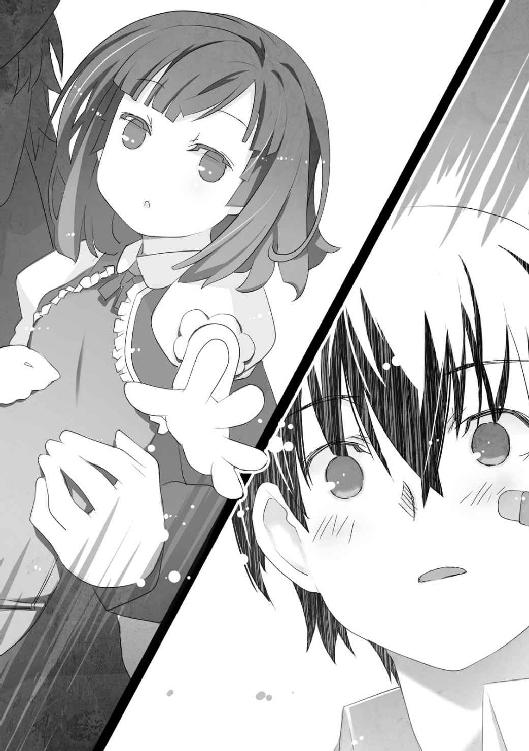
「......」
不吉な予言のこともある。
あの光景の中でミッコが語ったように、殺すとまでは言わない。
だが万が一の可能性を考えると、廃船に辿り着くのは一人でも少ないほうが良いだろう。
「──すまん......」
ルイが肩を震わせ、掠れた声で呟いた。
それが高級スーツの青年の脱落宣言だった。
「人の親なら、当然の選択だ」
毅然と言うカッシーを、ルイが振り向いた。
「カッシー......お前も残ってくれないか？」
二人の間に、奇妙な沈黙が落ちた。
カッシーがルイの申し出に応じてくれれば、大助としても手間が省けたのだが──。
「僕は何が起きたのか確かめなければならない」
「そうか......」
「でも、やるべきことをやった後に──」
カッシーが少しだけ、視線を下げた。
青年の腕の中で眠る女の子を見つめ──大助の気のせいかもしれないが──一瞬だけ、少年の口元が弛んだように見えた。
「気が向いたら、また顔を見に行ってやってもいい」
「......この子も、きっと喜ぶ」
ルイが心から嬉しそうに微笑した。
「ごきげんよう、ルイ......けほっ」
ミッコが歩き出した。
大助、カッシーがそれに続く。
意外なことに、きーくんも足を踏み出そうとした。大助はそれを制する。
「きーくん──」
「いやだ......俺も、ついていく」
「ルイのそばにいたほうが安全だ。それくらい、分かるだろ？」
「何度も、自分が死ぬ夢を見るんだ......もういやだ......」
大助は眉をひそめた。
きーくんの様子がおかしい。怯えた表情はいつものことだが、声が震えていた。
「分かったんだ......俺が助かるためには、〝そこ〟へ行くしかないんだ......」
「......？ 好きにしろ」
説得を諦め、前を向く大助。
──口で言って分からないなら、途中で消えてもらうだけだ。
廃船には、大助一人で向かう。そのために手段を選んでいる場合ではなさそうだ。
決意を胸に秘め、歩を進める者。
大切な人間を抱きしめ、立ち止まる者。
それぞれに思いを抱いた者たちが、銃声鳴り響く戦場で決別した。
これは現実なんだろうか──。
恐ろしくリアルな、パニック映画を観ているかのようだ。
赤牧市の街は、人々の悲鳴と〝不完全な虫〟の咆哮で埋め尽くされていた。血を流した人間が倒れ、破壊された自動車や建物の残骸が転がっている。火災が発生し、黒い煙が立ち上る中を人間と〝虫〟の追いかけっこが。
秩序が失われ、国として機能していない。
いや、それどころか、このまま世界が終わってしまうのではないかとすら思えた。
「映画の撮影──じゃないよな、やっぱ......」
あまりに非現実的な光景に、きーくんが掠れた声を漏らした。
「......」
大助は顔を歪めた。悔しさに歯嚙みする。
特別環境保全事務局の局員として、逃げ惑う人々を助けるのが彼の役目なのだろう。
だが今の大助は、〝虫〟の力を使うことができない。
その上、廃船に行かなければ、もっと被害が大きくなるかもしれないとなれば──。
自分が今、とるべき選択肢は限られていた。
「郊外まで行くなら、足が必要だ。使えそうな車を探そう」
「こほっ......あれはどうでしょうか」
冷静なのは、ミッコとカッシーだ。電柱に激突し、運転手が逃げ出したらしい車に近づき、顔を突き合わせて相談を始める。
これ以上、最悪の事態があるのか......？
大助は、ミッコの背中を睨みつける。
確かに霧の中で見た廃船では、カッシーときーくんらしき人物が死亡し、ミッコが破滅を唱えていた。あれはさらなる不吉を感じさせたし、最悪の出来事といえる。
いっそのこと俺が見た光景を、こいつらに明かすか──。
そんな考えが頭をよぎるが、すぐに自ら却下した。自分でもまだ疑っている内容を、彼らが素直に信じるとは思えない。
それなら──。
廃船の場所を問いただし、この場で三人を足止めする。
そうすれば予言を阻止できるし、カッシーときーくんが死ぬ確率も下がるはずだ。廃船を調べるのは大助一人でじゅうぶんである。
「エンジンがやられてる。この車はダメだ」
「けほっ......他には、燃えていたり、ひっくり返っていたり、穴が空いているようですね」
「は、早くしないと、あっちにいる〝虫〟がこっちに来そうだぞ......！」
引き返してきたカッシーとミッコに、慌てふためいてまとわりつく、きーくん。
きーくんは、問題ない。置き去りにする手段はいくらでもあるだろう。
ミッコを足止めする気は、まだない。廃船の場所を聞き出す必要があるからだ。
厄介なのは、カッシーだ。
彼は──大助と似ていた。
他人の動向を欠かさずチェックし、仕草にも無駄がない。一般人を装ってはいるが、何らかの訓練を受けていることは間違いなかった。ただ対虫憑きの戦闘員である大助とは異なり、彼は対人のプロフェッショナルなのだろう。〝虫〟の力が使えない大助が真正面から戦って勝てるという確証はない。
「手分けして探そう」
大助は提案した。
「ぅええっ？ そんなこと言って、〝虫〟に襲われたら、どーすんだよっ！」
「......そのほうが手っ取り早い。たまには役に立て、きーくん」
賛同を得た。四人が散らばって、乗用車探しを開始する。
危険に対応できるよう、互いが見える範囲で──という条件での探索だが、隙はいくらでも生じるものだ。きーくんとカッシーがめぼしい車をのぞきこみ、ミッコから注意を逸らす瞬間はすぐにやって来た。
大助は素早く死角を移動し、ミッコの背後から忍び寄る。
「......っ！」
マスクの上から少女の口を押さえ、抱え上げる。
物音は、周囲の悲鳴と破壊音が消してくれた。大助はミッコを抱えたまま狭い路地に入り、全速力でカッシーたちから離れる。
カッシーが手強いなら、相手にしなければいいだけだ。
これで少年二人を置き去りにし、ミッコと二人きりになるという目的を達成できる。
「──悪いな、手荒な真似して。大丈夫か？」
何度か角を曲がった先の路地裏で、大助はミッコを解放した。
マスクの少女が地面に座り込み、こほっ、こほっ、と苦しげに咳をする。
「誘拐犯が心配するなんて滑稽ですね。これまで何人の女性を毒牙にかけたのか知りませんが、やけに手慣れて──あうんっ。......大して痛くはないですが、さすがに何度も女性の頰を叩くのはどうかと思います......」
「......お前を見てると、むしょうに腹が立つんだ。悪いな」
それに関しては心から謝罪しつつ、大助は片膝をついた。同じ目線で少女の顔を見る。
あとは、廃船の在処を問い詰めるだけだ。
だが──大助の口から出たのは、全く異なる質問だった。
「お前が見た光景、っていうのは何なんだ？」
「......」
「まるで、こうなることが分かっていたみたいな口振りだったな」
けほっ、と咳をして、少女が大助の目を見つめ返した。
「ええ──私はこれから何が起きるか、知っています」
「......！」
「でも、もう意味がない......この状況は、とっくに私の知る出来事からかけ離れてしまっているからです」
ミッコが悲しげに目を細めた。
「どういうことだ」
「〝カステッロ〟、そしてこの赤牧市の惨状も......こんなにも大量の〝虫〟が生まれるはずがなかったんです。それらは私が見た光景と違う──」
ミッコが何を言っているのか、理解できない。
大助は少女の肩に摑みかかった。
「俺は──廃船で死ぬカッシーときーくん、それに言い争うお前とルイを見た」
「ええ、私もそれを見ました」
ミッコの切れ長の目が、じっと大助を見つめた。光を吸収する漆黒の双眸が、大助の心までも吸い取るかのように彼を硬直させる。
「私が見た光景。それは誰であろうと変えられません」
「お前──虫憑きだったのか」
少女の瞳に囚われないよう、大助は意識を強く保つ。
ミッコは実験体たちとともに育ち、彼らを家族と呼んだ。その過程で、ミッコが虫憑きになっていたとしたら──。
「未来が分かるのか......？ 赤牧市を孤立させた霧は、お前の能力──」
「こほっ......貴方は本当に頭が悪いですね。あまり私を落胆させないでください」
目を細めて微笑しながら、子供を諭すように言う少女。
その姿に、一瞬だけ──大助の知る誰かの面影が重なった気がした。
チリッ......と大助の頭が痺れた。もう少しで思い出せそうだった顔が霞んで消える。
「私は虫憑きじゃありません。少なくとも他人にまで、自分が見たものを見せる力なんてあるはずがないんです」
「それなら......！ 俺が見た光景は何だったんだ！」
「見せられたのです。彼の地で、これから起きる事を見届けさせるために。──貴方がそこへ辿り着くことが、それをした者の目的であり、〝ゴール地点〟なのです」
「それをした者......？」
「私たちは〝ゴール地点〟へ向かわなければならない。貴方はそれを阻止したいようですが、一番の邪魔者は──他の誰でもない、貴方なんです」
ぞくり、と大助の背筋を悪寒が走った。
背後に人の気配を感じた時には、すでに遅かった。
「昨夜は不意を衝かれたが──」
振り向く間もなく、大助の首筋に細い針が差し込まれていた。
「僕を見くびるな」
いつの間にか背後から近づいたカッシーが、大助の耳元で囁いた。注射器の針を通じて、冷たい何かが血管に注入されるのを感じる。
油断した──いや、違う。
ミッコの微笑が物語っていた。
最初に車を調べに行った時に、手を組んだのか......こいつら、俺を罠に──。
ミッコが愉しげとも言える口調で囁いた。
「〝ゴール地点〟にたどり着けなかった時──貴方は、どうなるんでしょうね？」
ドクン、と心臓が跳ね上がった。
思い出した。
マスクをつけた少女、ミッコ。
大助は彼女と会ったことがある──。
「お......前は──」
大助が伸ばした腕は、ミッコに届くことがなく──。
意識が、ぷつりと途絶えた。
「ありがとうございます。助かりました......けほっ」
気絶した大助を暗がりに転がすカッシーに、ミッコは礼を言った。
「礼はいらない。僕をのけ者にしようとした人間を排除しただけだ」
「殺したんですか？」
「一時的にショック状態を与えて気絶させただけだ」
「そうですか......けほっ。それでは、きーくんがいる場所に戻りましょう」
「あいつは必要ないだろう」
「いえ、彼を見捨てるのは、かわいそうですから......」
気の毒そうに目を細めるミッコを、カッシーはじっと凝視した。
カッシーが何らかの使命を帯びて、〝不死〟の研究を探っているのは分かっていた。それを遂行するにあたって、きーくんは邪魔にしかならないだろう。だがここで言い合いをしたり、ミッコを尋問している時間は惜しいはずだ。
「こうしている間にも、危機は膨らむ一方です。大丈夫、私と貴方、そしてきーくんの三人が揃えば、約束通り廃船に案内しますから......」
「分かった」
思った通り、素直に同意して走り出すカッシー。
「貴方は善い人ですね、カッシー」
ミッコは目を細めて微笑した。前を走る少年の背中に向かって言う。
「大助を〝虫〟に見つからない場所に移動させ、きーくんにも......冷たい素振りをしておきながら、とっくに気を許している。ルイが娘と残ると決めた時もホッとした様子でした」
「......」
「違う状況で出会っていれば、私たちはきっと良い友人になれたのでしょうね」
本心だった。
決して有り得ない、空想話だということも分かっている。
だが空想だからこそ、曝すことができる本当の気持ちというものがある。
「特に大助とカッシー......貴方たちは、きっと気が合ったでしょうに」
「彼は危険だ。まるで──自分と向き合っているみたいだった」
「一度でも気を許してしまった相手は、見捨てることができないところもですか？ きーくんを見捨てるつもりも、本当はなかったんでしょう？」
「......悪いが、お前とは仲良くなれそうもないな」
「大助も、似たようなことを言っていました......けほっ」
路地裏を抜けて大通りに出ると、涙で顔をぐしゃぐしゃにした少年が待ち構えていた。
「なんだよ、お前ら！ 置いてけぼりにされたと思ったじゃねーか！ ──あれ、大助は？」
「彼は急用を思い出したそうです。別行動をとらせて欲しいと言って去りました」
泣きわめくちょんまげ頭に、噓の説明をするミッコ。
素直なきーくんは、あっさり信じたようだ。心配と不安の入り交じった複雑な顔をする。
「そっか......でもあいつなら、一人で大丈夫そうだもんな。こっちにはカッシーがいるし」
「自分で身を守る気はないのか」
「あっ！ まだ無事な車を見つけたぜ！」
涙を拭い、きーくんがミッコとカッシーを通りの先へ案内した。
「キーはないけど」
小型のバンだ。路上駐車したまま、放置されている。
「こほっ......鍵がないのは当たり前ですね。中途半端な役の立ち方がきーくんらしい──あ、褒めてないのでニヤけないでもらえますか」
「ちょうど良い感じに旧い型だ。問題ない」
カッシーの行動は素早く、迷いがなかった。金属製の棒を窓に差し込んでロックを外したかと思うと、ハンドルの下に潜り込んで何やらゴソゴソといじり始める。
エンジンがかかるまで、一分とかからなかった。
「乗れ」
運転席に乗り込んだカッシーの指示に従い、助手席にミッコ、後部座席にきーくんが乗る。
バンが急発進した。横転した自動車や破壊された建物の瓦礫、倒れた人々を器用に避けながら、大通りを突き進む。
「なんでカッシーが鍵もないのにエンジンかけたり、普通に運転できるか......訊かないほうがいいのかな、やっぱ」
「人には誰しも秘密があります。彼が前科持ちの札付きだからといって、詮索するのは失礼というものです......けほっ」
「僕に前科はないし、札付きでもない」
赤牧市の中心街に近づくにつれ、〝不完全な虫〟の数が増えつつあった。
「うわあっ！」
きーくんが悲鳴を上げた。横から〝虫〟が飛び出し、前方に立ち塞がったのだ。
カッシーが巧みにギアを操作し、ハンドルを切った。寸前で〝虫〟の攻撃を回避し、無人の歩道を走って難を逃れる。
「......このまま国道を進むのは難しそうですね。迂回したほうが良さそうです」
「ひでえ......こんなのって、あるかよ......」
赤牧市の中心部では、逃げ惑う人々の数と、被害の規模も拡大していた。目に見える建物、道路、自動車が見る影もなく破壊され、傷ついた人々が悲鳴とともに逃げ惑っている。
バンが交差点を曲がり、別の道を探す。
「ミッコ......お前の親父さんって、一体何をしたんだよ......？」
きーくんが言った。ミッコは、けほっ、と咳き込む。
「母が亡くなるまでは......優しい人だったんです。尊敬される医師であり、心理学者でした」
ミッコが思い出す父の姿は、二種類あった。
穏和な頃の父と──研究に取り憑かれてやせ細り、別人に豹変した父の姿だ。
「この世に二つとない大切な存在を失い、それを取り戻そうとして......あるいは二度と失わないために理性と道徳を生け贄に捧げたんです。きっとルイも──いえ、火に集まる蛾のように、父の研究に吸い寄せられた人々は誰しもが同じだったのかもしれない......」
変わり果てた父によって、実の娘であるミッコの扱いも変わった。
彼女を他人のようにこき使い、実験体の世話をさせた。苦しみ、呪詛のように怨嗟の言葉を漏らす彼らの顔を、ミッコは鮮明に思い出すことができる。
思い出すと──熱が悪化していくのを感じた。
「私に言わせれば、彼らは研究者でもパトロンでもありません。希望にすがり、何かを願うことが生命力の増幅に繫がると信じ、実験体に何度も絶望を刷り込む彼らの姿は──地獄の鬼です。自らの苦痛を忘れるために、亡者が積んだ石を倒して苦しめて愉しむ鬼......」
「しかし、〝成果〟が出てしまった」
「ただの失敗です。単なる偶然で、まったく関係ないモノが生まれてしまっただけ」
実際にそう告げたミッコを、父親は激しく叱咤した。逆に彼女を狂っていると言い、カウンセリングに通わせたことさえある。
だから見限り、脱走したのだ。
しかし──こうなってしまった以上、見て見ぬフリはできない。
「こんな事態に陥ってしまったからには、根源から研究の可能性を絶とうと思います。ただの世話係とはいえ、私も荷担していた一人ですから......けほっ」
「どうするつもりだ」
「燃やします......廃船にある資料、サンプル、記録──私が出て行った後に何かがあったとしたら、それも含めて何もかもです」
「もし何かがあったとして......〝不死〟の研究が成功した可能性って、あるのか？」
そう訊いたのは、きーくんだった。バックミラー越しにミッコとカッシーが彼を見る。
「まさか......その可能性は低いと思います」
「......そっか」
「何かを願う心が〝不死〟に繫がるなんて、まるでピンとこない。もしそんなものがあるとしたら、それは何と呼べばいいんだ」
思うところがあるのか、カッシーが独白するように呟いた。
ミッコは目を細めた。
彼女は、その呼び名を知っている。
「それは......夢、といいます」
カッシーときーくんが、訝しげに眉をひそめた。
「夢？」
「貴方たちには、ないのですか？ こうありたいと思う心が......」
二人の少年が沈黙した。
しばらくして、きーくんが口を開く。
「俺は、それどころじゃないな......どうすれば死なずに済むか考えるだけで精一杯だ」
「僕もない──なかったはずなのに、今は......分からない」
カッシーは歯切れが悪い。
そんなことを語る少年二人の身に、これから辿り着く先で何が起きるか──。
ミッコは、その結末を知っている。
忘れていたはずなのに、大助と出会い、この旅を続ける中で思い出してしまった。
自分はある理由で、その光景を〝見て〟しまったのだ。
だが、それでも向かわなければならないのだ。
それは一種の──契約ともいえた。
ミッコは切れ長の目を細めて微笑んだ。
「カッシー、きーくん、そしてルイも......私は貴方たちが大好きですよ」
唐突に言われた少年二人の反応は、それぞれだった。
「なっ！ なんだよ、いきなり......いや、俺だって嫌いじゃないっていうか、その......」
「僕は別にどうとも思っていない」
市の中心部から離れ、人口の密度が減るにつれて〝虫〟の数も減っていった。
ガソリンが続く限り走り続け、ミッコたちが乗るバンは赤牧市の郊外に出た。人家がなくなると、〝虫〟の姿も見えなくなる。
そうして辿り着いたのは、赤茶けた土が剝き出しになった平地だった。
きーくんが窓の外を見渡し、呻いた。
「ここに......」
見渡すかぎりの平地に、積み上げた廃棄物の山が連なっていた。巨大なトラックやクレーンといった大型の重機が放置された地平線には、白波が立つ海が見える。
「研究所が......？」
〝虫〟に蹂躙される街が地獄なら、こちらは──。
地獄の果てだ。
静まり返った大地の上空を、どんよりと重い雲が覆っている。
「はい、この埋め立て地の......もっと奥に」
ミッコの指示で、三人が乗ったバンが埋め立て地を通り抜ける。
やがて姿を現したそれを見て、カッシーが呟いた。
「研究所というより、あれは──」
海に面した埋め立て地に放置されたそれは、どす黒く汚れ、海風によって錆びきっていた。
かつては威風堂々と、世界中の海を駆け回っていたのだろう。
かつてはその巨体で、見る者に畏怖と感動を与えたのだろう。
だが今、目の前にそびえ立つそれは、寂しさと空しさに満ちた鉄の塊でしかない。
「幽霊船だな」
廃棄された、巨大客船。
それがミッコたちが辿り着いた、〝ゴール地点〟だった。
──もし過去に戻れるなら、貴方たちを全員、出会った瞬間に殺すでしょう......。
死にゆくカッシーときーくんのそばで、ミッコはそう予言した。
あれは、これから起こりうる出来事。
それを見届けるために、大助はこの場にいるとミッコは言った。
──〝ゴール地点〟にたどり着けなかった時、貴方は、どうなるんでしょうね？
切れ長の目を細めて微笑む少女。
想像もつかない〝再会〟をしたため、彼の知る人物と結びつけることが出来なかったが──。
大助は、彼女を知っている。
ミッコの正体に、ようやく大助は辿り着いた。
「──目を覚ましてください」
ピリッ、と頭が痺れるように痛んだ。
ミッコの正体を思い出したとはいえ、にわかに信じることができなかった。
「貴方は〝ゴール地点〟へ向かわなければならない......」
また、頭の奥が痺れた。
困惑する大助を、聞き覚えのある声が揺り動かす。
「〝かっこう〟さん──」
火種一号〝かっこう〟。
その呼び名は、黙して眠ることを許さない称号。
どんな強敵や、どんなに恐ろしい光景からも、目をそらすことが許されない名前だった。
「──ッ！」
意識を取り戻し、大助は飛び起きた。
身構えて周囲を警戒するも、薄汚れた路地裏には誰もいなかった。彼を昏倒させたカッシーとミッコの姿は見あたらない。
「くそっ......俺はどれくらい眠ってたんだ？」
意識を失っている間、耳元で誰かの声がしたような気がしたのだが──気のせいだったようだ。佇んでいるのは大助一人である。
「ミッコ......あいつ、本当にあの女なのか？ だとしたら──」
狭い路地を駆ける。
夕日が落ち、街に夜の帳が降りていた。かなり時間をロスしたのは間違いない。
大通りへ飛び出すと、〝不完全な虫〟から逃げ惑う人々の悲鳴が飛び交っていた。
ミッコとカッシーはもちろん、きーくんの姿も見あたらない。とっくに自動車を見つけて、廃船へ向かったのだろう。
「俺は、とんでもない勘違いをしてたのか......！」
勘違いどころか、最初から致命的な状況に置かれていたといえる。
「ミッコ──あの女は、どうなんだ？ 自分が置かれた状況が分かってるのか？ だとしたら、あいつも死ぬかもしれないんだぞ......！ いや、でもあいつは、俺と違って──」
大助は頭を抱え、思考を巡らせる。
呼吸が速まり、心臓の鼓動が高まっていく。焦りのあまり、全身から冷や汗が噴き出した。
「落ち着け......今、分かることだけを整理しろ。俺はどんな状況に置かれてるんだ？」
自分に言い聞かせる。
「俺は今......敵の術中にハマってる。それも完全にだ。〝虫〟の力が使えないのも、そのせいだろう。だが敵が何者なのかは、分からないし......どんな能力かも分からない」
大助は元々、難しい推測や計算ができるタイプじゃない。それでも、これまでに与えられたヒントを必死にかき集める。
「こんな状況で、俺に何ができる......？」
あらためて確信すると、絶望感が大助を押し潰した。
異様な〝虫〟が街中を跋扈し、人々の断末魔が飛び交う光景──。
これは、ただの悪夢などではない。
「まんまとやられた......これを引き起こしたヤツは、俺に何をさせたいんだ......？」
彼の問いに対する答えを、ミッコは知っている様子だった。
──貴方がそこへ辿り着くことが、それをした者の目的であり、〝ゴール地点〟なのです。
果たして、それだけだろうか？
辿り着くだけではない。
もしかしたら。
馬鹿げた思いこみだとしても、一縷の望みを心から信じるとしたら──。
「俺に、ミッコの予言を防げというのか......？」
きーくんらが死に、ミッコが破滅を予言するのを阻止する。
それこそが、彼に与えられた使命だというのか？
しかし、たとえそうだとしても──大助は、廃船がある場所を知らない。
「俺が廃船にたどり着けなかったら、どうなる......？」
今、自分が呟いていることは、彼自身にしか分からないことばかりだろう。自分以外の誰が聞いたとしても、誰も理解できないに違いない。
だが、確信があった。
ミッコの予言は真実であり、彼はそれが現実となるのを阻まなければならない──。
「廃船は、どこにあるんだ......！」
顔を上げ、向かうべき場所を探る手段を考える。
特別環境保全事務局に連絡をとろうとしても無駄なことは、すでに思い知っている。
それなら、円卓会か？
いや、大助はルイの番号を知らないし、別のメンバとのコネクションもない。今からルイに繫がる連絡網を探っている時間もない。
ダメだ、今の俺には味方が一人もいない──。
絶大な権力を握る円卓会。
その秘部中の秘部である〝不死〟の研究を行っている場所を、今すぐに教えてくれるような都合の良い人間が存在するわけが──。
「──」
大助の息が止まった。
いる。
いや、正確には──いるかもしれない。
その人物に思い至った自分自身に、心底驚いた。
いつも都合の良いことを言い、そんな都合の良いことを平然と実行してのける馬鹿みたいな人間を、大助は一人だけ知っていた。
「頼む......！ 出てくれ！」
ルイに返すのを拒否された携帯電話を取り出し、番号をプッシュする。
すがる思いでコール音を聞くこと、十数秒──。
『──もしもし』
出た。
本当に、出た。
思わず携帯電話を握る手に力が入り、言葉が出ない。
『もしもし？』
通話の相手が怪訝そうに繰り返した。まだ若い声。大助と同年代だ。
「切らないでくれ！」
とっさに大声で言う。
相手に今の状況をどう伝え、どう理解してもらうべきか、説明の仕方が思いつかない。
「たぶんお前は、俺のことを知らない！ でも俺は知ってる！ お前の名前や他のことだって──ああ、いや、どうせお前のことだから〝そんなもの、少し調べれば分かることだ〟って言うだけだな。......切るなよ！」
『......』
「お前が今どこにいて、どんな生き方をしてるのかは知らない。たぶん桜架市で高校生をやってるはずだ。どうせ性格が悪いのにそれを隠して、表面的にはうまくやってるんだろ。そうに決まってる。お前は世界一、根性がねじ曲がってるからな！ 切るなよ！」
ただの悪口になってしまった。だが通話を切られたくない。
『......』
「でも、お前は知ってるはずだ！ 何も知らないって言ってたが、ウソに決まってる！ お前はウソをつくのが大好きなんだ！ 絶対、知ってる！ ただの高校生を装っても、どんな小さな異変にも気づいて、こっそり裏で調べるようなヤツだ。だからヤツらのしてることも、感づいていたはずだ！ そして、調べた！」
自分でも何を言っているのか理解できない。
だが間違いなく、通話相手は聞いているはずだ。
「円卓会と──〝不死〟の研究のことを！」
『......』
今の状況を正確に伝える方法を、大助は知らない。
事細かに説明すれば、かえって相手は疑いを抱くだろう。そういう相手なのだ。
「教えてくれ！ ヤツらの研究施設とかいう廃船は、どこにあるんだ？ 俺は今すぐにそこへ行かなきゃいけないんだ！」
『──も』
「〝もし知っていたとして、それを教えてどんなメリットが？〟 ってのはナシだ！ 教えないと──お前は一生、後悔するぞ」
『......』
ミッコが予言した破滅の影響が、通話の相手に影響しないわけがない。本人だけではなく、その家族までも災厄が見舞うはずだ。
「得意のウソも嫌味も皮肉も悪趣味な冗談も悪口もいらない！ 知ってるならさっさと──」
『赤牧市の北東、郊外にある埋め立て地』
たった一言。
落ち着き払い、迷いも疑いもない声が、大助の望む答えを告げた。
やはり彼は、知っていた。
答えを得た喜びよりも──懐かしさと悔しさが込み上げた。
「......」
『......』
「......」
『......』
「──何やってんだよ、お前......」
掠れた声が、口から漏れた。
「予言してやる──」
そう前置きし、携帯電話に向かって怒鳴りつける。
「お前は頭が良いフリをしておきながら、肝心なところで倒れる！ そして大事な......本当に大事な時になっても目を覚まさないんだ！ 何でも見透かしたようなことを言って、俺といっしょに全部終わらせようと言うくせに......一人だけさっさと眠り込んで、目を覚まさない！」
『......』
「お前は......ウソつきだ......」
俯き、声を絞り出す大助の言っている意味を、相手は理解できないだろう。
沈黙が続いた。
通話を切られる、と思いきや、相手が唐突に言った。
『予言しよう』
そう前置きし、相手はおかしそうな口調で冷静に言う。
『キミの予言は外れる』
「......」
『このボクが大事な時に目を覚まさない。もしそれが本当なら、想像しただけで愉快だね』
「......」
『なぜかボク自身よりボクのことを知っていそうなキミでさえ──ボクは騙しているわけだ』
大助は息を呑んだ。金縛りにあったように身体が硬直する。
「なっ......！ どういう意味──」
プツリ、と通話が切れた。
すぐにかけ直そうと携帯電話を操作しようとして、やめる。
廃船がある場所が分かったのだ。
自分が今すべきことは、一刻も早く乗り物を調達し、そこへ向かうこと──。
電話をかけ直したところで、そう言われるに決まっている。
そして、そう命令されるならば──彼はそれを実行するだけだ。
「......」
大助は顔を上げ、破壊と悲鳴が渦巻く街に向かって走り出した。
降り出した雨が、車の窓ガラスを激しく叩いた。
ガラスの表面を伝う水流を、ルイは無表情に眺めていた。膝の上でスヤスヤと寝息を立てる愛娘の頭を撫でる。
「これからどうなさいますか、旦那様」
運転席の老紳士が、バックミラー越しに尋ねた。
「......」
ルイの心を、喪失感が満たしていた。
車外から聞こえる銃声と、私兵の断末魔が、空っぽになった自分の中で虚しく反響する。
「──どうでもいい。これで何もかも終わりだ」
円卓会の仲間から〝不死〟の研究という話を持ちかけられた時、彼は簡単に信じなかった。
協力はしたものの、それに心酔する連中から一定の距離を置いていたつもりだった。
だが、それは誤魔化していただけだ。
〝もしかしたら〟──。
そう考えて、遠くから誰よりも熱い目線を向けていたのは、自分自身だったのかもしれない。
この空虚感こそが、その証拠だ。
街を〝虫〟が跋扈する現実。
それは彼の罪を再確認させると同時に、研究の失敗という終焉を意味していた。
「いや、とっくに終わっていたんだ。彼女を失った時、オレの世界は何の意味もなくなった」
世界でただ一人、心から愛した女性がいた。
ルイは己の全てを彼女に捧げ、彼女もその身の全てを彼に委ねた。
憎しみや裏切りが渦巻く世界で、彼女が永遠の意味を教えてくれた。彼女が無償の愛を与えてくれなければ、ルイは金と権力で他者を蹂躙する怪物になっていただろう。
二人は当然のように伴侶の誓いを果たし、子を得た。
そして──最愛の人は、唐突に彼のいる世界から旅立ってしまった。
「もう終わったことを認めたくなくて......夢に逃げていたんだ。〝不死〟などという馬鹿げた悪夢に」
ルイは愛娘の寝顔を見つめた。
彼が〝不死〟を望んだのは、この子のためだった。
二度と最愛の人を失いたくないから、一人娘を〝不死〟にしようとした。死という無慈悲な運命から解放することができれば、娘も喜ぶだろう──。
心からそう信じていた自分は、きっと正気を失っていたのだろう。
地獄と化した現実の中で、死ぬことも許されない。
そんな運命は──呪いでしかない。
「彼女を失った時、オレは呪われているのかと本気で考えたものだが......違ったんだな。呪いを振りまいているのは、オレ自身だったのか──」
耐えがたい悲しみと虚しさを忘れるために、自分の娘を利用しようとしていた。
そんな人間は〝虫〟よりも恐ろしい、ただの災厄でしかない。
〝不死〟の研究を本気で中断させるつもりなら、とっくにできていた。
だがそれをしなかった彼は、予言する。
「オレの呪いが、この国を──いや、世界を変える」
〝虫〟という怪物が、人を滅ぼす。
そんな絶望しかない未来の姿が、目に浮かぶようだ。
「この国を出よう。車を出せ」
だから、逃げる。
「せめて、この子が呪われないように......遠くへ逃げるぞ」
「......旦那様のお力を必要としている人間は大勢います。今、旦那様が国を見捨てれば、本当に収拾がつかなくなりますぞ」
「どうでもいい......」
心の底から出た、本音だった。
本当は最愛の人を失った時から、そう思っていたのだ。
人生の伴侶がこの世を去った時点で、彼女に捧げた彼の全ても消え果てたのだから。
「あいつがいない世界なんて、くだらないんだ──」
ルイがそう呟いた時。
むくり、と娘が起き上がった。
寝起きとは思えない大きな瞳が、父親であるルイの顔をじっと見つめた。
「......まだ眠っていていいぞ？ 次に目を覚ました時には、こんな化け物がいない世界に──」
ぱちんっ。
乾いた音と、ささやかな痛みが、ルイの言葉を遮った。
まだ幼い娘が、その小さな両手で挟むようにして彼の頰をはたいたのだ。
娘が怒ったような顔で、ルイを睨む。
「......」
びっくりして固まるルイ。
娘の膝が、カクリと折れた。彼の懐にもたれかかり、再び心地良さそうに寝息を立てる。
「もしかしてオレは、今──叱られてしまったのか？」
頰がじんじんと熱を帯びていた。
そのわずかな痛みが、鮮烈に過去の思い出を呼び起こした。
家柄や財力といった重荷から逃げようとした彼を、同じように叱ってくれた女性がいた。
独りではないから、と言っていっしょに生きようとしてくれた人がいた。
「はは、は......こんな小さな子供に叱られる親がいるか？」
どうして忘れていたのだろう？
悲しみという色を塗り重ねられただけで、本当に楽しかった頃の思い出を、はるか昔のことにして思い出せなくなっていた。
「とんだ、バカ親だ......ははっ」
生きている。
愛する女性は失ったが、彼女との繫がりが、今もまだ膝の上で眠っている。
肉体は失えど、永遠を誓った相手が遺してくれた愛の形が、まだあるならば──。
まだ、永遠は続いている。
ルイはまだ、何も失っていないのかもしれない──。
「──廃船へ」
彼の短い命令に、老紳士が従った。車を発進させる。
「オレはもう、〝不死〟を手に入れていた......」
愛する女性の命が絶えても、彼女が遺してくれた命が腕の中にある。
繫がりが切れることはない。
それが〝不死〟でなくて、何だというのだろう？
「あとは、呪いを絶つだけだ」
もう手遅れかもしれない。
だが一つでも多く、災厄の元を絶つために力を使おう。
これからも生きる、最愛の娘のために。
「この子が、悪い夢の中で目を覚まさないようにな......」
〝虫〟がいない、平和な世界を生きるために。
一癖も二癖もある、新たな息子を迎えるために。
ルイは、始まりにして終焉の地へと向かった。
廃船に足を踏み入れたミッコたちを、激しい火花が出迎えた。
「うわっ！」
大袈裟に驚いて、きーくんが飛び退く。
カッシーが周囲を警戒しながら、低い声で言った。
「何かが起きたらしい、とルイが言っていたのは正しかったみたいだな」
船内に繫がる通路が、無残に破壊されていた。
錆びついた壁に穴が空き、天井の蛍光灯が割れて点滅している。焼き切れた電線がショートして、青白い火花を散らせていた。
「爆発物や銃弾による破壊痕じゃないな。バーナーで焼かれたようにも見えるが......」
壁に空いた穴の縁を指でなぞりながら、カッシー。
ミッコは少年二人を先導し、通路の奥に向かって進んだ。
「〝成果〟が解放されてしまったのか、それとも実験体が船内で新たな〝虫〟を生んでしまったのか......いずれにしろ、注意しましょう」
船内は静まり返り、人の気配がしなかった。本来は監視カメラによる厳重な警戒態勢が敷かれているはずなのに、ミッコたちが侵入しても誰も姿を現さないのもおかしい。
点滅する照明と火花が、通路を歩く三人の顔を照らす。
「こ、こーゆーの映画で観たぞ......幽霊船に迷い込むやつ」
「攻撃が通じる分、幽霊よりは〝虫〟のほうが相手にしやすい。ラッキーだ」
「けほっ......あの扉の向こうが、本来の研究施設にあたる部分です」
ミッコは前方を指さした。
「正確には、扉だったもの、だな」
カッシーが指摘する。錆と埃で汚れた通路の先を、分厚い金属の板が塞いでいた。取っ手の部分がえぐり取られ、ぐにゃりと歪んだ扉の残骸だ。
「な、何をされたら、こんな形に壊れるんだよ......カッシー、手伝ってくれ」
本来は門番によるチェックが必要な扉も、こうなっては意味がない。少年が二人がかりで重い金属の板を押しのけ、内部へ足を踏み入れる。
「うっ......な、なんだよ、コレ......！」
きーくんが青ざめた。
廃船をカムフラージュしたここまでの通路と異なり、そこは調度品や観葉植物が並べられた清潔な通路──だったはずだ。少なくとも、ミッコが脱走した日までは。
だが現在は天井や床の区別なく、縦横無尽に巨大な爪痕のような穴が穿たれていた。さらに燃えるカーペットの上に、白衣姿の人物や迷彩服を着た武装集団が倒れている。
床に臥した人数は、見える範囲で十人を下らない。
「全員、息がないようだ。〝カステッロ〟で見た生ける屍とは違う......」
「うぉえっ......」
カッシーが眉をひそめ、きーくんが真っ青になって壁にもたれかかる。
むせかえる肉の焦げる臭いに、けほっ、とミッコは咳き込んだ。
「この階は研究員の住居施設がほとんどです......この様子だと、この階は完全に機能を失ってしまっているようですね」
「実際に研究を行っていたのは？」
「ここから何階も下の部分です。元は船倉だった場所を改造したそうですが......」
ミッコは通路の先を見た。床から天井にかけて、ぽっかりと大穴が空いている。
「あそこにあったエレベータは使えませんね。少し歩きますが、非常階段を使いましょう」
「お前ら......こんな状況で、よく平気だな......」
きーくんが唸るように言った。疲労と吐き気のせいか、目の下に隈が浮かんでいた。
「私は実験体と〝成果〟がどうなったのか、確かめないといけません。──これ以上進むのが辛いなら、きーくんは船の外へ」
「いや、行く。行ってやるさ」
そう言うと思っていた。
いや──きーくんはそう答えると、知っていたのだ。
ミッコが見た、〝あの光景〟。
その中にきーくんがいた以上、彼が途中で脱落するというのは有り得ない。
「そうですか......分かりました。それでは行きましょう」
けほっ、と咳をして、ミッコは通路を進んだ。
静寂に包まれた船内に、累々と転がる死体の数々。
刺すような緊張感が漂う通路を進み、角を曲がり、非常階段に辿り着く。
「けほっ......ここから下の研究室に行けるはずです」
「あれっ？ ち、ちょっと待った！」
きーくんが周囲を見回し、ドタバタと通路を行ったり来たりした。
「カッシーがいないぞ！」
「......」
ミッコは静かに目を細める。
これも、彼女には分かっていたことだ。
あの少年はここでいったん姿を消すが、後でまた再会することになる──。
「カッシー！ ウソだろ、おい！ どこにいるんだよ！」
「──行きましょう、きーくん。彼なら一人でも大丈夫でしょう」
「そりゃアイツはそうだろうけど、俺らは......ま、待てって！」
さっさと階段を下りるミッコのあとを、きーくんが慌ててついてくる。
「ルイ、大助の次はカッシーかよ......どんどん人が減っていくのが怖えよ」
少年の呟きを黙殺し、カンカンと音を立てて階段を下りていく。
最下層に着いたミッコときーくんの前に、一枚の扉が現れた。
扉を開け、二人は内部へ入る。
「な──んだ、こりゃ......」
きーくんが絶句した。
めちゃくちゃに破壊され尽くしているのは、上階部分と変わらない。
大勢の人々が倒れているのも同様だ。
ただ一点、これまでと異なるのは──。
人間以外の生き物が、視界を埋め尽くしていた。
「──まるで、桃源郷ですね」
何百、何千という数の蝶々が、鱗粉をまきながら通路を舞っていた。
翅の生えた甲虫から、地面や壁を這う節足動物など、一般的に虫と呼ばれる類の生き物が船内を支配していた。
昆虫だけではない。
猿や馬など、ほ乳類の姿も通路の奥に見えた。
生き物の種の枠に収まることなく、ありとあらゆる生き物がひしめく空間。
それはまさに天敵のいない桃源郷のように見えた。
「どう......なって......うわっ！ パンダまでいるじゃん！ 動物園かよ、ここ！」
「研究のために集められたのは人間だけじゃありません。彼らを閉じ込めていた檻が破壊され、解放されてしまったようですね......けほっ」
ミッコは床を這う昆虫を踏みつぶしながら、通路を進んだ。
ありとあらゆる生き物が生を謳歌する中で、人間だけが息絶えている。
しかし人の目には、そんな世界が理想の光景に見えるのは──。
皮肉としか言いようがない。
「──そろそろですか」
昆虫が飛び交い、動物が練り歩く通路で、ミッコは振り返った。
「きーくんが、いなくなるのは」
あのやかましい少年が、いつの間にか姿を消していた。助けを求める声も聞こえない。
カッシーに続き、きーくんが姿を消した。
残されたのは、ミッコ一人だけ。
そのことに驚きはしない。
こうなることを、ミッコは知っていた。
「......分かっていても、悲しいものですね」
大丈夫、彼らとはまた会える。
たとえそれが破滅の序章だとしても、彼女はその瞬間に立ち会わなければならない。
これから起きる出来事は──決して変えられない運命なのだから。
「......」
ミッコは前を向き、通路を進んだ。
いくつかの角を曲がり、ある扉の前で立ち止まる。
すでに内側から開かれた扉をくぐり、その部屋へ足を踏み入れる──。
「また会いましたね」
薄暗い室内で、壁にもたれて倒れた人物の瞳が、ミッコを見つめていた。
「お父さん」
白衣を纏い、髭を生やした四十代後半の男だ。だらりと下げた腕には力がなく、白衣の腹の部分が血で真っ赤に染まっていた。
「貴方は、なんということを......」
マスクを下ろし、唇を嚙みしめる。事切れた父の顎を両手で支え、その顔を見つめる。
ガシャンッ！ と金属を叩く音が室内に響いた。
室内は広く、壁沿いに置かれた機器の数々や、中央に置かれた手術台などがあった。
だが、それだけではない。
奥の暗がりにぼんやりと見えるのは──大きな鉄格子だ。
鉄格子の向こう側に、ギラギラと輝く眼が見えた。言葉にならない雄叫びを上げ、何者かが鉄格子に体当たりし、また叫ぶ。
「貴方の研究は失敗だったんです......」
ミッコは鉄格子を振り返らない。
物言わぬ骸となり果てた父の姿が、ひどく哀れだった。
彼は最愛の人を失い、〝不死〟という夢を思い描き、それが全てとなった。
「貴方の見つめる先には、最初から〝不死〟などはなかった......だって、あれは──」
ミッコは涙をこぼし、微笑した。
悲しみに打ちのめされ、正気を失い、非人道的な研究に没頭したとはいえ──。
ミッコにとっては、たった一人の肉親だった。
「〝不死〟の研究は、ずっと前から私のものだったのですから」
鉄格子の奥から、声にならない悲鳴が響いた。
ミッコはそちらを一瞥する。
鉄格子に体当たりを繰り返していた人影が、怯えて暗がりの奥で身を丸くする。
いつからだろう──。
実験体たちが、ミッコの微笑を見て、怯えるようになったのは。
せめてマスクで口を隠さないと、彼らはミッコが近づくことさえ恐怖するようになった。「たかが十歳にも満たない子供が、研究の資料を見ただけで理解できるはずがない──そう思っていたんでしょうね......」
ミッコは父に向き直り、優しく語りかける。
母親を亡くして以来、父が乱雑に投げ出した研究資料が、ミッコの玩具代わりだった。
父は研究にのめり込み、ミッコには見向きもしなかった。だから彼女がさっさと父の知能を超え、玩具代わりの資料では飽き足らないようになったことに気づきもしなかった。
「円卓会に研究の存在を知らせ、彼らを呼び寄せたのが私だということも......彼らのメンバである競売屋に実験体の選別をさせていたのも......」
ミッコは、円卓会が連れてきた実験体の世話係を命じられた。
彼女は偽りのない愛情をもって、彼らの面倒を見た。ミッコのことを顧みない父親よりも、彼らのほうが家族と思えるほどに近しい存在となった。
「貴方は実験体を瀕死にし、その目の前に彼らの欲望や願いを呼び起こさせる餌を掲げることで、彼らの生命力を高めると考えていたようですが──実はそうではなかったことも」
実験体たちは呪いの言葉や、己の飽くなき願望を、ミッコに語った。
彼女は真剣にその話を聞き、彼らを励ました。
何度も死にかける彼らを揺り起こし──何度でも、希望を語った。
大丈夫、いつか助かる、と。
いつか望むモノを手に入れられる、と。
何度も、何度も、囁きかけた。
たとえ彼ら自身が、それを望まぬようになっても──。
「彼らが何度も死を乗り越えたのは、私が与えた愛のおかげだったということも」
とっくに生気を失ったはずの父の瞳に、恐怖の色が浮かんだように見えた。
そう、父は畏れたのだ。
他ならぬ、一人娘であるミッコを。
「ずっと気づかなければ、研究に狂い続けていられたはずなのに──貴方は気づいてしまった。長い間、私があげた幸福な夢の中で生きていたということを......」
全ては、〝不死〟という夢が永遠に続くために。
父は研究を続け、円卓会という協力者を得て、誰もが楽しく踊っていられるはずだった。
それなのに、〝虫〟という見当違いの成果が生まれてしまった。
それなのに、父は娘の存在を振り返ってしまった。
「気づいた貴方が私を畏れて殺そうとしたせいで、私は逃げざるを得なかった......私がいなければ、人の枠を超えつつあった実験体たちを抑えられるはずがなかったのに」
思えば、父がこのような最期を遂げたのは、当然の結末だったのかもしれない。
ミッコはせめて全て終わりにしてあげようと思い、見込みのある実験体を連れて逃げたのだ。
だが父は諦めきれなかったのだろう。円卓会の刺客が差し向けられた。
ミッコの研究だったのに、ミッコなしで実験体を連れ戻して研究を続けようとした。
そして──起きるべき破綻が起きた。
「でも安心してください、お父さん。たとえどんなに弱く、頭が悪く、見当違いの夢を望むような救いのない貴方でも──」
ミッコは目を細め、口の端を持ち上げた。
「私が、貴方を愛してあげます」
優しく、微笑する。
父の遺体が、ぶるっ、と震えた。死後痙攣か、それとも漏電したケーブルに触れたのか。
死にゆく者すら怯えさせる微笑が、背後を振り向いた。
「貴方も......私の帰宅を喜んでくれるのですね」
鉄格子の奥で、足枷をつけた人影が絶叫した。
恐怖と怒りと憎しみ──あらゆる感情を秘めた眼差しが、ミッコを凝視する。
その人影は、不似合いなマントを羽織っていた。
「たった数時間前に捕獲されたはずの貴方が、ここにいる......この矛盾は、運命があるべき姿を取り戻しつつあることを示しているのでしょう？」
ミッコは立ち上がった。マスクを口に戻す。
「数多くいる実験体の中でも、特に見込みがあるのは三人......〝成果〟に至っては、一人だけ......私はこの研究は失敗だと思っていたんです」
三人の実験体と、一人の〝成果〟。
それにこうなっては、もう研究続行は不可能だ。
そう、思っていた。
「でも──」
ミッコの呟きを、突然の轟音がかき消した。
はげしい震動が廃船を揺らす。
船内のどこかで何かが爆発したような衝撃にも、ミッコの足は揺らがなかった。
「始まったようですね」
父親と、鉄格子の奥にいるマントの男。
両者に視線で別れを告げる。
「ごきげんよう、二人とも。──〝あの時〟はここで火をつけようとしたから、その瞬間を見ることができませんでしたが......今回は外側からそれを見るのも一興でしょう」
ミッコ自身にしか分からない呟きを残し、薄暗い部屋を出る。
先ほどの震動のせいで、通路にいた動物たちがパニックを起こしていた。
ミッコは微笑みを崩さず、悠然と通路を進み、非常階段を上り──廃船から退場した。
船外は、猛雨が降り注いでいた。
空を埋め尽くす黒雲に、光の筋が駆け巡るのが見えた。
そして光の筋が集まり──。
太い一本の柱となり、轟音とともに地上の廃船を貫いた。
「雷、ですか......？ いえ、これは──」
目を細め、ミッコは呟いた。
巨大な鉄槌のように地上に振り下ろされた光る柱が、廃船を包み込み、上階部分を一瞬にして粉々に打ち砕いた。
「運命、と呼ぶものでしょうか」
廃船の上階が砕け、溶けて、バラバラに飛び散った後、しばらくすると──。
天から地上に降り注いだ雷の、巻き戻し映像のように。
船の下層部分から空に向かって、光と衝撃の渦が突き上げた。
ミッコときーくんが非常階段を目指すのを確認し、カシュアは行動をとった。
二人に気づかれないよう、足音を殺して通路を逆走する。
「ミッコはここに火をつけると言っていた。その前に少しでも資料を確保しなくては......」
エレベータがあった大穴に戻り、中を覗き込む。
奈落の底に繫がる穴の中で、電流ケーブルが火花を散らしていた。機体そのものはどこにも見あたらないし、操作パネルも沈黙した状態で機能していない。
「先回りするには、ここを行くしかないな」
ここで何が為されていたのか、何が起きたのか、その証拠を集める──。
カシュアは自らの使命を果たすべく、穴に飛び込んだ。折れた作業用のハシゴに飛び移り、ワイヤを摑んで、下の鉄骨に着地する。時折、弾ける火花が明かり代わりだ。
ピンボールのように軽やかに穴を下りていくと、やがて底が見えた。
光を漏らす扉があった。
着地し、カシュアは扉を強引にこじ開ける。
「......まるで天国だな」
破壊された通路を、昆虫や動物が占領していた。
白衣姿の人間が何人も床に倒れていたが、あらゆる生き物が活き活きと歩き回る光景は、浮き世離れした優雅さを感じさせる。
「実験に使われたのは、人間だけではないということか」
カシュアは動物たちを押しのけ、歩を進めた。
ミッコたちがやって来るまで、時間がない。急いで研究の根幹となるデータを見つけ出し、ここから退散しなければならない。
「〝不死〟か......円卓会の秘密が、こんなものだったとは思わなかった」
ぽつり、と呟く。
円卓会が操る財力と人脈による影響は、この国にかぎったものではない。だからこそ不穏な動きを察知した母国が、カシュアを送り込んだのである。
「とにかくこの事実を持ち帰れば、僕の仕事は終わる......」
仕事を終わらせて──どうする？
そんな疑問が、頭をもたげた。
以前のカシュアなら決して抱かなかった疑問だ。任務の遂行こそが自分の存在意義であり、それを成功させることが生まれたことの正当性を示す唯一の証明だった。
だが、ある男のたった一言がカシュアを変えてしまった。
──オレの息子にならないか？
たった三、四歳しか違わない父を持ち、十歳以上も離れた妹を持たないかと言う。
家族を持ったことがないカシュアでさえ、異常だと分かる。単なる金持ちの気まぐれに頼るなど、有り得ないことだ。
「......」
有り得ないのに──考えただけで、ほんの少しだけ、心が温かくなるのを感じた。
生まれて初めての感覚だ。思ったより悪くない。
だから、それでもう充分だ。
あんな馴れ馴れしい男の気まぐれにつきあう気はないし──カシュアを家族にしたいと言った男と、その娘を巻き込むつもりもない。
「さっさと任務を終わらせて、自分の国へ──」
帰ろう。
そう呟こうとしたが、言葉が出なかった。
帰る？
誰もカシュアの顔を知らず、家族や知人もなく、彼の存在すら隠された国へ？
それは果たして、帰ると言えるのだろうか？
──お前も残ってくれないか？
また、ルイの言葉が蘇った。
もし、あの青年の言葉を受け入れれば。
本当の意味で、カシュアは帰るべき場所を手に入れることができるのかもしれない──。
「......！」
違和感をおぼえ、カシュアは立ち止まった。耳をひそめる。
動物のいななきや、昆虫のがさつく音。
そんな雑音で埋め尽くされた通路で、カシュアは異質な空間の存在に気づいた。
「音が......しない」
カシュアは角を曲がり、再び歩き出した。
一本だけ、静まり返った通路があった。何かを避けるかのように、昆虫や動物がいない。
無音の通路を進み、突き当たりにある扉を開く。
そこは頑丈な鉄格子がある部屋だった。
点滅する蛍光灯が、部屋中に置かれた精密機器や手術台を照らしていた。その奥にあるのは、太い金属の棒で仕切られた牢屋のように見える。
「──お前は、誰だ」
牢屋の中に、何かがいた。
蛍光灯の明かりが届かず、顔は見えない。だが中にいる人物の胸は、かすかに上下していた。廃船に入って初めて遭遇した生存者だ。
牢屋の人物は、無言だった。
生きていて、牢屋に封じられているなら、対応を急ぐ必要はない。カシュアは室内にある紙の資料を探り、電子機器を操作して情報を引き出す。
一通りの資料と電子データが揃うまで、そう時間はかからなかった。
牢屋の主は、有望な実験体だったようだ。〝不死〟を実現させるという名目の下、目の前にいる人物に行われた研究内容の一部始終が残されていた。
「──タイ......」
背中から、か細い声がした。
振り向くと、牢屋の主がパクパクと口を動かしていた。
「なんだって？」
「カエリ......タイ──」
日本語ではない。カシュアの母国の公用語だった。
帰りたい。
感情のない無表情で、男か女の区別もつかないほどに憔悴した声で、そう言ったのだ。
「──帰るべき場所があるのは、羨ましい」
カシュアの口が、自分でも思いもしなかった言葉を呟いた。
「カエリタイ......」
牢屋の主が、涙をこぼした。
絞り尽くした生命の最期の一滴とばかりに、細い涙が人物の頰を伝う。
それを見て。
カシュアの中に、今まで感じたことのない衝動が込み上げた。
「僕は死ぬ間際に、帰りたいと思える場所なんてなかった」
対抗心、だったのかもしれない。
こんなに枯れ果てた人物にさえ、望郷の念を抱く居場所があるのだ。
その事実が、カシュアにはたまらなく悔しかった。
「今までは、な。だけど、もう違う」
資料を手術台の上に投げ出し、ポケットからライターを取り出す。
これらの資料を持ち帰り、実験体の一人でも連れ帰れば、母国は彼を讃えるだろう。
だが、それだけだ。
母国はおそらく、その資料を元にして、〝不死〟の研究を続ける。
それが未来に禍根を残すことは、分かりきっていた。
「僕だって、死ぬ時は帰るべき場所を想って死にたい」
ルイ、お前が家族ごっこを望むなら──。
心中でこの場にいない青年に向かって、語りかける。
他人に与えられた使命は、もはや自分にとって重要ではなくなった。
僕も、少しだけ付き合ってやる──。
なぜなら、カシュアは見てしまった。
まだ幼い、ルイの娘を。
もしかしたら彼の妹になっていたかもしれない女の子を。
彼女の未来を守るために。
カシュアは使命よりも家族ごっこをとる──。
「これらを持ち帰れば──僕はもう、家族を望んではいけない気がする」
カシュアが点けたライターの火が、かき集めた資料を燃やした。
逃亡どころか、自らの任務を阻むような行動をとった彼を、母国は許さないだろう。
禁忌を犯した以上、ルイに頼って巻き込むつもりもない。
だが、それでいい。
家族を得られなくてもいい。
カシュアはそれよりも、家族を想う資格を選ぶ。
「僕といっしょに死ね」
すっきりとした気分で、牢屋の主を振り返る。
親の顔も知らず、家族も知らない彼のような人間にも、反抗期はあるらしい。資料を燃やした以上、生き証人である実験体が母国の手に渡ることも阻止しなければならない。
カシュアが牢屋に近づこうとした時だった。
ズズン、と重い衝撃が廃船を揺らした。
「......！ 爆発？ いや、これは──」
手術台に捕まってバランスを保つ。
その後も何度か、激しい揺れが足元を揺らした。
その直後──。
光が視界を包んだ。
「──ッッ！」
まるで頭から金槌で打たれたような、桁外れの衝撃が廃船を貫いた。室内にある精密機器が火花を散らし、内側から爆発を起こす。
「ぐああっ！」
視界が金色に染まった。
これは──電撃だろうか？
視界にあるもの全てが砕け、焼け、爆発した。
そして──。
「──ッッッッッッッッッッッッッ！」
この世のものとは思えない絶叫が、カシュアの鼓膜を貫いた。
朦朧とする意識の中で顔を上げると、牢屋の主が何かを叫んでいた。
鉄格子に摑みかかり、カシュアに助けを求めるように腕を伸ばす、その人物は──。
顔が、なかった。
涙を流す双眸だけがあった。
しかしその顎や、鼻、頭までもが、碧い輝きに包まれ──泡のように虚空に消えつつある。
「──」
カシュアは絶句し、異様な姿に変貌した牢屋主を凝視する。差し出した腕も、碧い輝きに包まれ、輪郭を失いつつあった。
表情はなくとも、その双眸だけで分かった。
こんな異常な状況にあっても、なお──。
彼は郷愁に狂っている。
故郷に帰りたいと、心から願っている。
「そうか──お前の居場所は、ここじゃないんだな」
碧く輝く双眸に見つめられ、カシュアの口が勝手に動いた。
「僕にも、あるぞ。帰りたい場所が──」
故郷ではない。
だが、堂々と言える。
任務のために訪れたこの地で、彼は心から欲しいと願えるものを手に入れた。
「僕は、家族を手に入れる──」
そう予言するカシュアの頭の中に、閃光のように鮮明な光景が浮かんだ。
ルイと、その幼い娘。
カシュアは妹を得て、その成長を見守るのだ。
妹はすくすくと育ち、髪が伸びて、元気に笑い──。
全身に銀色の模様を浮かべ、輝く槍を手にして──。
「......ッッ！」
ほんの一瞬の幻覚だった。
妹の未来の姿を目の当たりにしたカシュアの全身が、白い輝きに包まれた。
その輝きが彼から抜け出すように、牢屋の主に向かって吸い込まれていく。
「ぐあああぁああああああっっ！」
心の中から、何かが抜け出し。
牢屋の主に、喰われた。
もうすでにない口に、カシュアから奪った白い輝きを吸い込んだ牢屋の主が、はじめて──。
一瞬の安らぎに、その瞳を細めて。
碧い輝きを残し、完全に消滅した。
「まるで、桃源郷ですね──」
ミッコがそう表現した船内を、恐る恐る進んでいた時だった。
「......？」
きーくんは、ふと誰かに肩を摑まれた気がした。
しかし振り返っても、誰もいない。
「ほ、本当に幽霊がいるんじゃないだろうな......」
身震いし、前方を歩くミッコに追いつこうとして──。
誰かが、彼の名を呼んだ。
「──」
声が聞こえたわけではない。
だが、彼を呼んでいる。
心のどこかで、そう確信していた。
「──」
きーくんは無言で、ミッコに背を向けて歩き出した。
恐怖心が消えてなくなっていた。目印があるわけでもないのに、引き寄せられるようにして、動物たちがひしめく通路を進む。
そうして辿り着いたのは、通路の突き当たりにある大穴だった。
高熱のバーナーで抉られたように見えるが、切り抜いた破片──おそらくは扉だったものの残骸は見あたらない。
穴をくぐると、そこは蝶々に占領された薄暗い部屋だった。
広い室内の中央には、薄汚れた手術台が置かれていた。壁際には見たこともない機器が並んでいたが、一部分が消滅し、壁に空いた穴から蝶々が逃げ出している。
さらに室内には、ボロボロに破れたドレスやコートが飾られ、腐った料理がテーブルに並べられていた。本来はそれらが高級品であったことが一目で分かる。
そして部屋の奥にあるのは──鉄格子で仕切られた牢屋だった。
「──」
きーくんは牢屋に近づき、中でうずくまっている黒い人影を見下ろした。
かろうじて、女性であることが分かった。だが長い髪は乾ききっていて、身体は骨と皮だけになっている。一目見ただけでは死体と見間違えてしまうかもしれない。
牢屋の中にいた女が、きーくんを振り向いた。
女のぎらついた瞳に射貫かれ、我に返る。
「──お、お前......！ あの時の......！」
間違いない。
きーくんの友人二人を昏倒させた、〝黒い女〟だ。
そのことに気づくと同時に、ハッとする。
「こ、ここ、どこだよ？ ──ミッコ！ カッシー！」
いつの間に、自分はこんな場所にやってきたのだろう？
しかもカッシーに続いて、ミッコの姿まで消えている。
〝黒い女〟が絶叫した。
「ひいっ！」
驚いて飛び退く彼をよそに、〝黒い女〟が鉄格子の向こうから腕を伸ばした。
腐った料理を摑もうとしたらしい。しかし伸ばした腕は届かず、何度も空を切る。
「おい、お前......あいつらに何したんだよ！ 俺に一体、何をしたんだっ！」
精一杯の虚勢を張り、怒鳴る。
だが〝黒い女〟は彼の声など、聞く耳を持たなかった。料理に手が届かないと分かると、宙に向かって腕を伸ばし、一匹の蝶々を捕まえることに成功する。
「えっ、お、おい、まさか──」
きーくんの嫌な予感は的中した。
女がくるりと彼に背を向け、うずくまった。そして手の中にいる蝶々を口に運び──。
「うっ......！」
喰っている。
背中を向けて見えないが、何をしているのかを想像して吐き気が込み上げた。
一体、どれだけの間、飢えていたのか──。
正常な思考を失うほどに飢餓に狂った女の姿は、自分と同じ人間とは思えなかった。
「俺は......夢を見てるのか」
〝黒い女〟に何を訊いても無駄だと分かった。
こいつはすでに狂っていて、きーくんの質問に答えることなどできるはずがない。
彼の身に起きていることを、説明できるはずがない。
「こんなのは悪い夢に決まってる......この腕も──」
きーくんの左腕が、ボロボロと崩れ落ちた。
街を逃げている時に見た幻のように。
高級ホテルで見た悪夢のように。
血が流れるでもなく、ただ土塊のように肘から先がなくなっていた。
きーくんは血走った目で、薄暗い部屋を振り返った。
「──〝不死〟だ」
残った腕で、荒れ果てた室内を探索する。
「〝不死〟......〝不死〟......このどこかにあるんだろ？ ミッコがそう言ってたもんな」
このままでは、身体がなくなって死んでしまう。
この悪い夢から覚めるためには、絶対に死なないという保証が必要だった。
「〝不死〟！ 〝不死〟はどこだ！」
自分のような弱虫が、この恐ろしい旅に同行した目的。
それが〝不死〟だった。
自分の身に何かが起きている以上、それを手に入れられなければ死ぬ──。
その恐怖が、きーくんをこの廃船へと導いたのだ。
「どこだ！ どうすれば俺は助かるんだっ......！」
泣きわめき、なりふり構わず手がかりを探す。
だが、あるのはワケの分からない数字や記号が書かれた紙切れだけだ。彼が助かる方法を書いたものは、一つも見つからなかった。
ガクリ、と片脚から力が抜けた。
視線を下ろすと、自分の右脚がボロボロと崩れ落ちていくのが見えた。
「──助けてくれ」
ぽつり、と呟く。
〝不死〟など、どこにもない。ここにいても無駄だ。
「助けてくれぇっ！ ミッコぉ！ カッシー！ ......ルイ！」
みっともなく叫び、這うようにして部屋の出入り口に向かう。
「うあああ！ いやだっ！ 死にたくない──」
片腕と片脚がないせいで、うまく進むことができない。
それでも必死に部屋と通路を繫ぐ穴に向かう彼の前に、何者かが立ち塞がった。
「......ひぃっ！」
のけ反り、部屋の中央に転がるきーくん。
穴の向こうから現れたのは、白い衣服に身を包んだ人物だった。
ミッコやカッシーではないことは、一目で分かった。ところどころ破れた入院服のようなものに身を包み、ぼさぼさの髪を投げ出すようにうなだれている。
幽霊。
きーくんの目には、そう映った。まさにこの幽霊船に相応しい存在だ。
そして次の瞬間、その感想は──確信に変わった。
「──」
あまりの恐怖に、悲鳴すら上がらなかった。
うなだれる人物の頭の横に、不気味なモノが浮遊したのだ。
〝眼〟だ。
岩のように堅そうな外殻は丸く、まぶたがあり、人間の目玉のようなものを包み込んでいる。バスケットボール大のそれが重力を無視して宙に浮かんでいるのである。
一瞬、〝虫〟かと思った。
躰の一部分しかない、不完全な形をした化け物ども。
だが眼前に浮かぶ〝眼〟が、入院服の人物を攻撃することはなかった。それどころか、その白い男の代わりとでもいうように、ギロリときーくんを睨みつける。
「あ......あ──」
きーくんの涙に濡れた顔が、青白い輝きに包まれた。
直後に押し寄せた熱風と轟音は、天変地異のようだった。
きーくんのすぐ横の壁に、巨大な円形の穴が穿たれた。そこから熱を帯びた突風が吹き抜け、電子機器や蝶々を巻き込んで突き抜ける。
「......ッッ！」
轟音と震動で、廃船全体が揺れた。
きーくんは、微動だに出来なかった。
自分の視力が確かならば、〝眼〟が青白い熱線のようなものを放ち、そばの壁を撃ち抜いたように見えたのだが──。
牢屋の女が、また絶叫した。新たに空いた穴から逃げていく蝶々たちに向かって手を伸ばす。眼前の出来事より、食料がなくなるほうが一大事らしい。
きーくんは、直感した。
この船を壊したのは、コイツだ──。
船内のあらゆる場所を破壊したのはこの〝眼〟の仕業だったのだろう。
そしてミッコが言っていた、研究の最初の〝成果〟──。
〝虫〟を生みながら、その宿主も生きている唯一のケースというのが──。
「た──助けて──」
身体がボロボロに朽ちつつある中で、前方には無慈悲な〝虫〟がいる。
そんな絶望しかない状況で、きーくんが願うのはたった一つだけだ。
死にたくない──。
這いつくばって逃げようとするが、通路は男にふさがれたままだ。自然、ずるずると反対側へ逃げていくと、鉄格子に当たった。
直後、背後から伸びた細い腕が、彼に抱きついた。
「──ッッ！」
黒い女が悲鳴を上げた。鉄格子越しに彼に両腕で抱きついた状態で、悲痛な声を上げる。
喰われる。
そう思った。
「うわあぁああああっっ！」
完全にパニックに陥って、背後を振り向くと──。
黒い女が、泣いていた。
ぎょっとする彼の耳に、呻き声が飛び込んだ。
白い男だ。出入り口を塞ぐように佇む男が、顔を上げた。
男も、泣いていた。
そして、きーくんも──。
「──ッ！」
男が、叫んだ。
言葉の意味は分からない。だが怒りと悲しみ、そして寂しさと苦しみを──それこそ一人の人間が抱えるには大きすぎるくらいの感情を凝縮した叫びだった。
そんな白い男の胸には、一枚のカードが貼られていた。
そこには、たった一文字。
〝α〟と書き込まれていた。
「──ッッ！」
女も、叫んだ。
狂おしいほどの恨みと憎しみ、そして飢えを凝縮した叫びだった。細く尖った指先がきーくんの衣服を突き破り、肉に食い込む。
「うぁあああぁあああああっっ！」
きーくんも、叫んだ。
恐怖と悲しみの中に、生きたいという願望を交えた叫びだった。
「あああぁああ！」
理解してしまった。
自分たちは、一緒なのだ──と。
それぞれに強く願う、何かがあった。
きーくんが生きたい、死にたくないと願うように、あまりにも当然の願いだったのだろう。
しかし、どうしてもそれを手に入れることはできず──。
喰う存在と、喰われる存在に別れてしまった。
皆、同じように〝素質〟はあった。
強く願う何かがあったということ。
だが、それは叶うことなく──。
「ああああぁああっ！」
涙を流しながら、三者の叫び声がピークに達した時。
閃光が、船内を貫いた。
「──ッッッ！」
〝眼〟による攻撃ではない。
もっと圧倒的で、抗いようのないパワーを秘めた衝撃だ。巨大な廃船全体が沈み、また浮かび上がるようにバウンドしたのではないかと思うほどの揺れが船全体を襲う。
時間が止まったかのように真っ白に染まった空間で、きーくんは見た。
衝撃で弾け飛んだ手術台の破片が、入院服の男の腹を引き裂くのを。
視界を舞う蝶々が弾け飛び、紫色の輝きに染まるのを。
自分を拘束する細い腕が、その紫色の輝きを吸い込むのを。
そして──。
自分の中から何かが分裂し、光となって背後の女に吸い込まれていくのを。
それだけではない。
碧い輝きが、それに混ざった。
どこからともなく降り注いだ碧い輝きが、その場にいた三人を──。
否、廃船全体を一つに包み込んだ。
それはまるで触媒のように、廃船にいる人々を〝一つ〟に結合し──。
「う──」
情報の渦が、きーくんを襲った。
船内にいた人間たちの記憶が、一気に彼の脳内に押し寄せた。
何が起こり、どうしてこうなったのか。
誰が何者で、どうしてこの場にいるのか。
その全てがきーくんの中に流れ込んで──。
「あぁああああああぁああああっっっっ！」
弾けた。
何色もの輝きが入り交じり、一瞬の時を経て交わり、そして分裂した時──。
衝撃と、叫び声とともに。
世界が──変わっていた。
街で調達したオートバイに乗って、大助は郊外の埋め立て地へやって来た。
赤茶色の大地と、各所に積み上げられた廃材に、激しい雨が降り注ぐ。
この世の果てのような光景の中、大助はそれを見つけ出した。
「これが......廃船か」
錆びついた、巨大客船。
大助が赤牧市に潜入した時に見た〝予知夢〟と同じだ。
バイクを降りると同時に、船の内部から青白い熱線が放たれた。船倉を貫かれ、船が激しく揺れる。
「......！ なんだ、今のは──」
大助は廃材の山を駆け上った。
何が起きているのかを確かめるため、廃材の頂点から廃船を見下ろす。
そして大助は、その瞬間を目の当たりにした。
「──」
雨雲の中から落ちた光の柱が、廃船を貫いた。
廃船の外装が弾け飛び、地響きが埋め立て地を揺らす。
甲板や船室、船底の至るところで、小規模な爆発が起きた。内部の設備がショートしたのか、火炎とともに煙を噴き出し、青白い放電現象を起こす。
碧い輝きと紫色の輝き、そしてどす黒い煙──障気が廃船の内部から噴き出した。それらの色は互いに混じり合い、廃船を包み込む。
「俺は──」
まず最初に変化を見せたのは、紫色の輝きだった。
他の色を押しのけ、紫色の輝きが天高く舞い上がった。黒雲に穴を穿つ光が形を変え、紫色に輝く蝶々の群れとなって、埋め立て地に舞い降りる。
紫色の蝶々が集まり、人の形をとるのを呆然と見上げる。
「間に合わなかったのか──」
自分が〝虫〟の力を使えず。
特別環境保全事務局と連絡がとれず。
躰の一部しかない〝不完全な虫〟がいる。
それらの事実が、大助の中で一つの結論として結びついた。
だからこそ、この地を目指したというのに──。
大助はその運命を、阻止することができなかった。
「お前はこの瞬間、生まれたんだな」
光り輝く蝶々が集まって生まれたのは、空中に浮かぶ一人の麗人だった。
真紅のロングコートに、長い髪。虹色に輝く瞳。
「〝大喰い〟......！」
〝始まりの三匹〟の一つにして、〝虫〟を生む超常の存在──。
〝大喰い〟が生まれる瞬間に、大助は立ち会っていた。
つまり今、大助がいる世界は──。
「エルビオレーネ」
大助のすぐそばで、声がした。
「......！」
「それが彼女の──いえ、彼女のベースとなった人物の名前でした」
廃材の頂上に立つ大助の足元に、いつの間にか一人の少女が座っていた。マスクをつけた口元に手をあて、こほっ、と咳き込む。
「ミッコ......！」
「手出しはできません。少なくとも、貴方には」
紫色の輝きに続いて、廃船を二つ目の異変が襲った。
甲板が膨れあがり、内側から粉砕された。豪雨を吹き飛ばし、船内から噴き出したのは黒い障気と──津波のような白い塊の群れだった。
芋虫だ。
何万、いや何億という数の芋虫が廃船の内側から溢れ出した。
芋虫の中から飛び出したのは、真っ白な細い腕だった。豪華なマントと血走った赤い眼が、洪水のような芋虫の群れの中に埋まっている。
「ぐぉあああああああああッッッ！」
芋虫と障気の中から生まれた男が、人間とは思えない絶叫を上げた。廃船の船頭部分が芋虫によって覆われ、ボロボロに朽ちていく。
「ディオレストイ」
ミッコが静かに囁いた。
「そのベースとなった人間ほど、我欲と野望に狂う人間はいませんでした」
大助の動悸が、高まっていく。
ミッコが何を言っているのか、今なら理解できる。
目の前で、今まさに何が起きているのか──。
ここに至る短い旅を経た大助には、その意味が理解できてしまう。
理解してしまったからこそ──その場から一歩も動けない。
「残る一人──アリア・ヴァレィは」
ミッコが淡々と語り続ける。
廃船を包む碧い輝きが次第に薄まり、ゆっくりと消えていった。
「早々にこの場から逃げました」
「......」
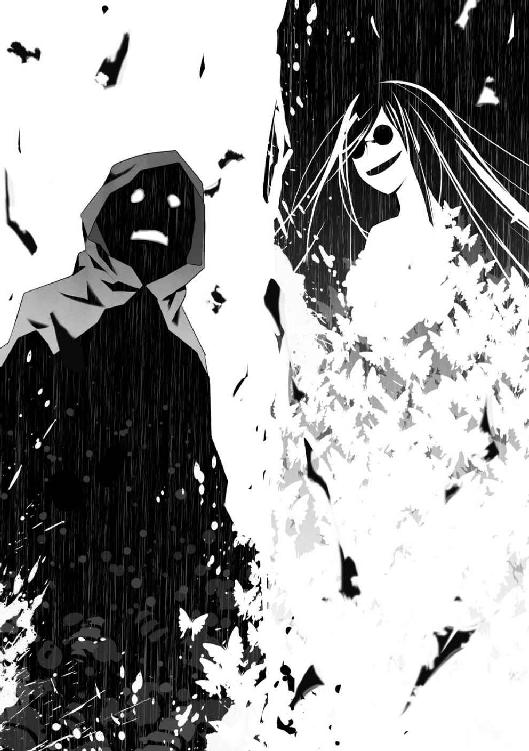
「彼はその瞬間、廃船にいた人々を〝一つ〟に同化し、それらの記憶を融合した後、再び分離しました。その意図は分かりません......あるいは、ただの偶然だったのかもしれません。でも、そのせいで、この場に居合わせた誰もが、何が起きたのかを理解してしまった」
青白い熱線が、天地を引き裂いた。
廃船の内側から放たれた閃光が、廃船の一部をえぐり取った。それでも収まらない衝撃が、埋め立て地に巨大な傷痕を刻み込む。
途方もない重量を持つ船尾が崩れ落ち、地響きが埋め立て地に響き渡った。
破壊された廃船の内側から、無数の球体が飛び出す。
それを見て、大助は思わず声を漏らす。
「〝眼〟──」
堅い外殻を持ち、空に浮かぶ目玉たち。大助はそれと戦ったことがある──。
「おおおおおぉぉおおおおおっっ！」
崩壊する廃船の中から、一人の男が現れた。入院服のようなものを身につけ、無数の〝眼〟を周囲に旋回させている。
男は、泣いていた。
ぼさぼさの髪を振り乱し、怪我をしているのか、衣服が赤く染まっていた。〝眼〟が周囲に熱線を放ち、埋め立て地に谷のような亀裂を作り出す。
「〝α〟は、研究のはじめての〝成果〟であり、最後のそれになるはずでした。なぜ彼だけが〝不完全な虫〟ではなく、最初から虫憑きと呼ばれる状態にあったのかは......分かりません」
〝眼〟による熱線の乱射が続く中、さらなる絶叫が響き渡った。
「ぎゃぁあぁああああぁあッッ！」
崩れゆく廃船の中から、悲痛な叫び声とともに、黒い甲虫の群れが這い出した。
さざ波のような黒虫の群れは、船のいたる場所から溢れ出し、雪崩のように数を増していった。だが悲鳴の主は、どこにも見あたらない。
いや──あった。
半壊した甲板に黒虫が集まり、人の顎に変化しつつあった。
顎は首を作り、鼻を作り、目を作り、人の顔と上半身になっていく。
それは大助の知っている人間だった。
「きーくん──場違いに居合わせてしまった、哀れな人......」
ミッコが悲しげに目を細めた。
「あ、あいつは......」
大助は、きーくんを知っていた。
数時間前までいっしょにいたのだから当然だが、それ以上に黒虫に見覚えがあるのだ。
「なんだよ、これぇぇええええっ！」
豪雨に打たれながら、きーくんが自分の身体を見て絶叫する。上半身を使って逃げ出そうとするも、他ならぬ己の身体となってしまった黒虫は主を逃がさない。
黒虫の正体は──クマムシだった。
無数の脚を蠢かす小さなクマムシが、きーくんの躰の一部となっていた。
「ば、化け物じゃねぇか──うっ！」
叫ぶ少年のちょんまげ頭を、〝眼〟の熱線が撃ち抜いた。
きーくんの頭部が蒸発し、絶命──はしなかった。
別の場所のクマムシが密集し、再び少年の上半身となったのだ。
「死なねぇ......！ 死なねぇえっ？」
泣き叫ぶきーくんに向かって、再び〝眼〟が照準を定める。
しかし廃船の内部から、白い輝きが飛び出した。白色の閃光が、崩壊する廃船に飛び移り、空に浮かぶ〝眼〟の一つの上へ跳躍する。
それは、全身に白く輝く模様を浮かべた少年だった。
「カッシーこそ、始まりと終わりを象徴する存在だったのかもしれません」
カッシーだ。いつも首に提げていたゴーグルを装着し、そのレンズにも輝く模様が浮かび上がっている。
カッシーの拳が、〝眼〟を跡形もなく吹き飛ばした。宙高く跳び上がる跳躍力や、分厚い〝眼〟の外殻を打ち砕く膂力は、もはや人間のものではない。
「逃げろ、きーくん！ ──いや」
地上に向かって舞い降りながら、カッシーが叫んだ。
「一玖皇嵩！」
大助の心臓が、凍りついた。
「一玖──だと──」
一玖皇嵩。
その名前を、大助が知らないわけがない。
ミッコが言う。
「記憶を共有した私たちは、お互いの名前や素性も知りました」
特別環境保全事務局に所属する者ならば、誰もが知っているだろう。
なぜなら、その名前は──いや、それ以上に大助にとっては因縁があり──。
大助の思考が混乱し、頭が真っ白に染まっていた。
「カッシー！ 助けてくれよぉぉおお！ 俺、どうなってるんだ......！」
「いいから、早くこの場から──」
カッシーが言葉を切った。残る〝眼〟たちが、彼を睨んでいることに気づいたのだ。
空中で身動きがとれないカッシーは、その中の一つを睨み返した。ゴーグルが赤く光り、その視線上にレーザ状の真紅の軌跡が生まれる。
〝眼〟が、いっせいに熱線を放った。
カッシーの身体が、粉々に砕け散った。
「カッシー──」
きーくんが凍りつく。
直後、空に浮かぶ〝眼〟の一つが、爆発するように分散して燃え上がった。
消滅した〝眼〟の背後に、無傷のカッシーが忽然と姿を現した。
いや、よく見ると、無傷ではない。その肩が裂け、血が噴き出した。だがカッシーはすぐに別の〝眼〟に狙いを定め、その姿を消す。
「カッシーは最初の同化型にして、恐るべき虫憑きでした。生まれたばかりで暴走することもなく、己の能力も瞬時に理解していた」
カッシーの視線上にいた〝眼〟が弾け飛び、その先に少年が再び姿を現す。その二の腕が引き裂かれ、鮮血を噴き出した
「自らの肉体の分解と、再構成。またそれを使って、直線上にいる物体を分子レベルで沸騰させて消滅させるのが彼の能力でした。──ああ、彼もやってきたようですね」
ミッコが、廃船から視線を外した。
少女の視線の先、埋め立て地の彼方に装甲車の群れが現れた。
それは廃船を包囲し、銃器や砲塔を構えた迷彩服たちが飛び出した。
数台の高級車も現れた。スーツを着た男女の集団が姿を現し、その中の一人が叫ぶ。
「この場所から、誰も逃すな！ ここで片づけるんだ！」
「ルイです」
発砲音が豪雨を引き裂いた。
空に浮かぶ〝眼〟とエルビオレーネ、甲板を蠢く芋虫や黒虫、そしてαやディオレストイ、カッシー、きーくんを巻き込んでの集中砲火だ。
「なっ──」
驚くきーくんの顔面が、銃弾によって弾け飛んだ。だがすぐに別の場所にクマムシが集まり、再びきーくんの絶望した顔が生まれる。
「ルイ！ 俺だ──きーくんだって！ カッシーだっているんだぞ！ 助けてくれ！」
「......」
きーくんとカッシーが、ルイを見下ろした。
ルイが唇を嚙みしめた。修羅の形相で命令を下す。
「この場にあるもの全てだ！」
きーくんが、あんぐりと口を開け──次の瞬間、燃えるような怒りの表情でルイを睨んだ。
「ルイ──てめぇえぇええええぇぇえええっっ！」
銃撃音が廃船を包んだ。
「ぐぉあああああぁぁぁあぁぁああっっ！」
「ううぅうああああっっっ！」
崩壊しつつある看板で、芋虫に埋もれた男が。
壊れたキャビンの残骸の上で、αが。
声のかぎりに叫びながら、銃弾をそれぞれの分身である芋虫や〝眼〟を使って防ぐ。
「ふふ──」
空に浮かぶ女性は、紫色に輝く蝶々の群れを身代わりにした。
カッシーは船の残骸に隠れ、銃弾をやり過ごす。
撃ち殺され、そのたびにまた再生しながら、きーくんが絶叫した。
「てめーら円卓会とかいうヤツらのせいなんだろうがぁぁぁあっ！ 俺がこんなモンになったのも──俺のダチがああなったのも、てめぇらのせいだっ！ 全部、知ってるんだぞ！ 何とか言いやがれっ！ ルイ！ ルイ......！」
きーくんが吼えた。
「円卓会会長──一之黒涙守ッッ！」
大助は目を見開いた。
「一之黒......だと......！」
また、大助の知る名前だった。
だが、その名はあまりにも、彼にとっては意外すぎて──。
「何を驚いているのですか？ もう、とっくに理解しているんでしょう？」
混沌に満ちた廃船を見下ろしながら、ミッコが言った。
「自分が一体、何を見ているのか」
「──」
ミッコの言う通りだ。
自分がどんな場所に立っているのか、すでに悟っていた。
だが理性と感情の整理がつかない。
理解していたつもりだったが──きーくんやルイが何者だったのかは知らなかったのだ。
動揺する大助に、はっきりとミッコが言い放った。
「これは過去の光景。──私たちは〝始まりの三匹〟が生まれた瞬間にいるのです」
〝大喰い〟、〝浸父〟、そして〝三匹目〟──。
〝始まりの三匹〟は、ここで生まれた。
その瞬間に、大助を立ち会わせているのだ。
大助が〝虫〟の力を使えず、特別環境保全事務局と連絡がとれないのも当然だ。そのどちらも、この時代にはなかったのだから。
大助が赤牧市を覆う霧に飛び込んだ時から、ずっと幻覚を見せられているのだ。
いや、もしかしたら、これはただの幻覚ではなく──。
「もしかしたら、本当に過去にやって来たのかもしれない──そう思いましたか？」
「......！」
「だから、急いでこの場へやって来たんでしょう？ もしかしたら、過去に戻ることができる虫憑きがいて、時間を遡った現実にいるのかもしれないと期待して......〝始まりの三匹〟が生まれるのを阻止できるかもしれないと考えた」
廃船を見下ろすミッコの表情は、まったく変わらない。
悲しげに──あるいは愉しげに目を細めたままだ。
「でも、残念ながら、これは幻想です。私の記憶を元にした、過去に起きた出来事......」
「お前の......？」
「ええ、でも、違う部分もあった。実際は赤牧市は〝虫〟に占領されてなどいません。あれはきっと──この光景を見せている虫憑きから、私たちに対する警告なのでしょう」
この光景を見せている虫憑き？ 警告？
疑問が多すぎて、思考が追いつかなかった。
多くの謎ばかりがあって、何が核心にあるのか分からない──。
「でも結局、貴方に見せたかったのは、この光景なのでしょう。貴方がこの瞬間を見届けないかぎり、この幻想が終わるかどうか分からない......だから私はそれを阻止しようとした貴方を一時的に排除したんです。私たちが、この世界から抜け出すために」
ミッコの口調は抑揚がなく、何を考えているのか読み取ることができなかった。
「さあ、始まりますよ。しっかり見届けてください」
迷彩服たちの攻撃が続いたが、まったく成果を得られなかった。
芋虫の大群による反撃を受け、数人の迷彩服が悲鳴とともに白い波に呑み込まれた。さらに〝眼〟による熱線が地上を撃ち払い、装甲車が真っ二つに切断される。
「過去と現在を繫ぐ、世界の分岐点です」
ミッコの台詞が合図だったかのように。
廃船と埋め立て地、そして紫色に輝く空に──。
白い閃光が駆け巡った。
「うぉ──あぁああああっっ！」
αが頭を抱え、絶叫した。
熱線を放つ〝眼〟たちが、次々と空中で弾けて消滅しつつあった。
カッシーだ。ゴーグルを赤く輝かせて姿を消すたびに、〝眼〟が爆散する。そして再び姿を現したカッシーが、すぐにまた別の〝眼〟に照準を定める。
「やめろ──」
積み上げた廃材の頂上から、大助は思わず呻いた。
銃器や砲撃が全く効かない〝眼〟たちを、次々と撃墜するカッシー。その圧倒的な強さを目の当たりにして、無駄と分かっていながら声を絞り出す。
「もう、やめろ......！」
これが過去に起きた実際の出来事だというのなら──。
大助が何を言っても無駄だ。
「いいえ、彼はやめませんでした」
大助の足元に座ったミッコが、単調な口調で言った。
「最初の同化型の虫憑きである彼は、非常に強かった。でも──不完全だった」
ついにカッシーが、〝眼〟の防御壁を破った。
カッシーとαを結ぶ直線上に、立ち塞がるものは何もない。
「うあぁああ......！」
αが悲鳴を上げ、その場から飛び退いた。
カッシーのゴーグルが死の照準を定めた。その姿がかき消える。
「──ッッッ！」
とっさにのけ反ったαの胸が泡立ち、弾け飛んだ。甲板の上をバウンドし、廃船から放り出されたαが、埋め立て地に転げ落ちる。
大の字に倒れたαは、すでに意識を失っていた。胸の一部が抉れて煙を上げているものの、まだ息はあるようだ。
重傷を負ったαに、迷彩服たちが飛びついた。睡眠薬だろうか、注射器を何本も刺した上で全身をテープで拘束する。
αを討ち取った少年、カッシーが白い残像とともにファンネルの上に立った。
「ルイ──」
埋め立て地を見下ろすカッシーの額が──。
裂けて、鮮血が噴き出した。
額だけではない。全身から血が噴き出し、パーカーが鮮血で真っ赤に染まっていた。
「お前の言う通りだ。ここに在るものは全て、ここで終わらせなければいけない」
カッシーの口調は、普段と全く変わらず冷静だった。己の傷はおろか、自らの台詞の重大さを微塵も感じさせない。
「悪夢は今ここで終わらせるべきだ」
少年の視線が、ルイの背後にある高級車を見た。
窓ガラス越しに車内で眠る幼い女の子を見て、カッシーが口元を緩めた。
まるで──自分の家族、妹を見つめるような優しい笑みだった。
「そうだろう？」
ルイもまた愛娘を振り返った。
何かを堪えるように肩を震わせる。
「──その通りだ」
顔を上げた青年の目から、大粒の涙が溢れ出した。強く握りすぎた拳が血の気を失い、真っ青になる。
満足げに頷くカッシーに、芋虫の群れが襲いかかった。
「......！」
それだけではない。反対側からは、黒いクマムシが洪水のように押し寄せつつあった。
「なぁっ......？ おい、やめろぉおおおっ！」
きーくんが悲鳴を上げた。彼の躰から際限なく溢れ出すクマムシが、いっせいにカッシーめがけて動き出したのだ。
「〝天敵〟の存在を感じ、本能的にきーくんの〝虫〟が怯えたのでしょう。虫憑きになったばかりの彼は、自分の〝虫〟を制御することができなかった」
ミッコが言う。
「未熟なのは、カッシーも同じです」
カッシーのゴーグルが赤く輝いた。
覆い被さろうとする芋虫とクマムシの波に穴を空け、上空に転移する。
ピンチを脱出するも、カッシーの太ももから血が噴き出した。
「彼の能力は自らの肉体の分離と再構成。──奇跡のような速さで己の能力を理解し、制御することができたとはいえ、完璧ではなかった」
芋虫とクマムシは、カッシーを逃がそうとしなかった。
階段のように積み重なった同類を踏み台にして、執拗にパーカーの少年を狙う。
やむなくカッシーは別の場所に転移し、回避するが──その背中から赤い鮮血が迸った。
「移動するたびに、小さな欠損部分──つまり再構成の〝取りこぼし〟ができてしまうのです。虫憑きとして訓練を積めば、完璧な転移も可能だったかもしれません。でも、彼にはその時間がなかった......」
そう、それが分かったからこそ、大助は「やめろ」と言ったのだ。
だがカッシーは止まらない。
廃船の周囲を次々と転移し、芋虫の大群を削っていく。
そうすることで、ディオレストイが潜んでいる場所を探し出そうとしているのだ。芋虫の数が見る間に減っていくが、カッシーの身体も傷を増やしていく。
「──」
カッシーのゴーグルが、廃船のある場所を捉えた。
倒壊した操舵室の上に降り立ち、芋虫の中に腕を突っ込む。
そうして引き抜いた腕は、芋虫を全身に這わせた男のマントを摑んでいた。
「......無礼な──」
顔面を覆う芋虫の隙間から、ディオレストイの血走った眼がカッシーを睨んだ。
男の躰から黒い障気が噴き出し、空へ舞い上がった。黒雲のように頭上を覆う障気の中から、立体映像のように巨大な建造物の輪郭が浮かび上がり──。
耳障りな鐘の音が、埋め立て地の空気を震わせた。
「ぐ......ッッ！」
カッシーが顔を歪め、ガクリと膝を折った。
彼だけではない。きーくんが胸を押さえて膝をつき、宙に浮かぶエルビオレーネが顔をしかめた。地上にいる迷彩服や高級スーツたちが、苦しげな呻き声とともにうずくまる。
さらにまた鐘の音が鳴り響こうとするが──。
カッシーの拳が、それをさせなかった。
白い模様を輝かせた腕が一瞬消え、ディオレストイの躰を撃ち抜いて再構築する。
超至近距離でのエネルギーの再構築による余波が、廃船全体を揺らした。甲板や芋虫を消滅させ、なお留まることのない衝撃が、埋め立て地の地面を陥没させる。
胸から下を消滅させたディオレストイが、土塊のようにボロボロと朽ちた。
しかし──。
「我に仇なすか、愚か者め」
嗄れた声は、別の場所から響いた。
廃船の外壁をよじ登り、白衣姿の男が姿を現した。
皮膚がどす黒く変色し、明らかに生命活動を終えていると分かる男に、大量の芋虫がまとわりついた。黒い障気に包まれ、芋虫の大半が退いた後には──。
豪華なマントを羽織った、芋虫まみれの男の姿があった。
ミッコが語る。
「ここで生まれた三つの存在は、形というものを持ちませんでした。研究の実験体として集められた多くの生命が混ざり合い、ベースとなる三つの枠に収まったというだけ......しかも彼らは生まれたての赤ん坊のように、まだ弱い存在だった──」
醜悪なディオレストイの姿を見て、カッシーが冷静に呟いた。
「──死体を操るのか。芋虫を一匹残らず消さないかぎり、キリがなさそうだな」
カッシーとディオレストイの戦いが始まった。
先ほどの一撃で、カッシーの片腕は血に塗れ、使い物にならなくなっていた。芋虫の大群が少年に押し寄せ、その重量で押し潰そうとする。
上空に転移し、芋虫の包囲網を逃れるカッシー。
そして次の瞬間には、隕石のごとく甲板に飛び込み、芋虫を蹴散らす。
物量に勝るディオレストイは、芋虫を盾にし、あるいは自らを囮として、カッシーの肉体を少しずつ削っていく。
それは生存を懸けた、喰らい合いだった。
両者が攻撃を繰り出すたびに、廃船が破壊され、鉄くずと化していく。
「貴方なら分かるでしょう、大助。意味がないと知りつつも、期待してしまうでしょう？」
ミッコが大助を見上げた。
「......」
その通りだった。
大助の眼前で繰り広げられる戦いを見て、彼の胸に小さな期待感が生まれていた。
強い。
カッシーの強さは、想像を絶した。
ディオレストイらが赤ん坊のように弱いという、ミッコの言葉が真実ならば──。
勝てるかもしれない。
大助だけではない。虫憑きならば誰だって、そう期待してしまうだろう。
「私も同じです。人の理解を超えて生まれたディオレストイたちよりも、むしろ虫憑きの可能性に私は見とれてしまった......」
ミッコの詠うような声を、カッシーの咆哮がかき消した。
白い閃光が、廃船を駆け巡った。
何回、何十回とカッシーの姿が消え、再び現れる。そのたびに光が弾け、ディオレストイを覆う芋虫たちが消滅し、ついに──。
ディオレストイを覆う白い鎧が剝がれた。
カッシーはチャンスを逃さなかった。ゴーグルを赤く輝かせ、転移する。
「おおぉおッッ──」
血走った眼を見開くディオレストイの躰が、粉々に弾け飛んだ。
白い輝きの残滓が突風を生み、瓦礫を空高く舞い上がらせる。それらが豪雨ととともに廃船の上に落ちた時には、もう──。
ディオレストイという存在は、廃船から消え去っていた。
信じられない光景を目の当たりにし、大助は硬直する。
「〝浸父〟を──倒した──」
再びファンネルに降り立った白い虫憑きに、クマムシは襲いかかろうとしなかった。完全に彼を畏れ、動けずにいる。
「カッシー......！」
下半身が崩れ落ちた状態で、きーくんがファンネルを見上げた。臆病でいつも助けを求めてばかりいた少年でさえ、自分の境遇を忘れ、辛そうに奥歯を嚙みしめた。
α、そしてディオレストイ──。
二つの災厄に勝利した虫憑きは、しかしすでに血で一色に染まっていた。
頭からつま先まで、血を流していない部分などない。傍目には立ったまま絶命しているのではないかとすら思えた。パーカーとゴーグルも芋虫に喰い破られ、ボロボロだ。
「──」
顔面を鮮血で濡らしたカッシーのゴーグルが、頭上を見上げた。
そこに在るのは──残された最後の災厄。
エルビオレーネだ。
「もし彼の──カッシーという虫憑きの力が、あと少しだけ完成されていれば」
呟くミッコの視線の先で、カッシーの姿がかき消えた。
紫色に輝く蝶々たちが、次々と燃え上がって消滅し──。
直線上の先にいたエルビオレーネの上半身が爆散し、消滅した。
「あるいは、きーくんがまったく違った願いを抱いていたら」
だが次の瞬間、残る下半身から、紫色に輝くクマムシが溢れ出した。それらは集まり、形を変え、元の麗人の姿を取り戻す。
「──ふふ」
遠方に転移したカッシーを、エルビオレーネの七色の瞳が見つめた。
その傷一つない姿を見て、一瞬、カッシーが絶句した。
きーくんが表情を凍りつかせる。
「なっ──なんで......俺と同じ......」
カッシーが再び、姿を消した。
なすすべもなくエルビオレーネの躰が砕け散る。
だが──。
またもや躰の残骸からクマムシが湧き、何事もなかったように復活を果たす。
「それじゃ、ダメなんだ──」
大助は呻いた。
何度となく〝大喰い〟と戦ってきた彼は、身に染みて知っていた。
〝大喰い〟は、自らが虫憑きにした能力を使うことができる。
きーくんの能力は──〝不死〟である。
したがって、それを与えたディオレストイもまた〝不死〟の力を得ているのだ。
「ほんの少しだけ、運命が歯車を変えていたら──ここで生まれたものは、この時に全て消えてなくなり、世界が変わることはなかったのかもしれません」
何度となく攻撃を繰り返すカッシーを見上げながら、ミッコが語る。
「ですが」
血塗れのカッシーが、ファンネルに降り立った。空を見上げる少年の顔から、ボロボロに砕けたゴーグルが落ちる。
その虚ろな視線の先には──。
「ふふふ──」
悠然と嗤うエルビオレーネがいた。何度も消滅したはずの躰には、傷一つ残っていない。
カッシーが、なおも前に足を踏み出そうとするが──。
「──」
ガクリ、と。
力が抜けたように、膝をついた。
力尽き、輝きを失った少年の瞳が、地上を見た。
ルイを見つめ、次に車の中で眠る女の子を見て──。
笑った。
最期の瞬間に何を想い、幸福そうな笑みを浮かべたのだろう。
カッシーは笑顔のまま倒れ──二度と起き上がることはなかった。
「カッシいぃぃいいいいいっっっっ！」
きーくんの慟哭が、豪雨が降り注ぐ埋め立て地に反響した。
「最初の同化型は、生まれてすぐに息絶えました。そして──」
ミッコが呟くと同時に、ヒビ割れた甲板の亀裂から何かが這い出した。
白い芋虫だ。
大助は顔を歪める。
「生きていたのか──」
ほんの一塊の芋虫たちがスルスルと廃船を這い上がった。
それらはファンネルの上で倒れた少年に群がり──。
「──我を滅ぼし得た者よ......その身を献上せよ」
ムクリ、とカッシーが身を起こした。
それが生前のカッシーではないことは、血走った目つきと口調で分かる。
「その力を我に──」
醜悪な顔つきで嗤うカッシーの動きが、ピタリと止まった。何が起きたのか、少年の身体がガクガクと震え出す。
「ぐ......ぉおおっ！ お、おのれ──」
震える少年の腕に、一本の注射器が突き刺さっていた。
「腐っていく──我が器が──」
カッシーの身体に刻まれた傷がただれ、皮膚が赤く変色していた。
ミッコが呟いた。
「──罠です。カッシーはディオレストイが生き残っていた場合を危惧し、自らの肉体に劇薬を注入していました」
カッシー──否、ディオレストイがファンネルの上から転げ落ちた。
傾いた甲板をバウンドし、地上に落下する。
「ぐぉおおお──おのれぇぇえ──」
呪いの言葉を呻いてもがくディオレストイに向かって、ルイが手を振り払った。
「捕まえろ！ その身体に、化け物を封じ込めるんだ！」
絞り出すような、悲痛な命令だった。
迷彩服たちがディオレストイに麻酔弾を撃ち込み、テープや鋼鉄製の箱などで何重にも封じ込める。
ルイの背後にいた高級スーツたちが、すかさず青年にすり寄った。
「一之黒会長。後処理は我々にお任せを。元々、私がオークションにて出品した商品ですので」
長い髪の青年と、それに寄り添うように立つ美女が、ルイに懇願した。
ルイが唇を嚙みしめた。強く握った拳には、血管の筋が浮かんでいる。
「分かった。我々、円卓会の中だけで永遠に封印するぞ──」
「もちろんで御座います......」
その光景を見下ろし、ミッコが可笑しそうに目を細めた。
「捕らえたディオレストイとαは円卓会によって処理されるはずでしたが、利害の不一致によるトラブルがあったようです。会員の間で奪い合いになり、その際に虫憑きにされてしまった馬鹿な人たちもいるようですが......」
「──ふふふ」
紫色の蝶々を従えたエルビオレーネが、廃船に背を向けた。迷彩服たちが銃弾で追撃するも、倒せるはずもない。
遠ざかっていく麗人を見送りながら、ミッコが立ち上がった。
「天敵が消え、エルビオレーネは自由となりました」
紫色の輝きが、空の彼方へ小さくなり──。
完全に消えた。
「多少の違いはありますが、これが実際に起きた過去の出来事です」
廃材の山から下りようとする少女を、大助が呼び止める。
「どこへ行く」
「少々、サボってしまいました。ここからはちゃんと自分の役割を演じようと思います。──この悪夢から目を覚ますためにも」
大助を振り返り、目を細めるミッコ。
マスクの少女が廃材の山から下り、廃船に近づいていく。
そして、こほっ、と咳をする。
ルイがミッコに気づき、手を差し伸べる。
「ここにはもう何もない......来い、ミッコ！」
ミッコは首を左右に振る。
「もし過去に戻れるなら──貴方たちを全員、出会った瞬間に殺すでしょう......」
マスクをずらし、微笑を浮かべた口元を露わにする。
「きーくん、カッシー、ルイ......それに私も......ここへやって来てはいけなかった......」
ミッコの双眸から、涙が溢れ出した。
その光景は、大助に既視感を覚えさせた。
大助はそれを見たことがある。
赤牧市を取り囲む霧の中で、はっきりとその瞬間を見たのだ。
泣き笑いの表情を浮かべたミッコが、はっきりと告げた。
「私たちのせいで、この国は〝虫〟に埋め尽くされて終わるでしょう──」
それはまさしく予言だった。
だが、未来を示すものではない。
すでに過ぎた時代に告げられ、決して誰にも阻むことのできない不吉な暗示──。
それこそが大助が目の当たりにした、予言の真相だった。
「ルイぃぃぃいいっ！ ミッコぉぉおおおおっっ！」
ミッコのそばにクマムシが集まり、ゾンビのようなちょんまげ姿が現れた。
憎悪と怒りに顔を歪め、別人のように変わり果てたきーくんが叫ぶ。
「てめぇらのせいだろぉがぁああっ！ 父親を使って実際に研究を続けてたのはミッコで、円卓会はそれを手伝った......全部、分かってんだからなぁっ！」
「なんだと──」
大助は息を呑んだ。
円卓会はともかく、ミッコが研究を行っていた張本人だというのは初耳だ。
だが、真実なのだろう。
ミッコ自身が言ったのだ。
〝始まりの三匹〟が生まれた、あの瞬間──廃船にいた全ての人間の意識が混ざり合い、記憶を共有したと。
「それなら、分かっているのでしょう、きーくん？ 私はただ、父を研究に没頭させ、悲しみを忘れさせてあげたかっただけだと......」
ミッコが悲しげに微笑んだ。
「ふざけんなっ......！ そんな言い訳が──」
「それに、こうなったのは私や円卓会のせいなのは確かですが──私だけではないはずです」
きーくんの表情が凍りついた。
「カッシーが死に、〝虫〟がいる世界に変わってしまったのは──きーくん、貴方の思い描いた夢のせいでもあります」
「......！」
「貴方が〝不死〟なんて望んだせいで、カッシーは死んだ」
きーくんが見る見るうちに、泣き顔に変わっていく。
「俺のせいで......そうなのか......？」
「でも、大丈夫。世界を変えてまで罪深い夢を抱き、怪物のように変わり果ててしまいましたが、そんな貴方を──」
ミッコが嗤った。
涙は、すでに止まっていた。
その代わり、少女の笑みは──底知れない慈愛に満ちていた。
「私が、愛してあげます」
純粋無垢な子供のように。
あるいは妖艶な大人のように。
鎖のように見る者を捕らえて逃さない、慈悲の笑みだ。
「私は、貴方たちの中に真の〝不死〟を見ました」
金縛りにあったように硬直するきーくんを迎え入れるように、ミッコが両腕を拡げた。
「廃船で遊んでいた頃は、そんなものは信じていなかったんです。ただ父を夢の中に留め続けてあげるための方便でした。──でも、カッシーやきーくん、貴方たちを見て、自分の考えの浅はかさに思い至ったんです」
「ミッコ......？」
屈託なく微笑む少女を見て、ルイが絶句した。救おうと差し伸べた腕が、力なく垂れる。
「ここで終わらせるなんて、とんでもなかった」
下半身がクマムシの群れとなったきーくんに、ミッコが近づいた。
愛おしそうに、その醜悪な躰を抱きしめる。
「カッシーや貴方のような存在こそ、真の〝不死〟に至る過程なんです」
虫憑きの行く末に、〝不死〟がある──。
ミッコはそう言ったのだ。
「──続けさせるわけにはいかない」
ルイが腕を持ち上げた。
迷彩服たちが銃口をミッコに向ける。
「ここで私が死んだら......きーくん、貴方は永遠に一人ぽっちになってしまいますね」
ミッコがきーくんに囁きかけた。
「いつか、貴方と同じ〝不死〟を生んであげることができなくなります──」
ちょんまげ頭の少年が、呆然と顔を上げた。
そして、ゆっくりとルイを見て──。
ザザザッと音を立てて、クマムシたちがミッコの前に立ち塞がった。
「きーくん──」
ルイが絶句する。
「ここで別れましょう、ルイ。私たちは進むべき道が違います」
ミッコがルイの背後を見た。そこには彼の娘が眠る高級車が停まっている。
「そして二度と私たちに関わらないでください。大切な家族を巻き込みたくないでしょう？」
「......ッ！」
顔色を変えるルイに、優しく微笑みかけるミッコ。
地獄のような光景の中、対峙する両者の姿がぼやけた。
どこからか、乳白色の霧が漂い始めたのだ。
大助はそれに見覚えがある。
赤牧市を取り囲み、彼を過去の世界へと誘ったものと同じだった。
「どうやら、この遊びも終わりのようです」
ミッコが視線を持ち上げた。
廃材の上に立つ大助を見上げ、目を細めた。
「今度は現実で会いましょう」
急速に霧に包まれていく埋め立て地で、大助はその少女を見下ろした。
見る者を愛という鎖で縛り、聖母のように微笑む。
そんな人間を、彼はこの世でたった一人しか知らなかった。
「これが、お前のしたことか......」
その名を、口にする。
「魅車八重子──」
廃船。
埋め立て地。
迷彩服や高級スーツたち。
そして──。
一之黒涙守。
一玖皇嵩。
魅車八重子。
その時代、その時、世界が変わる瞬間に立ち会わせた者たちの姿が、白い霧によって覆われつつあった。
「一刻も早く私を見つけ出しなさい、火種一号局員〝かっこう〟」
霧によって消える瞬間、八重子は微笑みを消した。
「我々の敵は、こうしている間にも強大になりつつあります──」
「なっ......？」
我々の敵。
その意味を問い返そうとした大助の腕が、霧に隠れて消え──。
彼の意識がプツリと切れて途絶えた。
霧が晴れると、大助の視界が暗黒に染まっていた。
どす黒い塊が蠢き、集まり、流れていく。
それは──黒い雲だった。
「......ッ！」
大助は、身体を震わせた。自分が空を見上げていたことに気づき、我に返る。
己の身体を見ると、いつの間にか漆黒のロングコートを纏っていた。腰には自動拳銃も装備している。顔には大きなゴーグルを装着していた。
雨が降っていた。
冷たい水滴と、横風の感触が生々しかった。
こうして全身で五感を感じると、はっきりと分かる。
今まで長い夢を見ていて、その中をずっと走り回っていたのだと。
「なんで俺は、こんなところに......？」
まだ意識が混濁していた。頭を振り、足元を見る。
広大な街並みが、眼下に拡がっていた。
赤牧市だ。以前に住んでいた時に見覚えのある建物が、いくつか見えた。
大助は──高層ビルの屋上に佇んでいた。
「赤牧市に潜入しようとして、霧の中に入って......あの時から、俺は幻覚を見せられていたはずだ。過去の赤牧市で、俺は......」
大助が迷い込んだのは、かつての赤牧市だった。
ミッコ、きーくん、ルイ、カッシー。
そう名乗る人々と出会い、ともに旅をして、予言の地へと辿り着いた。
そして、見たのだ。
〝始まりの三匹〟が生まれる瞬間を。
全てが始まり、世界が変わった、その時を──。
「あれは、ただの幻だったのか......？」
雨に打たれながら、大助は手を掲げた。
緑色の輝きを纏うカッコウムシが、指先にとまった。
〝虫〟の力が使える──。
大助は現実に戻ってきたのだ。
「いつの間に、俺はこんな場所に......？」
赤牧市に潜入しようとして、偽りの世界に囚われてしまったのは確かだ。
あの霧が虫憑きの能力だったことも、予想がつく。何者かはまだ分からないが、大助が何らかの攻撃を受けて幻覚を見ていたのだろう。
だが高層ビルの屋上に上った覚えはない。
自分自身が無傷だということも疑問がわいた。大助を殺すことはいつでもできたはずだ。
姿なき敵の意図が読めない。
困惑した状態で、街を見下ろして──大助は違和感を覚えた。
「人が、いない......？」
ファストフード店やオフィスビルが立ち並ぶ大通りに、人の気配がなかった。
歩道を歩く通行人はおろか、国道を走る自動車すらも見当たらない。
静まり返った大通りに、雨が打ちつける音だけが不気味に響く。
「俺は、まだ夢の中にいるのか......？」
現実離れした光景を見て、嫌な予感がこみ上げた。
──私たちのせいで、この国は〝虫〟に埋め尽くされて終わるでしょう。
幻の世界で告げられた、不吉な予言が脳裏に蘇った。
『──ますか？ 応答してください！ 〝かっこう〟さんっ！』
突然、耳元で女性の声が響いた。
大助はハッとして耳を押さえる。
『〝かっこう〟さん！ 無事ですか？ 返事してくださいよぉっ！』
「──柊子さん？」
聞き覚えのある声だった。ゴーグルに内蔵された無線を通して喋っているようだ。
『あっ！ あっ！ 〝かっこう〟さん？ 〝かっこう〟さんですよねっ！ 大丈夫ですか！ ずーっと応答がないから、私、もぉどうしちゃったのかと......！』
「大丈夫だ。俺は......何ともない」
『本当ですか？ 本当の本当に？ 怪我とかしてませんっ？ どぉして赤牧市に潜入したきり、音信がぱったり途絶えちゃったんですかぁ！ 誰かと戦闘に？』
柊子の声は本物だ。この今イチ頼りない支部長代理の狼狽ぶりは、誰にも真似できない。
自分が現実の世界に戻って来たことを実感し、少なからず安堵を覚えた。
「心配ないよ。戦闘も──多分、してない、はずだ」
『多分？ じゃあ、今までどぉしてたんですか！ 定時連絡もナシで、二日間も！』
「二日間？」
思わず、問い返す。
謎の幻覚攻撃を受けて、一時的に意識を失ったことは自覚していたが──。
過去の世界を奔走したのも、ちょうど二日間だった。
「そんなに連絡しなかったのか？ 俺は──」
『なに他人事みたいに言ってるんですか！ 今、どこですか？ ──あっ、こっちでゴーグルの位置を測定します！ 一体、何があったんですか？』
「分からない......」
他に答えようがなかった。
過去の世界を見てきた、などと報告したら、余計に心配されそうだ。
そもそもアレが、かつて本当にあった出来事だという確信もない。
『もう！ 霧の中に入るなり音信が途絶えるし、ゴーグルの位置測定システムも感知できなくなっちゃうし！ 〝かっこう〟さんのことだから死ぬことはないと思ってましたけど、それでも心配したんですからね！』
「悪い。俺は大丈夫だけど、いまいち状況が摑めない。赤牧市の外はどうなってる？ 市内は何だか様子がおかしい──」
『あ、〝かっこう〟さんがいる位置が分かり──って、あああっ！ そ、そそそ、そこっ！ ダメです！ 〝かっこう〟さんが今いるトコ、ダメですっ！』
大助は眉をひそめた。
「ダメ？ 何がダメなんだ？」
『もぉすぐ、そこも呑み込まれます！』
呑み込まれる。
そう言われても、大助には何のことだかさっぱり分からない。
「説明してくれ！ 何が起きてるんだ！」
『ほ、本当に今、何が起きてるか知らないんですかぁっ？』
「だから、そう言ってるだろ！」
『か、〝かっこう〟さんが音信不通になって間もなく......赤牧市を覆う霧が晴れたんです』
「えっ──」
大助はビルの屋上から身を乗り出し、無人の街を見渡した。ロングコートが横風になびいて、背後にある柵を叩く。
赤牧市を覆っていた霧が晴れた。
それが本当なら、無人になるどころか、赤牧市に特環が入り込んでいても良さそうだが──。
『赤牧市の市民は霧による影響に動揺していたものの、死傷者もなく無事でした。でもすぐに中央本部の情報班から緊急通信が飛びこんだんです。それもすぐに何らかの妨害によって遮断されてしまいましたが......』
「本部から緊急通信？ 内容は？」
『緊急救助要請。──つまり、ＳＯＳです』
大助は言葉を失った。
中央本部が、救助要請？
特別環境保全事務局という組織の中で、最も高い戦闘力を有する中央本部が？
「ウソだろ......？」
『彼らは要塞──本部の拠点内に閉じ込められているそうです！ おまけに危険な存在が要塞内から地上へ解放される恐れがあるとして、市内に退避勧告を出しました』
「中央本部が、閉じ込められてる？ 危険な存在......？」
『我々は政府と連携し、本部から指定された地域から住民を退避させました！ 表向きは不発弾を発見したからって公表してるけどコレ、もう無理ですよね、隠しきるの......』
「なんでそんなことになってるんだ？ 要塞にはハルキヨがいるはずだろう？」
中央本部には、魔人がいるはずだ。
何を意図して本部に居座っているのかは知らないが、あのバカみたいな戦闘力を持つ男がいながら、そのような窮状に陥るとは思えなかった。
『知りませんよぉ！ とにかくそぉいう状況になっちゃって......ああっ！ 接触しちゃう！ いいから今すぐ退避してください！ 退避ぃ！』
「退避ったって......一体、何が来るって──」
赤牧市の街並みを見渡す大助の視線が、ある一点で止まった。
足元に走る国道の先に、それはジワリと滲むように現れた。
どす黒く、煙のような不定形の気配。
立ち並ぶビルの隙間から、這い出すように現れた黒い気配は、大助がいる方角に向かってゆっくり進んでいるようだった。
「なんだ、アレは──」
『は、早く逃げてっ！ 斥候役だった北中央支部の局員がすでに何人か餌食になってます！ いくら〝かっこう〟さんでも、一人でどうこうできる相手じゃ......！』
黒い気配を伴い、実際にビルを呑み込んだのは白い何かだった。
まるで街を描いた絵画の上から、白い絵の具を塗り重ねたように。
べっとりと。
穢らわしい白が、少しずつ赤牧市を浸食していく。
「──」
やがて大助の目が、その不気味な絵の具の正体を捉えた。
芋虫だ。
見間違えるはずがない。
大助はかつて、それを──過去、現在を問わず、何度も目撃してきた。
中央本部から解放された、危険な存在とは何か。
大助はその正体を悟った。
『にっ、逃げてくださいっ！ 〝かっこう〟さん！』
柊子が叫んだ。
『〝浸父〟の本体が解放されたんです！』
ゆっくりと。
しかく確実に。
芋虫の大洪水が、大助の視界を真っ白に染めつつあった。
ビルから見下ろす街並みが、白い芋虫に呑み込まれつつあった。
道路や自動車、高層ビルに至るまで、押し寄せる白波に覆われ、障気の中へ姿を消していく。
浸食の速度は遅いものの、このままでは──。
『早く退避してください、〝かっこう〟さん！』
ゴーグルの無線を通じて、上司である五郎丸柊子が叫んだ。
「本当に、〝浸父〟なのか......？」
大助は以前、〝浸父〟と戦ったことがある。
無定形の〝虫〟を宿す特殊型の虫憑きを生む〝浸父〟は、老人の姿をしており、芋虫の大群を引き連れていたが──。
今、眼下を這うモノの規模は桁違いだった。
──あんなものは、ただの欠片の一つにすぎないわ。
そう言ったのは、同じ〝始まりの三匹〟である〝大喰い〟だった。
──中央本部は〝始まりの三匹〟の一つを隠してるよ......。
そう言ったのは、かつて大助と同じ東中央支部に所属していた少女だった。
大助が戦ったのが〝浸父〟の一部分にすぎず、眼前に迫っているのが本体だとしたら──。
「やっぱり中央本部が、〝浸父〟の本体を隠していたのか」
大助が見た過去では、〝浸父〟──ディオレストイは円卓会によって回収されたはずだ。
しかし今、なぜかそれが中央本部の手中にあり、何らかの理由で解放されたことになる。
『あっ、いえ、〝本体〟と言ったのは私の推測でして、たぶん本部は認めないでしょうけど』
「こうなったら隠しておけるもんじゃないだろ。どうせすぐ開き直るさ」
『そ、そぉですね、では暫定として〝浸父〟の本体として扱います』
「中央本部は今、どんな状況なんだ？ まさか全滅したんじゃないだろうな」
『救助要請以降、沈黙してます。要塞に閉じ込められてるんじゃないかと......』
これだけの芋虫の下敷きになっているとしたら、中央本部といえど長くはもたないだろう。
なぜ今になって、〝浸父〟の本体が解放されたのか──。
その理由が気になるものの、悠長に推理している時間はなさそうだ。
「これだけ標的がデカイと、本体を叩く以外になさそうだな。俺はこのまま本体を探す」
長い年月、幽閉され続けた憎悪か、それとも別の要因があるのか。
〝浸父〟は誕生した瞬間より、確実に力を増していた。
眼前の光景が、その忌むべき事実を物語っている。
『ダメですってば！ もぉすぐ敵の射程範囲に入ってしまいますっ！』
「射程範囲？」
大助が訊き返した時だった。
芋虫と障気に呑み込まれた、一棟の高層ビル。
その頂点が、盛り上がった。
芋虫の大群が、ちょうど人間一人分くらいの大きさになり──。
「──」
その隙間から、〝何か〟が大助を見ていた。
赤黒く濁った瞳だ。
腐って黒ずんだ顔の輪郭が一瞬だけ、垣間見えた。
大助は、その顔を知っていた。
「カッシー──」
拳銃を抜こうとした大助の脳天を、ヒビ割れた轟音が殴りつけた。
とてつもない質量の金属どうしを力任せにぶつけたような、ひどく耳障りな音。
鐘の音だ。
「......！」
顔を歪めて頭上を見上げると、巨大な建造物が浮かび上がっていた。
〝教会〟だ。
〝浸父〟の能力の発動体である。
とっさに遠ざかろうとした時には、遅かった。
「しまっ──」
大助の周囲に、どす黒い障気の嵐が吹き荒れた。
逃れようとするが、足がピクリとも動かない。
あっという間に視界が暗黒に包まれる。
空を覆っていた雲が。
眼下に拡がっていた赤牧市の街並みが。
悪意に満ちた暗黒の障気と耳障りな鐘の音によって、遥か遠くに消え去っていく。
『汝は何を望む......？』
五感を閉ざす暗闇に、嗄れた声が響いた。
甲高く、ヒビ割れ、男性と女性の区別もつかない声。
『汝は何を欲する......？』
何も見えず、何も触れることのできない空間。
大助は自分が両脚で立っているのか、それとも寝ているのかさえも分からない。
『汝は何を願い──』
暗闇に明かりが灯った。
明かりは次第に大きくなり、大助は自分が地面の上に立っていることに気づく。いつの間にか装備を解き、顔を隠していたゴーグルも消えてなくなっていた。
ぐにゃり、と足元の地面が柔らかくなった。
『これほどの犠牲を払ってきたのだ......？』
地面──ではなかった。
積み上げられた人の山だ。
数え切れないほどの人間が横たわっているが、その顔にはどれも見覚えがあった。
『汝の夢が、これだけの数の夢を喰らってきたのだ』
大助の手で欠落者にしてきた虫憑きたちだ。
『汝の夢は、それだけの価値があるのか......？』
欠落者たちが起き上がり、彼の身体にまとわりつく。
その重みは大助の肩に悲鳴を上げさせ、鋭い爪が彼の皮膚を引き裂く。
『汝の夢は......弱き者にとっての悪夢だ......』
耐え難い苦痛に、大助は悲鳴を──上げなかった。
奥歯を嚙みしめ、ゆっくりと瞳を閉じる。
首を絞められ、爪が食い込み、内臓を抉る感触が彼の脳髄を鷲づかみにした。全神経が引きちぎられるような痛感が全身を痺れさせ、生暖かい自分の鮮血の味が口の中に拡がる。
『汝は長い夢を見過ぎた......』
痛覚、憎悪、恐怖が彼の心身を埋め尽くそうとするが、大助は微動だにしない。
五感の全てが悲鳴を上げる中、自分の内にある扉を探す。
必ず、その扉はあるはずだ。
あらゆる責め苦で覆い、隠されたそれを探し求め──。
ついにそれを見つけた。
暗黒に包まれた空間に、光の漏れる扉がある。
『長く見続けた汝の夢は......悪夢なのだ......』
扉を、こじ開ける。
憎悪に満ちた世界に光をもたらした、その扉は──。
大助のまぶただった。
「そんなことは、とっくに知ってる──」
本当のまぶたを開いた大助の前には、白い芋虫に蹂躙されつつある街並みがあった。
空には重い雲が浮かんでいる。
「前にも、そう言ったはずだ。この俺に何度も同じ手が効くと思うな」
大助の視線が、遠方の高層ビルを射貫いた。
そこにいたはずの〝何か〟の姿は、すでに見あたらない。ただの芋虫がいるだけだ。
大助が精神攻撃を弾き返したと見るや、すかさず逃げたのだろう。
かつてより力が強大になっただけではない。
より狡猾に、用心深くなっている──。
大助は舌打ちし、ゴーグルに手を当てた。
「柊子さん。今、〝浸父〟から精神攻撃を受けた」
『うぇっ？ だっ、大丈夫ですか！ だから離れてくださいって言ったのに！ 北中央支部の斥候がやられたのも、たぶんソレです！ どんな攻撃でしたか？』
「以前に〝浸父〟から受けた精神汚染と同じだ。でも痛覚を乗っ取られるあたり、強化されてるかもしれない。芋虫の中に人影を見つけても、目を合わせないほうが良さそうだ」
『り、了解......！ 全支部に警告します！ 〝かっこう〟さんは大丈夫ですかっ？』
「大したことない」
精神攻撃に抵抗する訓練も受けているし、経験もじゅうぶんに積んでいる。
今さら精神攻撃なんかにやられるわけがない──。
そう自負していたつもりだった。
「......」
だが赤牧市に潜入した時、大助はあっさり過去の幻想の世界に取りこまれてしまった。
あれも精神攻撃の一種だったはずだ。
なぜ、自分はあんなにもあっさりと攻撃を受けてしまったのだろうか。
あの乳白色の霧に、敵意が感じられなかったから？
そうだとしても、今の自分がかつてより弱っていることは確かだ。
残された力も少なく、あと一回、全力で戦えるかどうか──。
「......中央本部の力が要るな」
ぽつり、と大助は呟いた。
赤牧市を浸食する芋虫の大群は、数を増す一方だ。
とても大助一人で手に負える状況ではない。
その事実を冷静に受け止められたのは──過去の幻覚を見たせいだ。
虫憑きの力を使わずとも、〝虫〟と戦った人々と出会った。
大助が思っている以上に、自分以外の人間は強い。
かつての戦友にも言われたが、大助はずいぶん思い上がっていたようだ──。
『ど、同感です。でも地下要塞に通じる出入り口が、完全に芋虫で覆われていて......』
「近づけないのか？」
『ええ、近づこうとした途端、バタバタと倒れてしまって......たぶん〝かっこう〟さんが言った精神攻撃を受けたんでしょう。高位の局員を投入すべきか検討してますが、どの支部も自分たちの切り札を失うリスクを怖れて、なかなか結論が......』
中央本部が沈黙した途端、このザマだ。本部による独裁が今だけは懐かしい。
大助は舌打ちした。このままでは埒が明かない。
「俺が行く。近くの出入り口に誘導してくれ」
『ええーっ！ で、でもぉ、今は行方不明だった〝かっこう〟さんの帰還を全支部に報せて、士気を上げたいっていうか』
「いいから、早く」
『はあ、また単独行動ですか......とはいえこの状況で、〝かっこう〟さんについていける人なんていませんけど』
「何かあった時のために、有夏月を近くに待機させておいてくれ」
大助のゴーグルに、地図が浮かび上がった。要塞に通じる出入り口の場所が映し出される。
『ちゃんと報告してくださいね？ またいなくなったりしないように』
大助の肩に、緑色のカッコウムシがとまった。弾けるように躰を変化させ、無数の触手となって彼の全身に同化する。
「分かった」
全身に光り輝く模様を浮かべた大助が、地面を蹴った。
屋上の端まで戻り、助走をつけて──跳躍する。
黒いロングコートが、赤牧市の上空を舞った。
風を切り、大助は強化された脚力で隣のビルの屋上に着地する。緑色の輝きが全身を駆け巡り、コンクリート製の床が大きく陥没した。
さらに隣接するビルに跳び降り、地面に近づいていく。
何度目かの着地で国道に降り立った大助の目前に、芋虫が迫りつつあった。
だが大助は芋虫を無視して迂回し、目的地を目指して走り出す。
『もぉすぐです。何が待ち構えてるか分からないので、気をつけてください』
「ああ」
やがて大助が到着したのは、大きな建造物の前だった。
中央本部の地下拠点への出入り口として偽装されていた頃は、外科と内科がある古い複合病院の跡地だったはずだ。
それが現在は、以前と似ても似つかない場所に変わり果てていた。
蠢く白によって建物全体を覆い尽くされ、壁の色すらも分からない状態である。
「ひどいな──」
外側がこの有様なら、内部はもっと酷いだろう。
顔をしかめつつ建物に近づくと、たちまち芋虫が彼めがけて押し寄せた。
「ちっ」
試しに一発撃って、様子を見るか──。
大助が拳銃を抜こうとした時。
「......ッッ！」
轟音と地響きが、空気を振動させた。視界が金色に染まる。
白い芋虫がひしめく敷地に、一条の雷が落ちたのだ。
電撃と衝撃波が芋虫たちを吹き飛ばす。
「なっ......？」
とっさに防御体勢をとる大助の眼前に、金色の輪郭が浮かび上がった。
焦げた地に立つ二本の足は、すらりと長い。腰は細く、胸はなだらかな曲線を描いている。
だが──人ではない。
金色に輝く輪郭は、パチパチと音を立てて爆ぜ、揺れる長い髪の先端が飛び散った芋虫をさらに焼いて消滅させた。
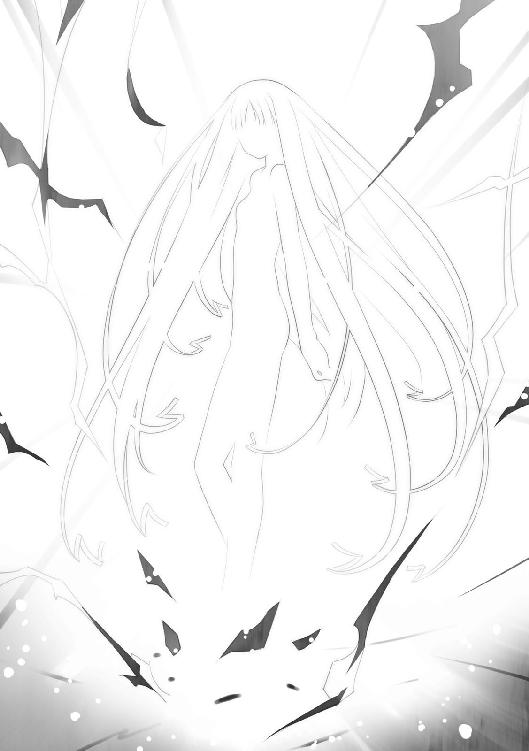
放電現象によって象られた女だ。
二十歳前後だろうか。その美しい顔立ちは、大助の知らない人物のように思えた。
「何者だ」
真夜中の墓場で出会ったら幽霊と思うだろう。だが状況が状況である。何らかの虫憑きによる能力と見て間違いないだろう。
拳銃を向ける大助に対し、金色の女性は何も答えなかった。
無言で、大助の顔を凝視する。
「......？」
女が、クルリと大助に背を向けた。手を真横に振り払う。
電撃の嵐が吹き荒れ、芋虫たちをなぎ払った。
病院内部に向かって、焼け焦げた道が造り出される。
女が振り返り、また大助をじっと見つめた。
「罠......か？」
大助が警戒してそう呟くと、女がふっと微笑み──。
その姿が、弾けて消えた。
拳銃を構えたまま、呆然と立ち尽くす大助。
女が消え去った後も、芋虫たちは病院内部へ通じる道を閉ざそうとはしなかった。そこだけを避けるようにして地面を這い回る。
「柊子さん......地下へ入れるかもしれない」
ゴーグルに手を当て、上司に報告する。
「あまり長くはもたなそうだけどな」
今は芋虫が避けているが、タイムリミットがあるようだ。じわじわと道が狭まりつつあった。
「時間がない。命令してくれ」
姿の見えない上司が悩む気配が伝わった。
だが、決断したようだ。
『──許可します』
押し殺した声で、五郎丸柊子が命令を下す。
『火種一号局員〝かっこう〟。今すぐに内部へ潜入し、事態を収拾してください』
大助は苦笑した。歩き出す。
「現場に行って全部片づけろ、って......ずいぶん大味な命令だな」
『できますよね？』
罠かもしれない。
だが前に進むしか、選択肢はなかった。
「土師に似てきたな、って思っただけだよ」
かつての東中央支部支部長の名を口にし──。
大助は、病院の中へと足を踏み入れた。
病院の内部は、見える範囲の全てが芋虫によって占領されていた。天井や床の区別なく蠢く様は、巨大な生物の体内にいるような錯覚を覚えさせる。
大助は唯一、芋虫のいない通路を進んでいく。
すると前方に穴が見えた。エレベータの入り口のようだが、芋虫の影響か、扉や機体がボロボロに腐り、ただの空洞になっている。
「ここから下に行けってことか」
大助は穴の中へ身を投じた。
縦穴は芋虫がはびこる洞窟のようだった。大助はかろうじて残された鉄骨を跳び移り、下へ下へと地下深くに潜っていく。
「......入るのは良くても、ここから出す気はなさそうだな」
上を見ると、大助が下りてきた穴が早くも芋虫によって塞がれていた。
「罠だとしたら、俺を内部に招き入れたのは......俺を中央本部といっしょにここに閉じ込めるためか？ 実際、それができれば特環の戦闘力をだいぶ殺ぐことができるが──」
どれくらいの深さに到達しただろうか。ようやく現れた床に着地する。
顔を上げると、やはり芋虫だらけの通路があった。
「だとしても、〝浸父〟がそんなことを考えるか？」
床を蹴り、通路を駆ける。
カムフラージュした地上の出入り口から到達できるのは、要塞の最上層にあたる部分だ。主に虫憑きの局員が生活するためのエリアで、最も地上に近い層である。
「〝始まりの三匹〟が、そんな人間じみたことをするとは思えない......」
〝始まりの三匹〟は人の夢に引き寄せられ、それを喰らう──。
それが特別環境保全事務局、そして大助自身がこれまでの経験で得た答えだった。
花蜜に引き寄せられる蜂のように。
明かりに集まる蛾のように。
それを行うために生まれたといっていい、絶対の本能が存在する。
そう考えていたのは、誤りだったのだろうか？
「中央本部がまだ無事だっていう確証もない。もしとっくに全滅してたら、俺はまんまと罠にかかっただけのバカ──」
通路の先を見て、微笑する。
「──でもなかったみたいだ」
ここまでずっと視界を埋め尽くしていた芋虫に、変化が生じていた。
線を引いたように、ある地点から先に進むのを拒んでいるのだ。
「一応、無事みたいだな」
通路の先に、ぼやけた輪郭を持つ〝虫〟がいた。
二メートルほどの細長い躰に、数十対の細い脚を生やしたヤスデだ。
大助はその〝虫〟に見覚えがあった。ヤスデは五匹ほどいて、通路に立ち塞がるそれらに怯え、芋虫たちは先に進めずにいる。
芋虫が進入できずにいる境界線を越え、大助はヤスデに近づいた。
「〝玉藻〟。俺だ、通せ」
巨大なヤスデが、大助の脚を這い上がり、牙を彼の顔に近づけた。緑色の煙が密集して形作った〝虫〟の眼が、大助の腹の底を締めつける。
恐怖感を操る〝虫〟なのだ。宿主とは旧知の間柄である。
ヤスデが彼を解放した。スルスルと音もなく離れ、道を譲る。
「さすがに状況は厳しそうだな......」
無人の通路を走るうちに、今度は黒い霞が前方に立ち塞がった。
大助が近づくと、霞が空中で凝固し、鋭い爪と化した。
「〝霞王〟」
彼の声に反応し、ピタリと爪の動きが止まった。
横をすり抜ける大助の背後で、黒い爪が拡散して元の霞に戻った。
〝玉藻〟と〝霞王〟は、どちらも中央本部でエース級の戦闘員である。彼女たちが直々に、それも二人がかりで防衛線を張っているとなると、かなりの苦境なのだろう。
さらに走り続けていくうちに、扉が見えた。居住区の入り口だ。
大助が前に立つと、扉が開いた。
「──」
ざわめきが、彼を出迎えた。
そこは広いホールだった。
中央本部の標準装備である白一色のコートに身を包んだ戦闘員が陣形を組み、大助を取り囲んだ。さらにその周りで、大勢の白コートたちが警戒の眼差しで彼を見つめる。
聞こえる声は「本当に〝かっこう〟なのか......？」「どこかに外と通じた道が？」「どうして無傷で──」と、一号指定の突然の来訪に戸惑っているようだ。
「──身体は大丈夫なのか、〝玉藻〟？」
居並ぶ白コートたちの中で、異彩を放つ人物がいた。コートの下にラメの入ったミニスカートを穿き、背中に小さな翼をつけた少女である。
「ぷっ、いつの話してるの、〝かっこう〟さん？ 〝流星群の夜〟以来、激しい動きはできないけど、そのぶん〝虫〟の扱いは絶好調だよぉ？」
そう言って小悪魔の笑みを浮かべる少女は、先ほどのヤスデの宿主だった。
「〝霞王〟さんたちは、奥にいるけどぉ」
「分かった」
短い会話を終え、大助は白コートたちの真ん中を突っ切った。
中央本部局員たちの驚愕と畏れの視線が向けられる中、いくつかの扉を抜け──。
「てめぇ、本物だろうな？」
新たな部屋に足を踏み入れた大助を、鮮やかな碧眼が射貫いた。
白コートに身を包んだ金髪の少女だ。部下らしき局員を背後に従えている。
「最近、〝ミミック〟っつーニセモノがうろちょろしてるみてぇだからな。そうじゃなくても、この緊急事態だ。警戒しないとな」
黒い霞を纏う少女、〝霞王〟が敵意を剝き出しに大助を睨んだ。室内に充満する野獣のような殺気が、味方であるはずの局員らをたじろがせる。
「──魅車はどこだ？」
再会の挨拶もなく、大助は室内を見回した。
「あの女に、聞きたいことがある」
「......ちっ」
〝霞王〟が不機嫌そうに舌打ちした。室内に立ち込める黒い霞を消す。
「人の話を聞かねーあたり、本物っぽいが......どうやって要塞に入った？ 外へ出られる場所があるのか？ 増援のつもりなら、他の局員はどこにいる？」
警戒を解いたとはいえ、〝霞王〟は奥へ通じる扉の前に立ち塞がったままだ。
「俺一人だ。様子見のつもりで出入り口に来たら──なぜか中へ入れるようになった。出口はもう芋虫に塞がれたけどな」
「はああ？ バッカじゃねぇのか、てめぇ！ そんなの罠に決まってんじゃねぇか！ てめぇまであっさり閉じ込められてどーすんだ、殺すぞ！」
「魅車は？ 死んだのか？」
「話を聞きやがれ、クソ野郎！ オレ様の顔を見ろ！ あの女が死んでたら、もっとニッコリしてるはずだろーがっ！」
漂う険悪な空気に、周囲の局員たちが緊張する。
だが大助と〝霞王〟の会話は、昔からこれで普通だ。
『〝かっこう〟を通してください』
ゴーグルから、女性の声が響いた。
五郎丸柊子ではない。要塞内に入ったことで、中央本部の通信を聞けるようになったのだ。
『彼はニセモノではありません』
「......ハッ、さっきまで意識不明だったくせにもう元通りかよ、うちの副本部長様は」
吐き捨てるように言い、〝霞王〟が扉から離れた。
大助は〝霞王〟の横を通り抜けようとして、足を止める。
「ハルキヨは？」
小声で訊ねると、金髪の少女が顔を歪めた。
「知るか。ヤツがいねぇから、この有様だ。情けねー」
「ここがもつのは、あとどれくらいだ」
「五時間ってところか......オレ様たちが無事に見えるのは、〝ねね〟の再生能力のおかげだ。でもアイツ自身が限界に近い」
「......」
「攻め時だ。今まで守りに徹してきたが、万が一オレ様がダメでも、てめぇがいりゃ──」
「俺のことはアテにするな」
〝霞王〟が碧い目を見開き、大助を凝視した。
「どれくらい戦える力が残ってるか、分からない」
他の人間に聞かれたら、取り返しのつかないことになる。
一号指定〝かっこう〟は、特別環境保全事務局の奥の手だ。抱かれる感情の多くが憎悪だとしても、虫憑きたちの精神的支柱になっていることは知っている。
「......クソ野郎」
吐き捨て、〝霞王〟が目をそむけた。怒っているのか、それとも──落胆しているのか。
「オレ様との約束、まだ果たしてねぇぞ」
大助は黙って、〝霞王〟の横を通り過ぎた。
約束。
〝霞王〟だけじゃない。
大助には、まだ果たしていない約束がいくつもある──。
「──来ましたね、〝かっこう〟」
扉を抜けた部屋に、その女性は佇んでいた。
広い部屋は薄暗く、白いコートを装備した数十人もの少年少女たちが床の上に座っていた。
パソコンに似た機器と向かい合っているのは、情報班に所属する虫憑きだ。外部との通信の復帰を試みたり、拠点内部の状況を把握しようとしているのだろう。
部屋の中央に佇む二十代後半の女性が、大助に向かって優しく微笑んだ。
捉えた人間を安堵と畏怖でその場から動けなくする、鎖の笑み──。
それが生まれた瞬間を、大助は目の当たりにした。
「それともお帰りなさいと言うべきでしょうか？ 〝あの世界〟から、無事に帰ってきたんですから」
大助はゴーグルを外した。素顔を露わにして、眼前の女性を睨む。
「──ミッコ」
「そう呼ばれたのは、十数年ぶりです」
大助がこの世で最も嫌いな女。
特別環境保全事務局中央本部の副本部長、魅車八重子がそう言って──。
こほっ、と咳をする仕草をしてみせた。
「奥へ」
魅車が隣接する部屋に、大助を招き入れた。
「地上の状況はどうなっていますか？」
倉庫のようだ。スティール製の棚が並んだ空間を、非常灯の淡い明かりが照らしていた。
「各支部の動きを報告してください、〝かっこう〟」
魅車が棚に置かれた缶詰を指でなぞった。籠城の備えは充分らしい。
「......市民の避難が追いつかなくなるのも時間の問題だ。芋虫に対応するにも戦力が足りない。各支部が要塞から中央本部を救出する作戦を考えてる」
大助は戦闘員〝かっこう〟として、報告した。
目の前にいるのは副本部長の魅車八重子だ。
過去の世界で見たミッコの面影はない。──と言いたいところだが、こうして見ると目元や声は確かにミッコの名残があった。
「失敗するでしょう。支部単位では現状を打破するだけの戦力がないし、連携をとれるだけの指揮官はいない。──あなたのところの支部長がいれば、話は別だったでしょうけど」
クスリ、と魅車が笑った。何が可笑しいのか、大助には理解できない。
「何をしても無駄ってことか？」
「そうは言っていません。私にも考えはあります。ただ不思議なことに」
魅車がこちらを見た。
「思いつく作戦のどれにも──一号指定が絡んでいるというだけです」
「......」
「さっそく、そのうちの一つが無駄になりました。貴方はここに来るのではなく、地上の局員をまとめるべきだった。〝あの世界〟でも言いましたが、貴方は本当に頭が悪い」
あの世界──。
つまり、過去の世界。
先ほどからの台詞でも分かる。
あの幻覚に引きずり込まれたのは大助だけでなく、魅車も同じだったようだ。
大助は〝始まりの三匹〟が生まれた瞬間の光景を、眼前の女性と共有したのだ。
魅車八重子──ミッコと名乗ったマスクの少女と。
「なんで俺があんなに、ミッコに苛立ったのか分かった。正体が魅車八重子だったなら当然だ。お前も俺と同じ幻覚を見ていたのか」
「あの中ではともかく、今は貴方の上司です。はたいたら反逆罪で捕らえますよ？」
「......俺が見た光景は、本当に過去にあった出来事だったのか？」
「おおよそ、真実です」
魅車が缶詰を指先でつつき、弄ぶ。
「私の父は〝不死〟の研究に没頭し、当時の円卓会の目に留まった。その研究は頭の悪い父には荷が重かったものの、私がこっそり手引きして研究は続きました」
「......」
「そのことに気づいた父は私に感謝するどころか、畏れ、私を殺そうとしました。だから私は夢物語をおしまいにするために実験体を連れて脱走して──彼らと出逢ったんです」
彼ら。
それが誰なのか、大助は知っている。
「きーくん、ルイ......カッシー」
「一玖皇嵩、一之黒涙守、カシュア・アルティネスです」
知っているのだ、彼らのことを。
まず、一玖皇嵩。
その名は──特別環境保全事務局の中央本部本部長の名前だった。
名前だけの局長に代わり、実質的な権限を握るも、ここ数年は人前に姿を現さなくなった人物である。彼が姿を消した理由を知る者は、大助を含めても数少ない。
「一玖は当然のこと、一之黒涙守とも面識があるはずですね、〝かっこう〟？」
もちろん、知っている。
その名も過去の決戦と関係しているからだ。もっとも、実際に関わりを持っていた──否、決戦の中核にあったのは、一之黒涙守の一人娘だったが。
すでに過ぎたはずの戦いが、実はもっと旧くから──。
全ての始まりから、繫がっていた。
その事実を知ってしまったからこそ、大助は衝撃を受けたのだ。
「カシュアは......その名前さえも本名ではありませんでした。どの世界にも彼が実在した証拠は存在しません。彼のような人間は、たびたびこの国に潜り込んでいます」
名もなき異国の少年。
彼の正体は分からない。
だが、最初に生まれた同化型の虫憑きだった。
生まれると同時に、世界の変化を阻止するために戦い、その果てに息絶えた。
わずか数例しか存在しないにもかかわらず、イレギュラーばかりを繰り返す同化型の虫憑きの──最初の一人だった。
「あの時──本当の意味で、〝虫〟は生まれたのか」
大助の問いかけに、魅車八重子が──。
「ええ、そうです」
はっきりと頷いた。
「その兆候はあった。でも決して成功しないはずの実験だったのに......あの瞬間、何が起きたのかは私にもまだ分かりません」
魅車八重子がミッコと呼ばれていた当時の笑顔を浮かべた。
屈託のない。
まるで世界を祝福するかのような、優しい笑顔。
「お前が──原因なのか」
完全に無意識だった。
気がつくと、大助は魅車に拳銃を向けていた。
今、己の中で渦巻く感情の正体が分からない。
怒りだろうか。
憎しみだろうか。
今まで身に受けたそれらを反芻し、原因に向かってぶつけようとしているのか。
それとも──彼がこれまでに欠落者にしてきた者たちが、そうさせたのか。
「原因？」
魅車が微笑を消した。
「あの世界、あの時代で起きたことを、その目で見たはずでしょう？ それなのに、どうしてそう思うのです？」
「どうして......だと？ お前が──」
「ええ、私がいました。私が父の研究を奪ったせいですか？ そもそも父が研究を始めたせいですか？ ルイたち円卓会が研究に協力したせいですか？ カッシーの力が足りなかったせい？ 何の関係もない、きーくんの夢が結果的にカッシーを殺したせい？」
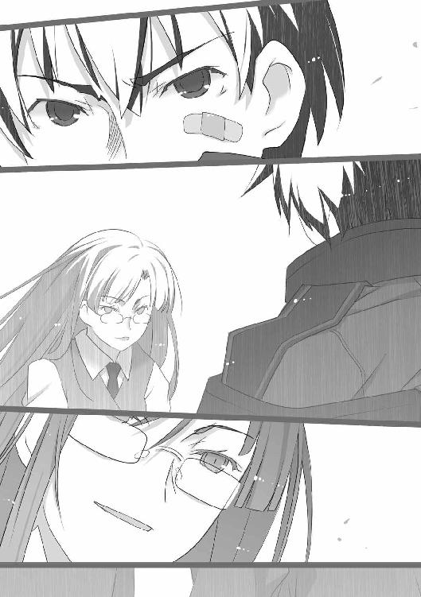
引き金にかけた指に、力を込める。
「どこです？ どこで止まれば、〝原因〟と言えたのでしょうか？」
以前の自分なら、迷いなく引き金を引くことができた。
いや──違う。
かつての大助ならば、原因を恨んだりはしない。自分の夢を守るためだけに戦い、それ以外のことなど興味もなかったはずだ。あくまで敵は〝始まりの三匹〟で、それが生まれた経緯まで追求したりはしなかった。
「世界が変わったのが、私たちのせいであることは否定しません。でも原因という言葉でくくることはできません」
頭では、分かっているのだ。
全ては過去の世界で見た、ミッコの不吉な予言通りだった。
──私たちのせいで、この国は〝虫〟に埋め尽くされて終わるでしょう。
あの時代にいた誰もが、世界が変わる原因となり得た。誰か一人でも欠けていれば、あの予言に繫がる旅がゴールへ辿り着くことはなかった。
「──」
そうと知りながら、拳銃を下ろすことができない。
自分自身の意思とは違う何かが、そうさせているのだろうか。
大助は誰よりも、夢半ばで倒れる虫憑きを見てきた。
誰よりも長く戦い続けているうちに、彼らの思いを背負ってしまった。
それは彼らの夢の続きであり──。
憎悪と言えるのかもしれない。
どんな想いであったとしても、大助にはそれを背負う資格などないというのに──。
「......！」
かすかな音と揺れが、要塞の中に伝わった。
無言で向かい合っていたから気づいたような、小さな異変だ。音は頭上から聞こえた。
「ディオレストイが痺れを切らしたのでしょうか？」
天井を見上げ、魅車が目を細めた。拳銃を向けられても微塵も動じていない。
「あの芋虫は......やっぱり〝浸父〟なんだな」
大助は拳銃を下ろさない。
「あの廃船で捕まえた〝浸父〟──ディオレストイを中央本部が隠していたのか」
「あの頃に特別環境保全事務局は存在しません。政府の横やりや円卓会の打算など、色々あった結果です。もっともディオレストイが残した分身が、その後も動き回っていたようですが」
「......」
「もう知っているでしょうが、殲滅班もディオレストイの欠片を使った実験体です。そのため本体が我々の手を離れた時点で欠片を奪い返され、あっさり無力化されてしまいました」
何年間も最重要機密であったはずの事実を、魅車があっさりと語る。
「......ディオレストイが俺にあの幻覚を見せたのか？」
「そんなことをして、あれに何の得があるんです？」
「......？ じゃあ、誰が──」
また要塞が揺れた。
先ほどよりも揺れは大きく、音も近づいているようだ。
「赤牧市を隔離した霧の原因に決まっているでしょう？ あれは私に対する警告であり、貴方にとっては救いを求めていたのです。──と言っても、察しの悪い貴方には分からないでしょうね、〝かっこう〟」
またひっぱたいてやろうか、と心中で呻く。
過去の世界で無意識に苛立つくらい、大助は魅車八重子という人間が気に入らない。
「仮にも〝不死〟の一人なんですから、しっかりしてください」
冗談めいた一言だった。
実際、魅車八重子という女は常に微笑んでいて、今も笑っているのだが──。
「──なんだと？」
聞き流すには、重すぎる一言だった。
〝不死〟。
これまで節目となる決戦で度々聞いた言葉を、聞き逃すはずがなかった。
「俺が、〝不死〟の──一人？」
「強いだけが一号指定の条件だと思っていたのですか」
魅車の細い目が、硬直する大助の目を見つめた。
「決して死なない。それが一号指定です」
「......利菜は！」
思わず、叫んでいた。自分の喉が痺れるほどの大声だった。
先ほどとは違って、はっきりと分かる。
自らの意志で、今、彼は引き金にかけた指に力を込めている──。
「あいつは、死んだ！」
「〝レイディー・バードは我々の胸の中で生きている〟」
膨らむ大助の殺意も、魅車にとってはそよ風としか感じていないのかもしれない。
「彼女の遺志を継ぐレジスタンスは皆、そう言います。──ありがとう、〝かっこう〟。貴方が彼女の〝不死〟を完成させてくれた」
絶句する。
「彼女の〝不死〟は──呪いです。神格化した彼女の存在は、どこまでも拡大して後の人間を捕らえて離さないでしょう」
馬鹿げている。
そんな〝不死〟があるものか。
「利菜だけじゃない──今も眠ってるアイツは、そんなものとは関係なかった！」
かつてあった大戦で姿を消した、一号指定の槍使いが脳裏に浮かんだ。
全滅という完全敗北を喫した決戦での生き残りは少なく、彼女の名を知る者も少ない。
「あれは彼女の〝虫〟に対する一号指定です。一度は消えても、宿主を変えて蘇る──そんな〝虫〟は、あのモルフォチョウだけだった」
何度でも蘇る〝虫〟。
イレギュラーであり、〝虫〟のいない世界を取り戻そうとした原動力となったそれは、今も深く眠り続けている。
「ハルキヨ──」
「彼は燃え盛る炎です。自分の意思は関係なく、他者を燃料にして燃え続ける。決定的に自分の運命というものがないのでしょう。だからいつまでも自分以外の運命が彼を生かす」
「そんなものは......こじつけだ」
大助は掠れた声で言った。
どれもこれも、都合の良い結果論だ。
一号指定は誰だって、いつ死んでもおかしくはなかった。
他の誰でもない、自分自身がそうだったから断言することができる──。
「俺は......何度も死にそうだった」
「でも生きている」
「何度も死にかけた！ 特に他の一号指定と関わった時は、必ずといっていいほど──」
「当然です。貴方は一号指定を試すための一号指定なのですから」
魅車が今までで一番優しい笑みを浮かべた。
母のような──。
彼を産み、大事に育ててきたかのように慈愛に満ちた微笑だった。
「なん──だと──」
「不思議だと思いませんでしたか？ 必ず大きな戦いには貴方がいることを」
思わないはずがない。
だがそれは彼が特別環境保全事務局で最も強い虫憑きなのだから、当然のことで──。
「一目で一号指定と決めたのは、たった一人......それ以外は全て貴方と戦い、生き残ったことで一号指定と定めたのです。結果、最初はただの試験紙のつもりだったのに、死なずに生き残り続けていることで、今なら確信を持って言えます」
にっこりと唇を持ち上げる魅車八重子の笑みが、悪魔にしか見えなかった。
「貴方もまた真の一号指定であると」
違う。
自分が生き残っているのは、ただの奇跡だ。
だが──思い当たるところもあった。
最初、〝ふゆほたる〟捕獲に単独で当てられたのがそうだ。
次に一号指定となった者の元へ送られたのも、管轄外のはずの赤牧市だった。
そこでハルキヨとも戦い、ある決戦を経た後、東中央支部に戻って立花利菜の監視者となった。それまで東中央支部では監視班ではなく戦闘班に所属していたのに。
何度も一号指定同士で死闘を繰り広げたのは、他ならぬ自分だけ──。
その事実に、気づいてしまった。
「十年以上も前の、あの日......いえ、それよりも前からずっと続けてきた研究の成果は、貴方たちの行く末にあるのです」
拳銃を握る大助の手が汗で湿った。
魅車八重子という人物は、長い年月をかけて。
予想外に生まれた〝始まりの三匹〟や虫憑きを利用してまで。
ずっと彼女の追い求める〝不死〟を見出そうとしている──。
「貴方たち虫憑きは、〝不死〟に至る進化の過程なのです」
頭上から聞こえる音と、要塞を揺らす振動が大きくなっていた。
地震と呼べるほどの揺れが、要塞を激しく揺らす。
倉庫の扉が開き、白コートたちが雪崩れ込んだ。
「副本部長！ この振動は一体......！ 〝浸父〟が何らかの攻撃を仕掛けてくるんじゃ──」
情報班の虫憑きだ。指示を仰ぎに来て、拳銃を構えた大助を見て絶句する。
「気にしないでください。彼に銃を向けられるのは、はじめてじゃありません」
「......」
大助は魅車に拳銃を向けたまま、情報班の虫憑きを睨んだ。
ここで魅車を殺したとしても、今は何の解決にもならないことは分かっている。
だが拳銃を下ろすのは、感情が許さなかった。
「し、しかし、〝浸父〟が今も......！」
「いえ、私も最初はそう思いましたが──これはおそらく違うでしょう」
ピクリ、と大助は構えた銃口を動かした。
「地上にいる支部が救助作戦を......？」
「彼らでは戦力が足りないと言ったのは貴方でしょう、〝かっこう〟？ どの支部にも、これだけ急速に地下深くへ到達するだけの破壊力を持つ虫憑きはいません」
それなら一体、何が起きているというのだろう？
必死に思考を巡らせる大助を見て、魅車が一瞬だけ、呆れた顔をした。ミッコと呼ばれていた頃の少女の表情をのぞかせる。
「本当に察しが悪いですね、〝かっこう〟」
そう言われても、その言葉の意味をすぐには理解できなかった。
だが──。
「──」
ある予感が、大助の頭からつま先を貫いた。
顔を上げ、魅車を見つめる。
「私は言ったはずですよ。この苦境から脱するには、一号指定の力が必要だと」
その言葉で、確信した。
踵を返し、情報班を突き飛ばしてホールに戻る。
「〝霞王〟っ！」
緊張した面持ちの戦闘員たちの中に飛び込み、大声で叫ぶ。
金髪の少女が、彼を振り向いた。
「分かってる！ とうとう〝浸父〟が攻めてきやがった！ だが守りきって──」
「地上に向かって天井を掘りまくれ！」
「......はあ？」
ホールが沈黙に包まれた。
「守りはいい！ 今すぐに全員、このホールに集めろ！ 脱出するぞ！」
〝霞王〟が怪訝そうに、大助の顔を見つめ返した。
だが彼の表情に何かを読み取ったのか、クルリと背を向けて戦闘員たちに命令を下す。
「脱出だ！ できるだけ一カ所に集まれ！ 土砂からはオレ様の能力で守る！ 攻撃力のあるヤツは掘る作業に集中しろ！ 救護班をすぐに呼び戻せ！」
「し、しかし地上までどれだけあると──」
「知るか！ いいから、やりやがれ！ ぶっ殺すぞ！」
恫喝まがいの命令に、白コートたちが困惑しつつも従った。慌ただしく動き出し、あっという間に攻撃力の高い戦闘員がホールに集まる。
〝霞王〟の霞が拡がり、白コートたちを守るように拡散した。
「おい、〝かっこう〟。考えはあるんだろうな？」
「助けが来る」
天井に向かって拳銃を構える大助に対し、〝霞王〟がニヤリと笑った。号令を下す。
「──始めるぞッッ！」
カッコウムシと同化した大助の拳銃が、業火を吹いた。
大助だけではない。
数十人にも及ぶ虫憑きたちの攻撃が、それぞれ最大火力で天井を撃ち抜いた。
激しい閃光と轟音が要塞を埋め尽くす。
天井が砕け、消滅し、ホールがあっという間にドーム球場ほどの広さと高さを持つ空間に変わった。崩れ落ちる土砂を、黒い霞が要塞の通路や倉庫へとそらしていく。
頭上に空いた空間が、高層ビルほどの高さとなり──。
それ以降は、ただの真っ暗な空間に変わっていく。
さらに攻撃を続けるうちに、脱落する虫憑きが現れた。膝を突き、荒い息をつく局員が一人、二人と増えていく。
「まだかよっ......！ つーか、地上まで届くわけねーぞ！」
「もうすぐだっ......！」
消耗して汗を滲ませる〝霞王〟に対し、大助もまた拳銃を連射しながら言い放つ。
要塞を揺らす震動が、大きくなっていく。
「......ッ！」
一際大きな揺れが、要塞を襲った。
あまりに大きな衝撃に局員たちが転倒し、攻撃が止む。
「くっ......！ なんだ、今のはぁ！ 〝浸父〟か？」
「いや、違う──」
荒い息をつきながら、大助は頭上を見上げた。
ただの暗闇だった空間に、小さな光点が浮かんでいた。
地上からの明かりが届くはずもない。
その光点は要塞に向けて落下しているようだった。
「はあ？ なんだ、ありゃあ──って、オイ！ マジかよ！」
頭上から落下してきたのは──一人の少女だった。
あっちからすれば、急に足元が抜けて驚いたのだろう。目をまん丸にしたまま落下の恐怖に硬直した顔は青白く、だいぶ消耗しているのが分かった。
「......！」
その少女を、大助は両腕で受け止めた。
腕力が強化されていることを抜きにしても、少女の身体は軽かった。
「──」
一瞬の沈黙。
そして──悲鳴が要塞を駆け巡った。
疲れ果てているはずの局員が、いっせいに大助と少女を中心にして飛び退いていく。
「あ、あの、私......」
逃げ惑う局員たちに向かって、少女が何か言おうとするが誰も聞いてくれない。
姿を現したのは、小柄な一人の少女。
それも特環の虫憑きにとっては、ある意味、〝浸父〟以上に恐るべき存在だった。
「──分かってる」
大助は頷き、少女を地に下ろした。
「分かってるから、大丈夫だ」
一人、冷静な大助を見て、少女は困惑した様子だった。大助──いや、〝かっこう〟が中央本部の要塞にいることが予想外だったのだろう。
だが次の瞬間、場違いに嬉しそうな顔で笑った。
「〝かっこう〟さん──」
特別環境保全事務局、そして〝かっこう〟にとって最大の天敵であり、レジスタンスである〝むしばね〟のリーダー──。
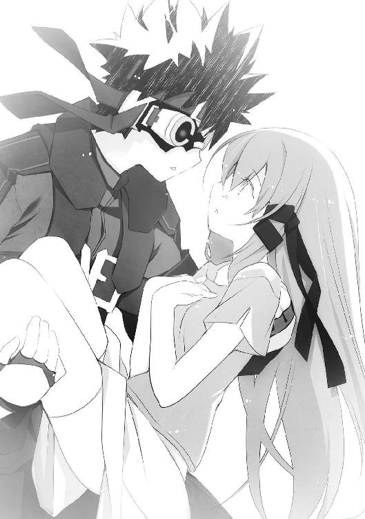
「今こそ、力を合わせましょう」
〝ふゆほたる〟と呼ばれる少女の名は、杏本詩歌といった。
ゴウゴウと風が鳴る音が、暗闇の中を急上昇する大助の耳に響いた。
「本気で特環と手を組もうってんじゃねーだろーな？」
〝霞王〟の低い声が、あっという間に奈落の底へ呑み込まれていった。
「......」
杏本詩歌は無言だった。地上から穴を掘るために力を消耗したのだろう、かすかに息が上がり、顔色も蒼白だ。
「今まで何人の特環局員が、〝むしばね〟にやられたと思ってんだ？」
「レイディー・バードがいなくなった後、〝むしばね〟は変わろうとしていたらしい。特環と戦うんじゃなく、〝始まりの三匹〟を倒す時が来たら力を合わせると......」
そう言った大助を、〝霞王〟の碧い瞳が睨みつける。
地上へと繫がる大穴を、大助たちは見えない力によって猛スピードで押し上げられていた。
〝霞王〟の能力だ。彼女の〝虫〟である実体のない霞が、大助や中央本部の局員たちをまとめて地上に向かって持ち上げているのだ。
途方もない重量を支える〝霞王〟の負担は、相当なものだろう。
「〝かっこう〟。てめぇがなんで〝むしばね〟の事情を知ってやがる」
「......」
大助の実の姉である、薬屋千晴から聞いた話だ。だがそう説明しても、〝霞王〟が納得するとは思えない。
「私たちは──」
詩歌が〝霞王〟に向き直った。だが目眩を起こしたのか、ふらりと身体を傾ける。
大助はとっさに腕を伸ばし、詩歌の肩を支えた。
「目を閉じてろ。少しでも体力を回復しておけ」
「......はい」
何か言いたげに唇を嚙むも、おとなしく言う通りにする詩歌。
地下要塞があるのは、高速エレベータでもかなりの時間を要する深さだ。詩歌だからこそ、たった一人で掘り進むことができたのだろうが、その心身の疲労は想像を絶する。
──来年のクリスマスに、また会おう。
そう約束したのは、虫憑きの〝かっこう〟ではない。
ごく平凡な高校生、薬屋大助だ。
約束の時まで、まだ時間がある。
その時までにやるべきことをやると誓った以上、まだ詩歌に正体を明かすべきではない。
今は詩歌に目を閉じてもらい──。
大助は〝かっこう〟としての声と態度で、彼女に接する他にない。
「多くの〝むしばね〟を倒してきたのは、我々も同様です」
魅車八重子がやんわりと言った。
「それに最近の彼らが特環に対する攻撃を自制しているのは、最前線にいる貴方も知っているはずですね、〝霞王〟？」
「......ああ」
光の届かない大穴を上昇する中で、最も上部にいるのが大助たちだった。大助、詩歌、〝霞王〟、魅車が向かい合い、それ以外の局員はもっと下の位置にいる。
このスピードだと、地上に到達するまで、まだまだ時間がかかりそうだ。
「レイディー・バードがいた頃からは考えられねぇ。張り合いがなくて退屈なんだよ」
「新しいリーダーとなった〝ふゆほたる〟の意向だそうです。特環と戦わず、〝始まりの三匹〟を倒す時が来たら力を合わせる──その主張が本心であることを示すためにも、今の状況で〝むしばね〟が我々を助けようとするのは当然の流れです」
魅車の細い目が、大助に支えられた少女を見た。
「第一、こんなにも彼女を愛している私を、優しい彼女が助けないわけがないでしょう？」
ピクリ、とまぶたを閉じた詩歌が顔をしかめた。
大助と〝霞王〟は、無言で魅車を睨む。
こうなることを予測していたのか、それとも本気で愛だのと言っているのか──。
この細目の女が考えていることは、さっぱり理解できない。
「とはいえ、こんなに行動が遅いとは予想外でした。あいかわらずろくな頭脳役がいないのか......あるいは〝むしばね〟内部にも、〝霞王〟のように我々と手を組むことに反発する者がいたというところでしょうか」
ちっ、と〝霞王〟が不機嫌そうに舌打ちした。
「何より気にいらねぇのは、〝ふゆほたる〟がたった一人で目の前にいるってことだ。オレ様たちのことをナメてんのか？」
「彼女の力は強大です。巻き込まれないための単独行動は仕方がないとはいえ、彼女の仲間はそのことにも反対したでしょうね。何しろ私たちは天敵どうしでしたから」
「その天敵が、本当の天敵のそばで安心しきってる理由も説明できるのか？」
ギクリ、と大助の身体が強ばった。
今、腕の中に感じる確かな体温と息づかい。
それはかつて感じたものと同じで──その都度、詩歌は傷つき弱り切っていた。
はじめてそれを感じたのは、大助が詩歌の〝虫〟を殺して欠落者にした時だった。
「〝かっこう〟。てめぇと〝ふゆほたる〟は敵どうしだったはずだろ。オレ様だけじゃねぇ、誰もがそう思ってる。──だが顔を合わせても、一度も戦おうとしねぇのはなんでだ？」
「違う......」
詩歌が薄目を開いた。
「〝かっこう〟さんが敵だったことは、一度もないです......」
「はあっ？」
絶句する〝霞王〟。詩歌が再び目を閉じる。
「ンなわけねぇだろーが！ 何言ってやがんだ、てめぇ！」
できることなら、今すぐに詩歌を抱きしめたい。
だが今の大助に、その資格はない。
詩歌は彼を敵ではないと言ったが──それは誤りだ。彼は詩歌の敵だった。
魅車の言っていたことが真実かまだ定かではないとはいえ、大助と詩歌は敵どうしとして巡り会った。その結果、彼は彼女を欠落者にし──。
別人と思いこみ、再会した。
その結果、再び詩歌に辛い思いをさせたのも大助だ。
もう二度と中途半端な希望は見せない。
〝始まりの三匹〟を一匹残らず倒し、全てに決着を付けるまで──。
詩歌に、自分の正体を明かすことはできない。
「今なら〝ふゆほたる〟を確実に倒せる。あの〝ふゆほたる〟をだ」
〝霞王〟が大助を睨んだ。彼はゴーグル越しに、睨み返す。
「〝始まりの三匹〟を倒すのが先だ」
「......ッ！ ざけんな！ てめぇが〝ふゆほたる〟を守ってどうすんだ！」
「......」
「てめぇが守らなきゃいけねぇ一号指定は、今も眠ってるあの女のほうじゃねぇのかよ！」
「あの女......？」
詩歌が目を開き、大助の顔を見上げた。
魅車も、こちらを見ていた。
「......」
大助は意識して無表情を作り、黙り込んだ。
すでに過ぎた過去のことに、囚われるつもりはない。
これまでも、そうやって──忘れたフリをしてきたのだ。
少なくとも魅車八重子がいるこの状況では、その態度を貫かなければならない。
ずっと探し続けてきた切り札が今、東中央支部の手中にあることを、今は誰にも悟られるわけにはいかない──。
「拗ねるのは構いませんが、スピードが落ちていますよ、〝霞王〟」
今にも嚙みつきそうな形相の〝霞王〟を、魅車がたしなめる。
「なっ......！ 誰が拗ねてんだ、コラァ！」
「中央本部にいた頃は、まるで兄妹のように仲が良かったですからね。その彼が何やら〝ふゆほたる〟と隠しごとをしている様子なのが、気に入らないのは分かりますが」
「はあ？ ンなわけねぇだろ！ ──てめぇ、〝ふゆほたる〟！ なにジロジロ見てやがる！」
「あう......ご、ごめんなさい」
「いや、俺もそこまで仲が良かった覚えはないが......」
話題が逸れてくれたのは助かった。
だが〝霞王〟を宥めるのに一苦労しそうだ、と嘆息した時。
『......〝かっこう〟さん？ 聞こえますか！』
大助のゴーグルから、もう聞き慣れてしまった甲高い声が聞こえた。
五郎丸柊子だ。
「柊子さん？ 聞こえるか？」
「通信が届く距離まで到達したようですね」
魅車がマイクの付いたイヤホンを頭に装着し、〝霞王〟もゴーグルを装着した。
『聞こえます！ ということは無事に地上に脱出しつつあるんですね！ 〝ふゆほたる〟さんが単独で地面に潜ったって聞いて、もう気が気じゃなかったんですよぉ！ ケンカしてませんか？ 仲良くしてます？』
「ええ、彼女は私の愛にしっかりと応えてくれました」
魅車がマイクを通じて言う。柊子が息を呑むのが分かった。
『はぁっ！ こ、これは魅車副本部長！ ご、ご無事で良かったなあ......？』
「ありがとうございます。こちらは間もなく戦闘員二百八十名とともに地上に到達するでしょう。我々を救助してくれた〝ふゆほたる〟とともに」
『そ、それは何よりです！ 地上はもう限界が近くて......芋虫の数が増える一方で市民の退去が追いつかなくなりそうな状況でして......！』
「各支部に通達してください。我々の救助はもういいですから、北中央支部の戦力を中心に〝浸父〟を包囲して被害拡大の阻止に全力を注ぐようにと。ただし三号指定以上の局員は、中央本部の到着を待つこと。我々が地上に出ると同時に、殲滅作戦に討って出ます」
『つ、通達しますぅ！』
「我々が地上に到達するのは、およそ十分後です。やれますね、〝霞王〟？」
『あ、〝霞王〟さん！ 私です、五郎丸です！ お久しぶりですね、支部長代理に出世したんですよ、私！』
「うるせえ、くたばれ」
毒づく〝霞王〟は、明らかに疲弊していた。先ほどから怒っていたのも、疲れを紛らわせるためだったのかもしれない。
地上に向かって上昇し続けること、十分。
「大丈夫か、〝霞王〟」
大助が声をかけるも、〝霞王〟の返事はなかった。隈の浮いた顔で上方を凝視し、能力の制御に集中している。
詩歌が両目を開いた。大助の腕を離れ、立ち上がる。
「ありがとうございます、〝霞王〟さん」
頭を下げる少女の頭上に、光点が見えた。
黙って中指を立てる〝霞王〟。
地上の明かりに近づく速度が加速した。
そして──。
「──ッッ！」
大助たちは、大穴から勢いよく地上へ押し出された。
溢れる噴水のごとく湧き出す霞に乗り、次々と白コートたちが地上へ投げ出される。
急激に力を使いすぎた反動だろう。気絶して地面に倒れた〝霞王〟に、再生能力を持つ〝ねね〟という局員が駆け寄る。
「ご苦労様でした、〝霞王〟」
目を細める魅車八重子とともに、地上の様子を見回す虫憑きたち。
大助たちが降り立ったのは、赤牧市の街のど真ん中だった。
すでに住人が退去した後なのだろう。片側三車線の道路を走る自動車は一台もなく、何万人という人々が働いていたはずの街並みからは人の気配が消えていた。
そこにいたはずの人間たちに成り代わり、地上を支配していたのは──。
「これは......」
大助と詩歌は、その光景を目の当たりにして絶句した。
赤牧市という大都市が、完全に芋虫の大群に呑み込まれていた。
真っ白な砂に覆われた砂漠──。
そんな別世界に迷い込んでしまったのかと、大助は錯覚した。
だが、違う。
盛り上がった丘陵は、かつてはビルだった建物であり。
視界を覆い尽くしているのは、砂ではなく──白い芋虫だった。
「もう......後戻りできないな」
ぽつり、と大助は呟いた。
これだけの規模の被害が生じた以上、一般市民だけではない、世界中から〝虫〟の存在を隠し通すことはもう不可能だ。
明日から、また世界が変わる。
〝虫〟の存在を、誰もが認識する世界になるのだ。
だが、そこに希望があるか、それとも絶望のみ存在するかは──。
今日の大助たち、虫憑きたちの戦いによって決まる。
「中央本部は〝疫神〟、〝四ツ葉〟、〝玉藻〟、〝トラマル〟のチームを中心に戦闘隊形を展開してください」
魅車八重子がマイクを通して命令を下した。
要塞から脱出したばかりの白コートたちが、訓練された動きで隊列を組む。
ゴーグルから、声が響いた。
『北中央支部からは五名の戦闘員を合流させます。ご指示をどうぞ』
グレーのコートとバイザーを装備した虫憑きたちが、白コートたちの背後に現れた。
『西中央支部からは、〝さくら〟を投入します』
また違う声だ。ツナギ型の装備を纏った長身の女が、隊列に加わる。
『南中央支部。......三号指定以上の局員がいないため、〝浸父〟の被害拡大抑止に集中する』
南中央支部には高位の戦闘員で構成したチームがあった。しかし最近になって、そのチームが全滅してしまったと聞いている。
『ひ、東中央支部からは〝月姫〟、〝火巫女〟、そして〝かっこう〟が加わりますぅ！』
大助の背後に、人の気配がした。漆黒の装備を纏った〝月姫〟と〝火巫女〟──緒方有夏月と土師千莉が姿を現す。
特別環境保全事務局の精鋭が結集すると同時に、芋虫たちの大群が押し寄せた。
魅車が一部の戦闘員とともに、後方へ退避していくのが見えた。
『私は各支部の統率、および被害抑止の指揮にあたります。中央本部の戦闘員、および各支部の高位戦闘員は、速やかに〝浸父〟の殲滅作戦に移行すること。作戦指揮官は──』
ゴーグルを通じて魅車八重子の声が響いた。
『〝かっこう〟』
異論を唱える者は、いなかった。
大助以上に戦闘経験が豊富で、なおかつ全支部の戦力を把握している者は、各支部長を含めても他にいない。
『なお当作戦には、〝むしばね〟が加わります』
離れた場所で、水蒸気の嵐が吹き荒れた。
芋虫を吹き散らした建物の屋上に、数人の人影が現れる。
詩歌を中心とした集団だ。〝むしばね〟の中心戦力だろう。その中にはかつて東中央支部に所属していた女性の姿もあった。
「〝なみえ〟──」
かつて同僚だった女性は、大助と目を合わせようとしなかった。彼女が特環を裏切り、〝むしばね〟に荷担していることを知ったのはだいぶ前のことだ。
『──作戦開始』
魅車の号令が下った。
「北中央支部。この場所を確保しろ」
大助はゴーグルに手を当て、命令する。
紙切れのように薄っぺらい〝虫〟が、ひらひらと宙を旋回した。大助らがいる場所を中心にして、〝虫〟が通り過ぎた後にいた芋虫たちがいっせいに粉々に吹っ飛ぶ。
空を埋め尽くす雲が、赤茶色に染まった。
ぽつり、と赤黒い水滴が降り注いだ。
赤い雨は豪雨となり、雨に触れた芋虫たちが悶え苦しみ、溶けて消滅した。大助たちを避けて降る雨は、ますます勢いを増していく。
「防壁を張れ、〝玉藻〟。〝むしばね〟がいる場所も含めてだ」
『りょーかい！』
緑色のヤスデの大群が地面を這った。円状に並ぶヤスデに怯え、芋虫たちの前進が止まる。
「精神攻撃が来るぞ。〝照〟、防御しろ」
大助が命令すると同時に、上空に変化が生じた。空間が歪み、三角屋根の古びた建物の輪郭が浮かび上がる。
〝教会〟だ。
それも一つではない。
十を超える数の〝教会〟が、屋根にある錆びた鐘を鳴らした。
だが──。
『あいかわらずウチら北中央支部は消耗品扱いなワケね、〝かっこう〟......！ 感覚遮断！』
脳髄を痺れさせるような大音響のノイズが、赤牧市に響き渡った。
耳障りな鐘の音が、ノイズに打ち消されて霧散する。
特環の戦闘員、さらに〝むしばね〟までもが、今がチャンスとばかりに頭上の〝教会〟を攻撃しようとした。
「動くなっ！」
〝むしばね〟にも届くよう、大声で大助は叫んだ。
動き出そうとした虫憑きたちの動きが、ピタリと止まる。
「あれは本体じゃない。攻撃するのは〝月姫〟だけでいい。適当にあしらえ」
大助も以前、騙されたのだ。
あの〝教会〟を破壊したことで、〝浸父〟を倒したと思い込んでいた。
だが実際はそうでなかったことは、眼前の光景が示している。大助が倒したのは〝浸父〟の一部分に過ぎず、本体にはさしたるダメージがなかったのだろう。
「了解」
背後から、有夏月の声が響いた。
金色の光が視界を染めた。放射状に発射された無数のレーザ光線が、空に浮かぶ教会を次々と撃ち抜いていく。
「──よし、このまま待機だ。現状を維持しろ」
「......！」
戦闘員たちが驚き、いっせいに大助を振り向いた。
「今、闇雲に芋虫を蹴散らしたところで意味がない。──感知能力を持つヤツはこの中に三人いるな。今のうちに、三人がかりで〝浸父〟の本体がいる場所を見つけ出せ」
息を呑む気配は、大助のすぐ背中から伝わった。
土師千莉も感知能力を持つ虫憑きの一人である。
『一つの町がまるごと芋虫で埋め尽くされてるのに......この中から本体を見つけろと......？』
呆然とした声は、感知能力を持つ一人のもののようだ。
「やれ」
冷淡な命令が、抗議を一刀両断する。
大助はおそらく特別環境保全事務局の中で、最も人望のない虫憑きだ。
無慈悲に敵を殲滅し、決して味方を信用しない悪魔──。
だが、それでいい。
この場にいる誰もが大助を恐れ、その恐怖によって一つにまとまることが重要なのだ。
強い虫憑きが一人や二人いたところで、〝始まりの三匹〟には勝てない。
そのことを大助は、幾度もの戦いで思い知っている。
「〝浸父〟に殺される前に、俺に撃ち殺されたいか？」
ゴーグルを通じて聞こえていた息づかいが、シンと静まり返った。
暴君、〝かっこう〟。
憎まれることは苦痛ではない。
大助が恐れるのは、この場にいる虫憑きが全滅することだ。
今、ここにいる虫憑きがいなくなれば──もう二度と〝始まりの三匹〟に対抗するための戦力を集めることは不可能だろう。
「──了解。〝浸父〟本体の捜索を開始します」
背後から、土師千莉の承諾する声が聞こえた。
千莉が従ったとはいえ、肌が焼けつくような怒りの気配は収まらなかった。
〝浸父〟に対する恐れが消え、全隊が一つにまとまるなら安いものだ。
「魅車。なんでもいい、〝浸父〟本体の情報をくれ」
『現在の目標が、どのような形態をしているかは不明です。本体といえど器ともいうべき人間の肉体を必要としますが、能力による擬態を可能とするからです』
大助は顔を歪めた。
これだけの芋虫の中に潜み、しかも変幻自在となると、厄介この上ない。
『現時点で無闇に戦力を消耗しなかったのは正解です。まず本体を叩かなければ、いくら芋虫を攻撃しても増殖に歯止めは利かないでしょう』
魅車の言葉は、図らずも戦闘員たちをどよめかせた。
本体を見つけ出さないかぎり、何をしても無駄だと言われたのだ。
圧倒的な数の芋虫を前にした虫憑きたちにとって、喜ばしい情報ではない。
「視覚で限定するのは難しいか......〝コノハ〟、一応、赤牧市全体を偵察しておけ」
『......了解』
物量の差は歴然だった。
いつの間にか全方位を白い芋虫で埋め尽くされ、大助たちは完全に孤立していた。
赤い雨と見えない衝撃によって、かろうじて芋虫の勢いを殺すのがやっとの状態だ。そうして減らした芋虫から戦闘員を守るヤスデの結界も、じりじりと輪を狭めつつあった。
〝教会〟が次々と浮かび上がっては、ノイズが鐘の音を相殺し、輝くレーザ光線が反撃する。
だがそれが焼け石に水であることは、誰の目にも一目瞭然である。
荒れ狂う嵐の海の真ん中に、ぽつんと浮かぶ孤島にいるようなものだ。
目に見えて弱っていく防御網が突破されるのは、時間の問題だった。
『もう、ダメ......！ 後退して態勢を立て直しましょう......！』
「待機だと言っただろう、〝照〟」
大助は、切って捨てる。
限界が近いことは、一目で分かった。
じりじりとヤスデの円が狭まり、中心にいる大助のもとに戦闘員たちが密集していく。
見上げると、〝むしばね〟も動揺していた。一歩もその場から動こうとしない特環の様子に困惑している。
〝むしばね〟の中で冷静なのは──詩歌だけだ。
芋虫撃退に奔走する虫憑きの中、じっと大助のことを見つめている。
『無理だってば......！ せめて他の支部も防御に加勢してよ......！ 北中央支部を殺す気？』
『〝かっこう〟さん......！ アタシのヤスデも、もう......！』
『こちら、〝コノハ〟......街全域を見渡しても、それらしい姿は見えない......』
限界を報せる声が、通信を飛び交った。
待機の状態を維持する戦闘員たちも、ざわめきつつあった。真っ白な空間に変わり果てていく中で、孤島が小さくなっていくプレッシャーに耐えきれないのだろう。
「──怖がるのは、もういいだろう」
大助の声が、通信を埋め尽くす弱音に重なった。
「今までさんざん怖がってきたはずだ。自分の〝虫〟や、他の虫憑きの〝虫〟にな。虫憑きになったせいで苦しんで、痛い思いをして、辛い目にも遭ってきた。もういい加減、ウンザリしてるだろ？」
腕組みをし、大助はあえて直立不動の姿勢をとった。
こうして芋虫に囲まれた状況でさえ、鮮明に思い出すことができた。
虫憑きになった時のこと。
虫憑きになってから、戦い、傷ついて、それでも生にしがみついてきた日々のことを。
大助だけではない。今ここにいる誰もが同じはずだ。
「その原因の一つが、目の前にいるんだぞ」
通信から動揺の気配が消えていく。
「今は──怒る時だぜ」
誰かが、吼えた。
大助の知らない声だった。三号指定以下の中央本部局員かもしれない。
だがその怒りに満たされた咆哮は、その場にいる別の虫憑きに伝染し──。
「──ッッ！」
次々と叫ぶ声が重なった。
虫憑きたちの声は、地響きとなり、押し寄せる芋虫をビリビリと揺らした。
中には泣き声が混ざっていたかもしれない。
この場にいる全員──いや、虫憑きならば誰もが、その叫び声の一つ一つを我が身のことのように共感できる。
戦闘員たちの士気が最高潮に高まった時──。
幕が、上がった。
反撃の合図は、土師千莉による声だった。
「──見つけた！ ここから南西二キロ！ 芋虫を動かす〝炎〟の中に小さな反応！」
孤島にいる虫憑きの全員が、同じ方角を振り向いた。
大助は跳躍した。戦闘員たちの先頭に降り立つ。
自らのカッコウムシと同化した輝く拳を、白い芋虫の大群めがけて振りかぶる。
「全隊──」
大助の一撃が、視界を塞ぐ芋虫たちを木端微塵に吹き飛ばした。
「行くぞぉっ！」
押し殺し続けた虫憑きたちの怒りが──。
爆発した。
「──ッッッッッッ！」
怒号と雄叫びが地面を揺らした。
輝く拳で芋虫の壁を切り開く大助を先頭に、怒れる虫憑きたちが赤牧市の街を突き進む。
ありとあらゆる虫憑きの能力が芋虫を蹴散らし、一つの方角に向かって一直線に駆け抜けた。
「〝月姫〟！ 〝四ツ葉〟！ 道を空けろ！」
「了解！」
金色のレーザが前方の芋虫をなぎ払った。大量の芋虫が舞い上がり、巻き起こった爆発によって火に包まれて消し飛んでいく。
「全力でぇ！ 劇・毒・パンチっっ！」
さらに大助の前に、一人の少女が飛び出した。背中に赤い十字のマークを背負った少女が、一匹の芋虫に拳を打ちつけた直後──。
視界を埋める芋虫全体に、どす黒い斑点が拡散した。汚染された芋虫たちが内側から弾け、腐り、ドロドロの液状になって消えていく。
視界が開けた。大助は、さらに加速する。
「遅れるな！ 孤立したら死ぬぞ！」
特別環境保全事務局の虫憑きたちが建物の隙間を駆け抜け、あるいは跳び越え、一塊となって疾走する。
「──」
〝むしばね〟の様子を確認すると、彼らもまた全速力で大助たちの横を走っていた。詩歌を中心に陣形を組み、先頭を走るヘアバンドの男が芋虫を蹴散らしながら進んでいる。
「本体はまだ同じ場所にいるんだろうな！」
『はい......！ でもこちらの接近に気づいたのか、遠ざかろうとしてます......！』
千莉の声には、辛そうな息づかいが混ざっていた。病弱の彼女には長距離の全力疾走はきついだろう。だが彼女は決して弱音を吐かない。
千莉だけではない。
誰一人として、大助に遅れる者はいなかった。
目の前に〝浸父〟がいるのだ。
今、この時を措いて、走らずにいられる虫憑きがいるだろうか──。
「走れっ！ 走れぇっ！」
大助の号令に、再び地響きのような咆哮が響いた。
千莉が感知した〝浸父〟の居場所は、ゴーグルに赤い点として表示されていた。
その赤い点が──。
大助たちの現在地と重なった。
千莉が叫ぶ。
『到達しました......！ この近くに隠れてるはず......！』
大助は足を止めた。後続の戦闘員たちも、急停止する。
この近く、と千莉は言った。
だが視界にあるのは、芋虫だけだ。
この中に、〝浸父〟が潜んでいる──。
「面倒だ──見える範囲にいる芋虫を残らず殲滅しろ！」
大助の命令は、戦闘員たちの望むところだった。
溜め込んだ怒りを吐き出すような一斉攻撃が、芋虫を襲った。耳鳴りを起こすほどの衝撃音が重なり、様々な攻撃が集まって白一色になった輝きが視界を染める。
息を切らす戦闘員が現れた頃合いを見て、大助は声を張り上げる。
「攻撃、止め！」
総攻撃が止むと、周囲の光景が一変していた。
見渡すかぎりの一帯から、芋虫が一匹残らず消え去っていた。
さらに攻撃の余波でビルが崩壊し、アスファルトは砕け、破裂した水道管から水が噴き出していた。街灯は折れ、自動車の残骸らしき金属片が散らばっている。
「〝浸父〟の反応は！」
大助は隊の最後尾にいる千莉を振り返った。
『反応は──』
千莉が集中するために目を閉じて──ハッとした。まぶたを開き、ある方角を見る。
大助は千莉の視線を追い、それに気づいた。
折れて長さが半分になった電柱の陰で、何かが動いた。
「──」
考えるよりも先に、身体が動いた。
輝く模様を浮かべた足が地面を蹴った。反動でアスファルトが陥没し、緑色の軌跡が一瞬にして電柱に向かって残像を描く。
大助は自分でも信じられない速度で電柱の背後へ回り込み、拳銃を構えていた。
「〝浸父〟──」
ボロボロに擦り切れたパーカーを纏った人物が座り込んでいた。
カッコウムシの顎と同化し、業火の舌を出す銃口を、その人物が見上げた。
大助の知っている顔だった。
カッシーである。
皮膚が腐り、変わり果てた姿をしているとはいえ、過去の世界でともに旅をした少年の姿が目の前にあった。
「その姿を見て、今さら俺が躊躇うとでも思ったか？」
〝始まりの三匹〟に対する憎悪は、最初の同化型への同情を上回った。
大助は目を見開き、引き金を引く。
爆炎を撒き散らす銃弾が、カッシーの姿をした〝浸父〟の頭を粉々に打ち砕いた。
「──」
首から下の胴体が火に包まれ、どさりとその場に倒れる。
銃声の余韻が、廃墟と化した赤牧市の街に響き渡った。
誰も動かない。
誰も一言も発しない。
周囲一帯が、完全な静寂に包まれる。
「......」
大助は、ゆっくりと腕を降ろした。
〝始まりの三匹〟の一つ、〝浸父〟を倒した。
そう確信した誰かが、勝ち鬨を上げた。
幻覚などではない、確かな手応えがあった。
だから──。
「──ッ！」
理由のない悪寒を覚えて背後を振り返ったのは、ただの直感にすぎなかった。
大助の目に映ったのは、勝利に沸き立つ直前の虫憑きたちだった。特別環境保全事務局と〝むしばね〟、両勢力の戦闘員たちが笑みを浮かべて大助の顔を見つめ返す。
だが大助が見ていたのは、彼らではなかった。
「──詩歌ぁっ！」
思わず、その名を叫んでいた。
誰もが大助を驚いた顔で凝視した。
とうの詩歌本人でさえも、なぜ大助が──〝かっこう〟が自分の本名を叫んだのか理解できず、きょとんとしている。
本人ですら、気づかなかったのだ。
詩歌を守るために、隣にいたはずの〝むしばね〟たちも気づかなかった。
大助だけが、その希薄な存在に気づいていた。
「逃げろぉっ！」
立ち尽くす詩歌の、真後ろに──。
ぷかり、と。
まるで詩歌の影から浮かび上がったかのように、異様な人影が浮かんでいた。
顔は──大助の知るカッシーという少年のものだった。
しかし肌は人形のように白く、双眸はどす黒く染まっている。
頭には小さな金色の輪っか──王冠をかぶり、刺繡を施した大きなマントを羽織っていた。
『よくぞ......我を迎えに来た......王の資格を持つ者よ......』
少年が口を動かすと、どこからともなく嗄れた声が響いた。
その声でようやく、その存在に誰もが気づいた。
詩歌も振り返るが──すでに遅かった。
「──ッッ！」
頭が割れるくらい耳障りな鐘の音が響き渡った。
いつの間にか、大助たちの頭上に巨大な建物の輪郭が浮かび上がっていた。
〝教会〟ではない。
もっと巨大で、荘厳な彫刻が施されたそれは──〝城〟だった。
大空にそびえ立つ城を背負った〝浸父〟が、甲高い笑い声を上げた。人間のものとは思えない、針のように鼓膜を突き刺す声だった。
『杏本詩歌......汝に、我が器となる栄誉を与えよう』
子供のような笑い声と、老人のように嗄れた声。
矛盾する二つの声を持つ少年の身体から、どす黒い障気が噴き出した。障気が詩歌の口や耳から体内へ侵入する。
詩歌も、そして彼女を守るはずの〝むしばね〟も、誰も抵抗することができなかった。
大助も同じだ。
彼が見ている前で、詩歌の目から生気が消え──ギロリと彼を睨んだ。
『アリア・ヴァレィの子よ......王たる資格を持つ者の中で、汝ではなく、この娘を我が選んだ理由は分かるであろう......』
〝浸父〟の嗄れた声が響いた。
口を動かしているのは──杏本詩歌である。
まだ幼さが残る顔立ちが邪悪に歪み、その頭の上に金色の王冠が現れた。ばさっ、と音を立てて荘厳なマントが背中になびく。
『汝よりも、より恐怖される王だからだ......』
変貌した詩歌の足元で、カッシーの肉体が急速に朽ち果てた。
同時に、大助のそばで燃える〝浸父〟の躰が、無数の芋虫に変わった。大助が撃ち抜いたのは、ただの囮だったらしい。
「あ......」
ダメだ。
詩歌だけは──。
この世にいる他の誰でもない、杏本詩歌だけは──。
大助は攻撃することはできない。
『我が姿を見て、絶望するがいい......』
大助の腕から、拳銃がこぼれ落ちた。
彼だけではない。
呆然と立ち尽くすことしかできないのは、〝むしばね〟も同じだった。誰もが信じられないという顔で、ピクリとも動けずにいる。
一方、特別環境保全事務局は──やはり身動きをとれずにいた。
本来、〝ふゆほたる〟は特環にとって恐怖の対象でしかなかったのだ。
それが〝浸父〟に乗っ取られた以上、戦意をすぐに奮い立たせることができないのは当然といえる。
『素晴らしい......この匂い......誰よりも多く蹂躙し、誰よりも多き骸の上に立つ者の匂い......これこそ王の器......』
歓喜の声に、甲高いソプラノの笑い声が重なった。
「──」
それから起きたことは、ほんの一瞬の出来事だったはずだ。
だが大助の目には、スローモーション映像のようにはっきりと映っていた。
一つ一つ、絶望が積み重なっていく光景。
まず真っ先に餌食となったのは、〝むしばね〟だった。
詩歌を取り戻そうとヘアバンドの少年が伸ばした腕が、肩から引き裂け、吹き飛んだ。
それをしたのは、たった一欠片の雪だった。
雪が一粒、また一粒と数を増やし──。
詩歌を中心に、吹雪が吹き荒れた。
絶望を運ぶ雪の前に、〝むしばね〟は何一つ抵抗ができなかった。
腕を失った少年が吹雪に巻き込まれ、断末魔とともに血に染まった。
かつて大助の同僚だった〝なみえ〟は、変わり果てた詩歌を見て脱力していたが──彼女もまた吹雪の餌食となった。全身から血を噴き出し、無残な姿になって絶命する。
〝むしばね〟のメンバが、ただの血と肉の塊と化していく様を見て、ようやく特別環境保全事務局が我を取り戻した。
持てる限りの力を使い、王冠を冠した少女を攻撃する。
だが悲しいくらい、無意味だった。
空間ごとねじ曲げる恐怖の雪が、全ての攻撃を撃退した。近くにいた者から次々と吹雪に巻き込まれ、身の毛のよだつ悲鳴とともに息絶えていく。
「......」
大助は、その光景をぼんやりと眺めていた。
ああ──。
緒方有夏月が立ち向かった。
だが、やはり無駄だった。
レーザ光線が雪に触れた途端、歪み、パキンと音を立てて折れるという、あり得ない現象を起こして跳ね返される。
千莉をかばおうとして、少女もろとも吹雪の中で血飛沫を上げる有夏月を見て──。
大助の中で何かが折れた。
また、負けた──。
今までに何度となく〝始まりの三匹〟に決戦を挑んだ。
大助よりも数多く、それらと戦った者はいないだろう。
そして戦いを挑むたびに、必ず敗北した。
だが、それもこれで終わる。
一番、とられてはいけないものを奪われてしまった。
ここでおしまいだ。
もう戦い、負けることもなくなると思うと──安堵を覚えた。
「──」
一欠片の雪が自分の胸に落ち、耳障りな音を立てて身が砕けていくのを感じながら──。
大助は。
自らの死を、他人事のように理解した。
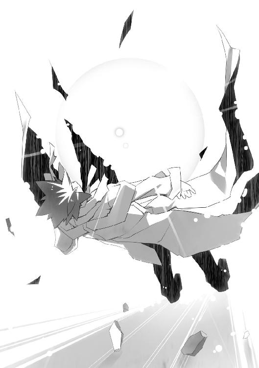
どこにいても。
どんなに時が経っても。
いつだって腐臭がつきまとっていた。
その国では独裁者による軍事政権が統治し、内乱が続いていた。軍は賄賂漬けで腐りきっていて、反政府と口を揃えるゲリラはただの山賊にすぎなかった。
軍やゲリラの標的は、常に弱者だった。
女、子供、武器や金を持たない貧困者。軍人に賄賂を強要され、ゲリラに生活の糧を奪われて、寝食もままならない人間が国民の八割以上を占める国。
その子供もまた弱者だった。
首都の片隅を徘徊し、放置された餓死者のそばで眠る。そんな時は腐臭が身体に染みつき、自分が生きているのか死んでいるのか分からなくなることがあった。だから死体がこの世で最も嫌いだったが、一人で寝るより死体のそばで死体のフリをして寝るほうが、少しだけ安全だったから我慢した。
ある日、そんな子供を軍人が迎えにやって来た。
独裁者の隠し子だった子供は、その日から宮殿で暮らすことになる。十人以上いた独裁者の実子は全員、後継者争いで死んでいた。
少年へと成長した彼が真っ先にしたことは、国から腐臭を消すことだった。
内乱鎮圧の名目をでっち上げ、首都にある貧民街を軍事力によって〝浄化〟した。一人残らず徹底して排除する非情さを、独裁者は褒め称えた。また生者の消えた貧民街に追悼と称して教会を建てたことで、市民の支持を得た。
だが少年は、次に富裕層が住む中心街を襲撃した。
そして、教会を建てる。
祈る者が一人残らず消え去った教会を。
さらにゲリラを無差別に虐殺し始めたところで、ようやく独裁者は気づいた。
少年はこの国から、人間を一人残らず消し去ろうとしている──。
教会は追悼ではない。──墓標だ。
独裁者は怒ったが、少年を処罰することができなかった。少年にはすでに信奉者とも言うべき支持者がいて、彼を排除しようとすれば反乱を抑えきれない。
一方、少年は不満だった。
どうしても欲しいものが手に入らなかった。
独裁者が持つ王冠。
何者にも屈することのない王様の象徴だ。
資格はあった。
王の資格。
少年が自分の目で見てきた通り──多くの人々を殺すことが、それだったはずだ。
少年は青年となり、留学という形で他国へ訪れた。
だがそれは親である独裁者と、その国の金持ちとの狡い契約だった。
──〝不死〟になりたくはないか？
何者かによって拉致された彼に、白衣の人間が言った。
彼はあらゆる拷問を受けた。白衣の人間は実験と称したが、生と死の狭間を何度も経験させられた。だが王となる彼は死ぬわけにはいかない。
──夢を見て。
たまに、若い女が彼に囁いた。
馬鹿みたいな拷問をする白衣たちよりも、よほどその女のほうが恐ろしかった。
細い目で彼を優しく見つめ、聖母のように微笑む魔女。
──大事な夢を。
その言葉が、彼を生かした。
どんな苦痛や精神的な窮地も、女の言葉が彼に諦めさせてくれない。
死なせてくれない。
彼の中に黒く淀む願いが、生にすがりつかせた。
いつか王になり、永遠に腐臭のしない世界を作る──。
そんな彼が安堵を覚えた時があった。
夢を見たのだ。
夢が叶う夢。
この世から腐臭が消えた世界から──眠りから覚めると、あの細目の女がいた。
──まだ、叶っていないわよ？
彼は地獄に突き落とされ、その絶望と怒りが死の淵にいたらしい自分を蘇らせた。
あれから、月日が経った。
得体の知れない光と衝撃を受け、彼は死んだ。
蘇った彼は、人ではなくなった。
彼だった頃の人格は消え去り、底知れない欲望が集まり、人の形をしただけの存在。
一瞬だけ自由を得たものの、すぐにまた幽閉されることとなった。
欲望と憎悪を溜め込むだけの、地獄のような時間が再び続いた。
そこへまた、救いが現れた。
かつて見た光とそっくりの閃光が、彼を救い出した。
そして、今──。
『我は......王の資格を得た......』
その存在は、自らの欲望が満たされていくのを感じていた。
王冠を戴き、荘厳なマントを羽織った姿で、眼前の光景を見下ろす。
物音一つしない。
動くものも何もない。
あるのは嗅ぎ慣れた死臭と、無残に散らばる血肉だけだった。
いずれ風雨に消され、二度と香らないとなれば、腐臭も心地良い。
『我は......救われた......』
幼さの残る少女の顔に、安らぎの笑みが浮かんだ。
小さな足で、上半身と下半身が切断した死体を踏みつける。全身黒ずくめのそれもまた王の資格を持っていたが、こうなっては見る影も無い。
頭上に浮かぶ〝城〟が消えた。
赤牧市を蹂躙する芋虫たちが、光の粒子となって消え去っていく。
少女の頭から王冠が消え、マントも消え去る。
『我は......』
光の粒子が舞い上がる世界で、少女は安息に包まれていた。
自分の中から、何かが消えていくのが分かる。
怒り、憎しみ。
憧れ、欲望。
そして──底知れない力も、霧散していく。
『救われ──』
ヒュンッ、という風を斬る音が響いた。
切断されて火花を散らす電線がひとりでに動き、少女の足に巻きついた。
『──ぐぉぉおおおおおおっ！』
少女の顔が苦悶に歪んだ。
電線を通じ、金色の電流が少女の全身を駆け巡ったのだ。
青白い放電の柱が、少女の足元から大空へ突き抜けた。暗雲に包まれた雲を引き裂き、光の柱が天地をつなぐ。
それは、かつてその存在を何度も蘇らせた光と同じ。
何度も地獄へ突き落とした光だった。
『あぁぁああぁああ──』
光が消えると、ガクガクと少女の身体が震えた。
汗が噴き出し、涙が溢れ出す。それは人間としての少女の肉体だからこその苦痛だった。
『あぁぁぁあああああっっ！』
絶叫する少女の周辺に、一度は消えたはずの芋虫が生まれた。噴火した火山のごとく、瓦礫の隙間から空を覆うほどの芋虫が湧き、廃墟と化した街に拡がっていく。
パキン、と。
何もない空に、小さなヒビが生まれるのを見た。
嚙みしめて切れた少女の唇から、血の糸が垂れた。
血の糸はすぐに蒸発し、その真っ赤な色が少女を包む障気に混じって──。
障気が赤く染まった。
──まだ、叶ってないわよ？
パキン、と大きくなる虚空の亀裂に、魔女の囁きが重なった。
その存在の願いは。
悪夢は。
まだ、叶っていない。
その絶望を思い出すと、その存在は自分の意思が崩壊していくのを感じた。
そうだ、その存在は何度もそれを繰り返した。
夢を思い出し、叶え、しかしまだ叶わずにいる現実へと引き戻された。
何度も、繰り返させられたのだ。
あの魔女と──妖精のような、あの光り輝く蝶々に。
だが、もう限界だった。
『──』
ついに虚空に生まれた亀裂が割れ、真の姿を覆い隠していた世界が崩れ落ちていく。
あるのは、廃墟と化した街に倒れた虫憑きたちの姿。
だが、死体ではない。
「──やっと見つけたぜ、引きこもり野郎」
たった一人、両脚で地面に立つ者がいた。ホッケースティックを構えた少年だ。
「戌子の仇を討たせてもらおうか」
現実の世界に引き戻され、ディオレストイという人間だった頃の人格が永久に失われた。
絶望という暗闇に染められた世界に、光の雫が生まれた。
雫は、ゆっくりと底のない闇の中を落下していく。
光り輝く表面に、誰かの顔が映っていた。
──君は、夢を諦めないでね。
ぴちょん。
暗闇の底を、光り輝く雫が打った。
光る水たまりが生まれ、幾筋にも分かれて、暗闇に走る亀裂となり──。
堅い何かが割れる音が鳴り響いた。
「──ッッ！」
大助はまぶたを開いた。自分が瓦礫の上に倒れていることに気づき、勢いよく身を起こす。
周囲を見回すと、彼と同じように特環の戦闘員たちが起き上がる光景が目に映った。〝むしばね〟の面々も同様だ。
「なんだ......？ 俺は何を......」
頭を振り、自分の身に起きたことを思い出す。
大助は虫憑きの精鋭を率い、〝浸父〟の本体を見つけ出した。
しかし大助が倒したのは、ただの囮で──。
「......！」
直前に起きた出来事を思い出し、振り返る。
王冠を戴き、分厚いマントを羽織った少女の姿があった。大きく口を開き、甲高いソプラノの声で悲鳴とも絶叫ともつかない声を張り上げる。
血のように赤い障気の中に浮かぶ少女の髪が、風に煽られたようになびく。
「詩歌──」
絶叫する少女に、杏本詩歌だった頃の面影はなかった。
そう、あの変わり果てた少女によって、大助たちは全滅したはずだ。全てを破壊する吹雪に抗える者はなく、一人残らず血肉の塊と化したはずなのに──。
「幻覚だったのか──」
何者かが〝浸父〟と対峙していた。
見覚えのあるホッケースティックを肩に担いだ少年である。
「特別環境保全事務局には、最強の戦士がいるって聞いてたんだけどな」
〝浸父〟を睨みつけたまま、少年が言った。吹き荒れる赤い障気を受け、着ているジャンパーが真横に煽られる。整った横顔には、怒りの色が浮かんでいた。
「ここにはいないみたいだ。あんな子供騙しで、全滅するようなヤツらの中にはな」
全滅──。
完全に、その結末を信じ込ませられてしまった。
今までの大助では、絶対に有り得なかったことだ。
それでも〝浸父〟が創り出した幻想に取りこまれてしまったのは──。
詩歌を、奪われた。
最大にして、唯一の弱点を狙われた。
精神攻撃は想定していたものの、〝浸父〟が囮を使い、なおかつ大助と詩歌を天秤にかけてより効果的な対象を見定めて狙うとは思いもしなかった。
「俺を、罠にかけたのか......？ 〝浸父〟が......そんな人間みたいな考えを──」
「〝浸父〟の嫌らしさは承知の上じゃないの？ ──つっても、なんか様子がおかしいけどな。こいつの力が一瞬、極端に弱まったから、領域を砕くことができたんだし」
どうやら眼前の少年に助けられたようだ。少年がニヤリと笑う。
「あんまり特環と〝むしばね〟に歯応えがなかったモンだから、油断したってか？」
『我が前に立ち塞がるか......我が子よ......』
甲高いソプラノの絶叫に、嗄れた低い声が重なった。叫びながらガクガクと身体を震わせる〝浸父〟の身体から、赤い障気が迸る。
「アンタの子なんて気色悪い呼び方するなよ」
ホッケースティックを構える少年の身体から、橙色に輝くアキアカネの大群が飛び出した。
「オレは塩原鯱人。──獅子堂戌子の彼氏だ。冥途の土産におぼえておきたまえ」
特別環境保全事務局の虫憑きたちが、ぎょっとして鯱人と名乗る少年を見た。
獅子堂戌子というのは特環で戦闘訓練の教官をしていた少女だ。この場にいる〝四ツ葉〟、〝玉藻〟、〝疫神〟、〝さくら〟や他の高位の虫憑きたちをはじめ、土師千莉も今は亡き戌子の教え子である。
「ワンコの......」
大助は以前に、鯱人と出会ったことがあった。
あの時はほんの一瞬のことで、彼が何者かは結局分からなかった。
だが、ようやく分かった。
彼氏というのは、あの少女にかぎって眉唾だとしても、彼は──最後の弟子なのだろう。紛う事なき戌子の形見であるホッケースティックが、それを証明している。
──ボクが育てた者たちが、いずれキミとともに戦う。
戦友である戌子が、かつて彼に言った。
まるで未来が見えるかのように、確信に満ちた言葉だった。
──もうキミに戦いを独り占めになんてさせてやらないぞ。
それは、予言だった。
彼女の言う新世代の力が、確実に育っていた。
今まさに、大助と肩を並べて決戦に挑んでいる──。
「もう......俺だけの戦いじゃないんだな──」
戦いに明け暮れ、詩歌との約束を守るためだけに〝始まりの三匹〟を倒そうとしてきた。
だがその道のりで様々なものを背負い、託され、戦いは大きくなった。
大助は戦友の忘れ形見に救われ──。
全滅という悪夢の果てに、今、なお多くの虫憑きが立っている。
決戦のたびに大助だけが孤独になった、かつての戦いとは違うのだ。
──今にキミ独りじゃ勝てない時が、必ず来るのだよ。
亡き戦友の遺言が彼の傲慢を打ち砕き、頭を冷静にさせた。
「──特別環境保全事務局ッッ！」
大助は腹の底から大声を絞り出した。
幻覚から覚醒したばかりの虫憑きたちが、いっせいに顔を上げる。
カッコウムシが、大助の肩に舞い降りた。躰を分裂させ、緑色に輝く模様となって大助と一体化する。
「〝浸父〟は──〝ふゆほたる〟の能力を使えない！」
戦闘員たちがどよめいた。
大助は空を見上げた。
〝教会〟の比ではない大きさの〝城〟──その映像は、いつの間にか消え去っていた。
「今まで死体ばかり操ってきたお前に、その女は手に余るんだろう？ 〝浸父〟」
震えて絶叫する〝浸父〟を睨む。
本当に詩歌の能力を使えば、大助たちを全滅させることができたはずだ。
だが〝浸父〟は、精神攻撃を使った。
なぜか。
それは、つまり──。
『跪くがいい......王の前に......』
絶叫する声と、嗄れた声。
〝浸父〟が二色の声を放っているのは、まだ詩歌を支配下に置けずにいる証拠だ。
「〝ふゆほたる〟はまだ生きていて、お前に抵抗しているからだ」
詩歌は。
誰よりも強い、あの少女は。
今、この瞬間も〝浸父〟と戦っている──。
「陣形を整えろ！ 〝浸父〟の動きを封じるぞ！」
大助の号令に、特別環境保全事務局の戦闘員たちが地鳴りのような声で応えた。
「〝なみえ〟！ そっちの指揮は大丈夫だろうな！」
「〝ふゆほたる〟を殺すつもりか！ 〝かっこう〟！」
〝むしばね〟の一員である〝なみえ〟が叫んだ。昨年まで東中央支部の指揮官だった彼女ならば、詩歌に代わって〝むしばね〟を統率することができるはずだ。
「ダメだっ！」
大助と鯱人、両者の声が重なった。
「身体を必要以上に痛めつけて弱めたら、〝ふゆほたる〟が〝浸父〟の支配力に負けるかもしれない。そうすれば、おそらく能力を奪われる」
「へえ、アンタ、なかなか冷静な判断力持ってるね。オレは見たコトないけどさ、ここにいる全員がこんなに怯えるってことは、よっぽどすごいんでしょ、カノジョ？」
大助と鯱人は目を合わせた。
「〝ふゆほたる〟が敵に回ったら──負ける」
「オーケイ。つまり、彼女を取り戻せば──オレたちの勝ちってわけだ」
その通りだ。
だからこそ〝浸父〟は大助ではなく、詩歌を狙ったのだろう。
「動きを封じることに集中しろ！ そうすれば──」
大声を張り上げ、大助は〝浸父〟を睨みつけた。
戦闘員たちもまた指示に従い、〝浸父〟に向かって身構えた。
──はずだった。
だが誰の目にも、王冠を戴いた少女の姿を見ることができなかった。
するり、と。
ある方向に向かって伸びた赤い障気の残像しか、そこにはなく。
ぷかり、と。
大助の鼻先に、大口を開けて絶叫する少女の姿が浮かび上がった。
「がっ──」
全身をぶるぶると震わせ、甲高い苦悶の叫び声を上げる少女の手が、大助のみぞおちにめり込んだ。噴き出す赤い障気が大助の全身を突き抜け、バラバラにしようと暴れる。
油断したつもりはなかった。
〝浸父〟の動きが、あまりに異質なのだ。
詩歌という肉体がある以上、躰を障気と化して空間移動したわけではない。目に留まらないほどの高速スピードでもない。
〝浸父〟の動きが、人間の隙を縫うように行われたのだ。障気の中に浮かんでいるため、足の動きで進路を先読みすることもできない。
人の心の隙を、狙う。
それは〝浸父〟が最も得意とすることだった。
「......っっ！」
特環のコートと〝虫〟と同化して強化された身体がなければ、腹をえぐり取られていただろう。大助の身体が地面に叩きつけられ、瓦礫の上をバウンドして弾き飛ばされる。
『悔い改めよ......』
大助を排除し、〝浸父〟が空に向かって吼えた。
アスファルトから染み出すようにして、大量の芋虫が噴き出した。空高く舞い上がった芋虫の柱が、ばらばらと雨のように戦闘員たちの頭上から降り注ごうとする。
「ハレンシス！」
〝なみえ〟が叫んだ。
〝むしばね〟の一人である長い黒髪の少女が、空に向けて腕を伸ばした。指先にとまったゴミムシの躰が風船のように膨らむ。
瞬時に空を覆うほどに巨大化したゴミムシが、ゴム状の口器をパカリと開けた。降り注ごうとした芋虫たちを一口に呑み込み、収縮する。
「これだけの量......一度しか食べられないわよ！」
「......！ 〝浸父〟は！」
ヘアバンドをした〝むしばね〟の少年の声に、全員がハッとした。
芋虫に気をとられた隙に、王冠とマントが消えていた。
「あそこ！」
特環の戦闘員が、鉄骨しか残っていない建物の上を指さした。
詠うように絶叫する〝浸父〟の姿がそこにあった。
虫憑きたちの一斉攻撃が〝浸父〟を襲った。遠距離攻撃の嵐が、建物ごと少女を呑み込む。
「違う......！ 後ろだ！」
戦闘員たちが、反対方向を振り向いた。
ぷかりと障気に乗って浮かぶ少女が、二人の戦闘員の首を両手に摑んでいた。赤い障気に包まれた戦闘員たちが、だらりと脱力して両腕を垂らす。
「助け──」
別角度から、悲鳴が響いた。
そこにも〝浸父〟に捕まり、障気に包まれて倒れる戦闘員の姿があった。
ぷかり。
ぷかり、と。
戦闘員たちの死角に、次々と王冠を冠した杏本詩歌の姿が浮かび上がった。
たちまち戦場に悲鳴が溢れた。
何体も同時に存在する〝浸父〟によって、戦闘員たちが次々と倒されていく。
「モグラ叩きってか？ 悪いけど──」
混戦状態に陥った戦場を、橙色の閃光が駆け抜けた。周囲の瓦礫から飛び立つアキアカネを吸収しながら突き抜ける。
「本体、バレバレだぜ！ そんだけ強い力場をまき散らしてりゃーな！」
鯱人だ。
振り下ろしたホッケースティックが、〝浸父〟の頭を打ち砕く──ことはできなかった。
赤い障気が見えない壁となり、少女の頭に触れる直前で攻撃を防いでいた。
「──ひはっ」
鯱人が歪んだ笑みを浮かべた。
ホッケースティックが橙色に輝き、〝浸父〟の躰がアスファルトに沈み込んだ。地響きが地面を揺らし、頭上から押さえつけられた少女の足元が大きく陥没する。
「オレの能力は、重いだろ？ ちょっとの間、じっとしててよ」
「......千莉！ やれるか？」
ふらつく身体を起こし、大助は叫んだ。
土師千莉は己のすべきことを理解していた。見えない瞳で〝浸父〟の本体を凝視し、人差し指と親指を立ててピストルの形にした手を向ける。
彼女の能力は見えないものを見通し、触れられない人の内側を焼き焦がす──。
「〝発射〟ッ！」
何の前触れもなく噴き上がった火柱が、〝浸父〟を包み込んだ。
火に呑まれた〝浸父〟が、これまでに増して苦悶の絶叫を高めた。
火柱の中で暴れる少女の肉体は、火傷一つ負っていない。だが千莉の能力は確実に詩歌の中に潜む〝浸父〟だけを灼いているはずだ。
『控えよ......』
〝浸父〟の障気が膨脹した。
炎とホッケースティックが弾き飛ばされた。〝浸父〟が障気の流れに乗り、するりと戦闘員の間を縫って移動する。
〝浸父〟が一瞬で千莉に接近し、喉めがけて腕を伸ばそうとするが──。
「彼女には指一本触れさせないぞ」
静かな怒りの声と同時に、金色に輝くレーザ光線が降り注いだ。
有夏月のヒメカゲロウが発射した熱線が、千莉の周囲を隙間なく攻撃する。
アスファルトに次々と穴が穿たれ、〝浸父〟の接近を阻んだ。分身の一体がレーザに巻き込まれ、バラバラに砕ける。
「さすがに一発じゃ無理か！」
橙色の輝きとともに、鯱人が〝浸父〟のそばに瞬間移動した。またホッケースティックを振り下ろすが、二の轍は踏まないとばかりに〝浸父〟が宙高く跳んで攻撃をかわす。
鯱人と〝浸父〟の追いかけっこが始まった。
するすると移動する〝浸父〟を、鯱人が瞬間移動してついて回る。
一方、他の戦闘員は分身との戦いで精一杯だった。分身といえど対抗できているのは特環の高位の虫憑きや、〝むしばね〟のヘアバンドの少年、そして〝なみえ〟くらいだ。下位の戦闘員たちが次々と分身の餌食となり、倒れていく。
「千莉！ 〝浸父〟を弱めるまで、あと何発くらい必要だ？」
大助の問いに、千莉が唇を嚙んだ。汗ばんだ顔が悔しげに歪む。
「全力で撃ったのに、あんまり弱ってない......！」
「何発だ！」
「......たくさん！」
千莉の悲痛な声を聞き届けてから、大助は地面を蹴った。
一発や二発で効かないならば、効くまで攻めるまでだ。
素早く動く〝浸父〟の進路に立ち塞がり、大助は拳を振り下ろす。
だが緑色の軌跡は、あえなく空を切った。
ぷかり、と攻撃をかいくぐって背後に回り込んだ〝浸父〟が、大助のこめかみを蹴る。
「あぐっ......！」
吹っ飛び、他の戦闘員を巻き込んで地面を転がる大助。
「ぐぅっ......！」
「ねえ、アンタ。足手まといだよ。じっとしててくんない？」
顔を歪めて立ち上がる彼のとなりに、鯱人が立った。
「誰だか知んないけど、なんでアンタみたいに弱っちいのが特環を指揮してるんだか」
ため息を残し、ホッケースティックを構えた少年の姿が消えた。
足手まとい──。
鯱人の言う通りだ。
何年も戦い続けて積み重なった代償が、彼の心身を蝕んでいた。重く冷たいそれが、足枷のように彼の脚を引きずらせる。
「〝月姫〟、〝疫神〟、〝さくら〟......！ お前たちは力を温存しておけ......！」
荒い息をつきながら、ゴーグルを通して指示する。
『いやだ。千莉を守るのに手を抜くつもりはないよ』
『はあ、面倒なコトさせられそうだねぇ』
『言われなくても、今の状態で私にできることなど一つもない』
三者三様の返答が返ってきた。少なくとも大助の意思は通じたはずだ。
〝浸父〟が全身を震わせ、空気を切り裂くような悲鳴を上げた。
赤い障気が、鯱人を含む周囲の虫憑きを弾き飛ばした。本体と分身の足元に黒い水たまりが生まれ、次の瞬間には暗黒の染みが全方位に拡がっていく。
地面だけではない。
暗黒の染みは空にも拡がり、大助たちは落下感に似た感覚に襲われた。
地面から芋虫が湧き出し、白い石の列──墓石が次々と飛び出す。
「まずい、ヤツの領域に呑み込まれるぞ......！ 〝なみえ〟！ 〝照〟！ 〝四ツ葉〟──」
「何とかの一つ覚えってか！」
鯱人が橙色に輝くホッケースティックを、地面に打ちつけた。
地面と空を染め尽くす直前で、暗黒の染みに一文字の亀裂が生じる。
「やはり特殊型の親玉だな......！」
「領域遮断ッ！」
「癒しパンチッ！」
白く燃え盛る波江白蝶の輝きが。
頭の中をかき回すようなノイズが。
赤十字の少女が地面に叩きつけた拳が。
暗闇と墓石に包まれた世界を、粉々に打ち砕いた。
『小癪な......』
ディオレストイは生まれた瞬間より、憎悪を積み重ねて強大になった。
だが当時よりも強くなったのは、虫憑きも同じだ。
長い年月をかけて互いに戦い、〝虫〟の能力を研究し、訓練を積んで強くなった。
全ては、戦い抜き、生き残るために──。
「〝発射〟ッ！」
自らの世界を破壊されて生じた隙を、千莉が見逃さなかった。
立ち上る噴炎が、〝浸父〟の絶叫をさらに大きくさせた。
だが隙を突いたのは、こちら側だけではなかった。
「──がはっ！」
グレーのコートを着た少女と、赤十字の少女が同時に苦しげな呻き声を上げた。
北中央支部の〝照〟と、中央本部の〝四ツ葉〟だ。何体もの〝浸父〟の分身がまとわりつき、赤い障気で完全に両者を包み込んでいた。ガクリと倒れて動かなくなる二人。
本体を囮にして、高位の戦闘員を一度に二人も倒されてしまった。
虫憑きたちの間に、動揺の気配が伝わるが──。
「怯むな！」
大助が一喝する。
「これは、こういう戦いだ。俺たちと〝始まりの三匹〟──どちらかしか生き残らない」
分かっていたことだ。
一人も被害が出ないなどと都合の良い考えは、最初から持ち合わせていない。
「俺たちは、勝つためにここにいるんだ」
勝つためにいる。
かつてそう唱えて挑んだ戦いで、大敗を喫したこともあった。
だからこそ二度と負けないために、今、〝浸父〟の前に立っているのだ。
その気持ちを抱いているのは、大助だけではない。
「〝発射〟！」
千莉が攻撃を重ねる。
下がりかけた士気が、盛り返した。戦闘員たちが沸き立ち、分身を駆逐していく。
「......！」
大助は顔を強ばらせた。
ギロリ、と。
炎の中に浮かぶ〝浸父〟の瞳が、大助を睨んだのだ。
次の瞬間には、するりと〝浸父〟が火柱から脱出し、大助の懐に潜り込んでいた。
「ッッッ！」
杏本詩歌の細い小さな掌底が、大助の胸を突き上げた。声を上げることもできずに地面から足を浮かせた大助の頭を、今度は細い脚が蹴り飛ばす。
地面に叩きつけられ、大助の全身の骨が悲鳴を上げた。肺を損傷したのか、口から血の飛沫が噴き出す。
「かはっ！」
『目障りなのだ、アリア・ヴァレィの子よ......我への畏れをかき消す愚か者よ......』
〝浸父〟の怒りか、それとも大助を殴ることへの詩歌の拒絶か──。
攻撃を繰り返す王冠の少女が、さらに甲高い絶叫を高めていく。
「オレはシカトか？ つれないね！」
「〝発射〟！」
瞬間移動した鯱人のホッケースティックが〝浸父〟の動きを封じ、千莉の炎が襲った。
だが〝浸父〟の攻撃は止まらなかった。炎をまき散らしながら、かかとで大助の頭を地面に叩きつけ、踏みつける。
「なっ......！」
鯱人の顔に戸惑いが浮かんだ。
地面に転がる大助を、湧き出した芋虫がせり上げた。〝浸父〟が腕を伸ばし、赤い障気で大助を包み込む。
「ぐああっ......！」
見えない力が大助を押し潰そうとした。一方で身体の内側を滅茶苦茶にかき乱して爆発させるかのような、矛盾した激痛に襲われる。
「なんでそんなヤツを目の仇にしてるんだよ！」
伸ばした〝浸父〟の腕を、鯱人がホッケースティックで叩く。
「〝発射〟！」
炎の柱が〝浸父〟を包み込んだ。
しかし〝浸父〟は鯱人や千莉に見向きもしない。大助を締めつける腕に力を込める。
「それに、なんで誰もコイツを助けようとしないんだ？ どうなってんだよ、アンタら！」
その疑問に対する答えは簡単だ。
大助が、〝かっこう〟だからである。
あらゆる虫憑きにとって、一号指定〝かっこう〟とは恐怖と憎悪の対象でしかない。
守るつもりなど、誰一人としてないだろう。
今まで誰も──〝始まりの三匹〟すらも、彼を殺せなかった。
この場にいる虫憑きたちは全員、そのことを知っているのだ。
それは恐怖と憎しみという名の──信頼でもある。
『我を畏れよ......汝が畏れれば、誰もが我を畏れるのだ......』
互いに顔を歪めながら、大助と〝浸父〟が間近で睨み合う。
その因縁は、今に始まったわけではない。
同化型の虫憑きと、〝始まりの三匹〟の敵対関係は──それらが生まれた瞬間から、ずっと続いているのだ。
カシュアという最初の同化型の最期を見届けた大助は、そのことを知っている。
『アリア・ヴァレィの子は、一人残らず滅ぼしてやろうぞ......』
〝浸父〟が大助を遠方の瓦礫に叩きつけた。
「ぐあっ......！」
地面から湧き出した芋虫が、彼の身体にまとわりついて動きを封じる。
勢いをつけた一撃を喰らわせるべく、大助に向かって〝浸父〟がするりと移動した。
「──ようやくお前の進路が読めた」
〝浸父〟を真っ白な何かが包み込んだ。
朦朧とする頭を持ち上げる大助の頰に、ひんやりとした水滴がかかる。
それは凝縮した水蒸気だった。
「誰か一人に狙いをつけてくれるなら、こちらも狙いがつけられる」
〝むしばね〟の一員である、ヘアバンドの少年だ。〝浸父〟に向かって手を伸ばし、中指と親指を擦って音を鳴らす。
球状に吹き荒れる水蒸気の嵐が、凝縮と収縮を繰り返した。
逃れようとする赤い障気を押し戻し、〝浸父〟を閉じ込める。
『目障りな......』
そこへ千莉が追撃した。
「〝発射〟！ 〝発射〟！」
たまらず〝浸父〟が躰をのけ反らせた。マントの内側から大量の芋虫を生み出し、水蒸気と炎を質量の差で強引に弾き飛ばす。
『愚かな我が子よ──』
〝浸父〟が横を向き、ヘアバンドの少年を憎々しげに睨みつける。
ヘアバンドの少年が、笑みを浮かべた。
彼だけではない。
〝なみえ〟をはじめとする〝むしばね〟の面々、そして消耗しきって息を荒げる特別環境保全事務局の戦闘員たちも、ニヤリと笑っていた。
〝浸父〟の動きが、ピタリと止まった。
『......！』
何かに気づいたように後ろを振り向いた時には、もう遅い。
そこには芋虫の拘束から抜けだし、〝浸父〟に忍び寄って両腕を拡げた大助の姿があった。
「俺から目を離したな、〝浸父〟」
拡げた腕を、閉じる。
全身全霊の力を込めて。
〝浸父〟の細い躰を抱きしめる。
死んでも、この腕を離すつもりはなかった。
『我に触れるか、無礼者──』
恐るべき力で抱きしめられ、〝浸父〟が甲高い悲鳴を上げた。
「〝発射〟！ 〝発射〟！ 〝発射〟！ 〝発射〟！」
千莉の炎が、大助もろとも〝浸父〟を包み込んだ。
炎は熱くない。
だが赤い障気が、大助をズタズタに引き裂こうと暴れ出した。身体の内外を同時に攻められ、手足の感覚と精神が麻痺していく。
「〝発射〟！ 〝発射〟！ 〝発射〟！」
『ぬう──』
甲高いソプラノの悲鳴を上げる苦悶の顔が、大助の間近にあった。
詩歌が苦しんでいるのが分かった。
「〝発射〟！ 〝発射〟！」
赤い障気に蝕まれ、大助の全身から血が噴き出した。
だが、耐えられる。
一人ではないから。
腕の中に、詩歌がいる。
彼女と二人なら、どんな苦痛にも耐えられる。
今までも、お互いを支えに、そうやって生きてきた──。
「ごめん......」
血の味が拡がる口を動かし、大助は呟いた。
詩歌の苦しみが腕を通して、鮮明に伝わってくる。
「いつも、うまく助けられない......」
〝浸父〟が大口を開け、空に向かって甲高い咆哮を上げた。
周囲が一気に薄暗くなった。
空を覆う暗雲を切り裂き、荘厳な建物が浮かび上がった。
〝浸父〟の能力の発動体──〝城〟だ。
〝城〟が鳴らす鐘の音が衝撃波を生み、赤牧市を襲った。廃墟と化した街に残った建物が、爆風にあおられて吹き飛んでいく。
天地を揺るがし、現実と幻想の狭間すらも破壊する鐘の音が響く中──。
「〝疫神〟ッッ！」
大助の合図に、異様な姿をした戦闘員が前に出た。
この時を待っていたのだ。
〝始まりの三匹〟にとって、能力の発動体は──弱点でもある。
「あんなの障りたくないけどね」
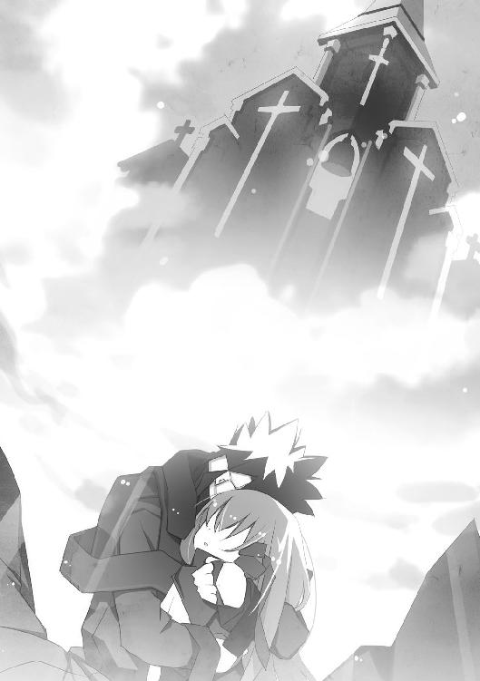
ボロボロに錆びついたコートを纏った男、〝疫神〟が大きく両腕を振りかぶった。その手には、やはり錆びた大鎌を握っている。
錆びついた大鎌が、空に浮かぶ城に向かって真一文字に振り払われた。
すると虚空から、巨大な鎖が現れた。
一本一本が人ほどの太さを持つ鎖が、蛇のように〝城〟全体に巻きつく。
『......！』
びくんっ！ と大助の腕の中で〝浸父〟の躰が跳ねた。
じわり、と。
鎖に触れた部分に錆が浮かび上がった。それはあっという間に〝城〟全体に拡がり、その表面を覆い尽くしていく。
錆に覆われ、〝城〟に実体ができた。
触れられさえすれば、それが何であろうと破壊できる者がこちらにはいる。
大助は吼えた。
「〝さくら〟！」
「誰か私をあそこへ」
ツナギ型の装備を纏った〝さくら〟の背後に、お下げの女の子が現れた。〝むしばね〟のメンバらしい女の子の姿が、〝さくら〟もろとも塵となって消えた。
次の瞬間、〝さくら〟と女の子は、〝城〟の頂上──錆びついて動きを止めた鐘の前に姿を現した。
〝さくら〟が振りかぶった手槌の先に、小さなサクラコガネがとまった。
「くらえ」
槌が鐘を打ちつける。
『──ッッ！』
〝城〟が内側から爆発した。バラバラと砕けていくところへ──。
「〝月姫〟！」
「分かってる！」
金色のレーザ光線の雨が降り注いだ。
粉々に砕ける城の破片が、熱線に灼かれて蒸発していく。
「〝発射〟ォッ！」
千莉の渾身の炎が、大助に捕らえられた〝浸父〟を襲った。
『──おおおぉおおおぉおおっっ！』
赤い障気が膨脹した。
杏本詩歌の身体から噴き出したそれらが、大助の腕をすり抜けて赤牧市に拡散する。
能力の発動体を失い、このままでは大助からも逃れられないと思ったのだろう。
かくり、と大助の腕の中で、杏本詩歌が首を垂らした。
その表情が、ようやく穏やかさを取り戻していた。
抱きしめた少女に、体温とかすかな息づかいが蘇る。
「詩歌......」
解放された少女を、今度は優しく抱きしめる大助。
その頭上から、ばらばらと芋虫が降り注いだ。
赤牧市の空に拡がった赤い障気が芋虫の雨となり、廃墟を埋め尽くしていく。
それらが密集し、積み上がり──。
巨大な三匹の芋虫と化した。
何節にも分かれた躰に、無数の尖った脚を生やしたその姿は──地球上にあるどんな建物よりも大きかった。ドーム球場を何個も積み重ねても足りないだろう。
「これが......〝浸父〟？」
超巨大な三体の芋虫を見上げ、誰かが呻いた。
呆然としたまま動けずにいる虫憑きたちに向かって、芋虫が動き出した。周囲のビルを踏みつぶし、地上にいる彼らを押し潰そうとのしかかろうとするが──。
大地震が、赤牧市を揺らした。
芋虫のうち一匹の身体が、大きく歪んだ。
もっと巨大な何かに押し潰されるように、メキメキと音を立てて地面に沈む。はち切れる躰から、滝のような体液が噴き出した。
「おおおおおおぉぉぉぉおおおおおっっっ！」
いつの間に、そこへ移動したのか。
芋虫の上に瞬間移動した塩原鯱人が、ホッケースティックを芋虫に叩きつけていた。赤牧市中から飛び上がった橙色のアキアカネが、彼のスティックに集まっていく。
質量を操るのが、彼の能力らしい。
街中にある、ありとあらゆるものから集めた重さが、ホッケースティックと芋虫の接点をぐにゃりと歪めた。橙色の輝きが放電現象を引き起こし、人の手に余る力を制御する鯱人の鼻や口から血が滴る。制御しきれなかった力の反動が、その肉体を引き裂くのも見えた。
桁外れの相手を見ても、まったく怯まない。
迷いもしない。
むしろ──笑みすら浮かべてそれに挑む姿は、まさに戦士のそれだった。
そんな鯱人の姿を見て、他の虫憑きたちも顔つきを変えた。
口々に咆哮し、別の芋虫に向かって総攻撃を開始する。
二匹目の芋虫の巨軀が、少しずつ削り取られていく。
そして、残る一匹には──。
「......！ アンタは......下がってろよ......！」
血を吐きながら、鯱人が叫ぶのが聞こえた。
「──もう、いい」
最後の一匹に立ちはだかったのは、大助だった。
離れた場所に横たわらせた詩歌を一瞥し、表情を緩める。
「ここまで来られただけで、もうじゅうぶんだ......」
「何言ってやがる......！ 勝手に諦めてんじゃねーぞ！」
鯱人が怒りにまかせて怒鳴ったが、無視する。
大助は巨大な芋虫を見上げた。
彼の立っている場所からだと、湾曲した白い壁がそびえ立っているようにしか見えない。その壁が大助を押し潰そうと迫る。
いくつもの戦いを経て、ここまで〝浸父〟を追いつめることができた。
大助がこの場で生きて立っていられるのは、彼一人の力によるものではない。
今では、はっきりとそのことが分かった。
「お前らのおかげだ......」
微笑する大助の拳が、ひゅっ、と風を切った。
この場所にいる虫憑きだけではない。
戦いの中で脱落していった者たちの願い、思い、苦しみ、怒り、憎悪──それらすべてが、大助の内にあった。
だから。
今、残された全ての力を注ぎ込むことに躊躇いはなかった。
たとえ大助の戦いが、ここまでに終わったとしても──後悔はない。
「──おかげで、力を温存することができた」
大助の眼前から、白い壁が消えた。
ぐにゃり、と。
彼に迫りつつあった芋虫の躰が、上に折れ曲がった。
一瞬、遅れて──地響きと衝撃波が地上を揺らし、足元のアスファルトが陥没した。芋虫の頭が弾け、洪水のごとき体液が街に降り注ぐ。
それらはすべて、大助が突き上げた拳によるものだった。
「──」
鯱人を含める虫憑き全員が、その光景を見て絶句する。
『おのれ......アリア・ヴァレィの──』
「そんな呼び方をするな」
大助の全身から、緑色の輝きが迸った。全身に浮かび上がる模様から光の残滓を迸らせながら、ゆっくりと前進する。
頭の一部を失った芋虫が、再び反動をつけて大助に覆い被さった。
大助は全身のバネを使い、渾身の力を込めた拳で横に振り払う。
芋虫の巨軀、その十分の一ほどが消滅した。体液の津波が高層ビルを押し倒す。
「俺は、〝かっこう〟だ」
最強の一号指定、〝かっこう〟──。
それが、大助だ。
返す刀で叩きつけた拳が、さらに十分の一ほどを汚らしい体液に変えた。
自らの血と芋虫の体液にまみれながら、大助は前進する。拳を振るうたびに、先端から芋虫の躰が削り取られていく。
同時に──。
彼の中からも、大事な何かが燃え尽き、削り落ちていくのを感じた。
その多くは戦いの記憶であり、たまに楽しい思い出でもあった。
「俺は──」
薬屋大助だ。
どこにでもいるような人間で、たまたま虫憑きになってしまっただけの存在。
今、ここで全力を使えば、多くのものを失うことは分かっている。
だが全力で進む以外に、選択肢はなかった。
これまで彼が手にかけてきた、同じ虫憑きたちが許さない。
そして──。
彼自身が抱いた夢が、それを許さなかった。
「──」
大助は拳銃を構えた。
銃口に、彼の力と思いが集まっていくのを感じた。
きっと虫憑きの戦いは、まだ続くのだろうけれど──。
その先を夢見る彼は、立ち止まることなどできない。
真っ赤に燃える業火が、視界を埋め尽くした。
轟く一撃が、巨大な芋虫を呑み込んだ。
反動の業風が地上の瓦礫を吹き飛ばし、芋虫を消滅させてなお勢いの止まらない火柱が空を貫いた。
ほんの一欠片にいたるまで全てを灼き尽くされ、巨大な芋虫が跡形もなくなった。
「......」
砲撃の余韻とともに、大助の身体を包む緑色の輝きが霧散した。
一匹の芋虫が消滅したことで、残りの二匹の躰が崩れた。
そのまま消えるかと思いきや──小さな芋虫の大群となって、大助に押し寄せる。
まるで道連れにするかのように。
それが抱く憎悪に取りこむように。
芋虫の大群が、いっせいに大助に迫った。
しかし大助の目には、それらは映っていなかった。
もう指一本動かせず、ぐらりと身体を傾ける彼の目に映ったのは──。
「──ッッ！」
何かを叫びながら、彼に飛びつく少女の顔。
涙を流す杏本詩歌の両腕が、大助をつかまえた。
二人の虫憑きが、芋虫の大群に呑み込まれる。
そして──。
吹雪が起きた。
暖かくも綺麗な純白が、視界を埋め尽くした。
吹き荒ぶ雪が、全てを浄化していく。
詩歌と、大助。
抱き合う二人以外、何者の存在も許さない世界があった。
芋虫が砕け、潰れ、あるいは溶け、破裂し、歪み、次々と此の世から消滅していく。
断末魔は聞こえなかった。
むしろ冷酷にして無慈悲な雪に抱かれて、周囲を渦巻く憎しみが消えていくのを感じた。
それが──〝浸父〟の最期だった。
赤い障気の残滓が、吹雪の名残を受けて消えていく。
「〝かっこう〟くん......」
戦いを終え、無音の廃墟と化した空間に、詩歌の囁きが聞こえた。
彼女は、泣いていた。
温かい。
彼女の腕の温もりも、彼女が流し、彼の頰を濡らす涙のどちらも温かかった。
「私......分かっちゃったよ......〝浸父〟の内側を見て......私たち虫憑きが夢を叶えたら、どうなっちゃうか......」
そうか、と今さらながら思い出す。
今、詩歌が抱きしめているのは〝かっこう〟だ。
どうせならゴーグルを外しておけばよかった、と後悔の念が込み上げる。
「ううん......もう分かってたのかも......いつか夕ちゃんや初季と逃げた時、あのディスクを見た時から......」
生き残った虫憑きたちが、こちらへ駆け寄ってくるのが見えた。
もう少し、二人きりでいたい──。
そんなことを思った彼の視界を、金色の光が埋め尽くした。
「──ッッッ！」
光の柱だ。
そうとしか表現することができない。
芋虫たちの死骸が光に包まれ、溶けるようにして吸い込まれ、消えた。
パチパチ、と地表で弾けているのは──電流だろうか？
「なんだ、今の......？」
怪訝そうな顔の鯱人を先頭に、虫憑きたちが大助たちのもとへ駆け寄った。
だが、彼は──。
仲間を出迎えることはできなかった。
「〝かっこう〟くん......？」
涙で頰を濡らす詩歌の顔が、凍りつくのを見て。
大助は。
〝かっこう〟は。
静かに、まぶたを閉じた。
「〝かっこう〟......くん......？」
詩歌以外、誰も何も語らない戦場跡に、ゴーグルを通して声が響いた。
『ご苦労様でした、皆さん』
魅車八重子だ。
『赤牧市の奪還に成功した現時点をもって、特別環境保全事務局は次の作戦へ移行します』
虫憑きたちが、凍りついた。
誰もが力を使い果たし、傷ついた戦場に、冷酷な声が響く。
『赤牧市を隔離した霧の原因であり、〝浸父〟を解放した上で〝始まりの三匹〟を吸収、統合しつつある虫憑き──』
特別環境保全事務局副本部長にして、〝虫〟の謎を握る一人である女性が──。
『超種一号〝Ｃ〟の殲滅作戦を開始します』
最終決戦への突入を宣言した。
こんにちは、岩井恭平です。
また間が空いてしまいましたが、なんとか11巻目となりました。
この巻で（ｂｕｇシリーズも含め）主要人物のほぼ全員が、素性を明かした形となった......はずです。
あとは、それぞれの結末へ辿り着くのみ。
物語は佳境に入り、最終決戦に挑むことになるはずです。
その戦いは誰もが叫び、誰もが傷つきながらも、出口を探し求めるものになるでしょう。
例によって、本作について蛇足を少し。
あとがきから先に読む方は、ご注意ください。
今回の話を書くうちに、どうも自分は一人の人間の変化を描くのが好きなんだなと思い知りました。一応、自覚してたつもりだけど、あらためて。
人は変わらない。
人は変わることができる。
そのどちらの主張をするかは、各論あると思います。
個人的には過去と現在では、同じ人間でも変化はあって当然だと思っていて、それは作中にも表れています。
その変化が良いものであれば成長であり、好ましいものでなければ苦悩と呼ぶんでしょう。
ただし変化にはきっかけが必要で、ある時はそのきっかけそのものが、変化の質を左右するほど衝撃的な場合さえあるはずです。
そう考えると、変化そのものよりも、きっかけのほうが大事な気さえします。
こうありたい、と変化を望む形に近づけることはできても、きっかけはそうはいきません。
大抵はランダムな事象だし、何より厄介なのは、誰でも一回はそれに遭遇してるはずです。
今いる自分は必ず、〝ある時〟をきっかけに変化した後の自分です。
誰かと出会った、誰かと別れた、環境が変わった、など様々なきっかけ。それらを思い起こして、現在と過去の自分を比べてみるのも面白いかもしれません。
そうすれば本来、自分がどうありたかったか、将来的にどうありたいかに気づくことができるかもしれません。
それが夢と呼べるなら、むしろ変化よりもきっかけのほうが本作で大事なのかも。
変化、そしてきっかけ。
本作の締めくくりも、シリーズ最大のそれらであるのは間違いないと思います。
シリーズを続ける上で、あいかわらず多くの方々にお世話になっております。
筆の遅い作者に根気よくつきあってくださる担当さんや編集部の皆様、度重なる内容修正にもかかわらず素敵なイラストを描いてくださる、るろおさん。
そして、読者の皆様。続きを望んでくれる声を聞くことで、こうしてシリーズを続けることができています。結末を気にしてくれる声のおかげで、書き抜くことができると思います。
本当に、ありがとうございます。
何かと別作品を手がけ、今年も新しい試みをするであろう作者ですが、それらは間違いなくムシウタに影響すると思います。
さらなる成長と変化を遂げた上で、最高の最終決戦を描きたいと思います。
お楽しみに。
岩井恭平
ムシウタ
11.夢滅ぼす予言
岩井恭平
角川スニーカー文庫
平成23年7月1日 発行
発行者 井上伸一郎
発行所 株式会社角川書店
〒102-8078 東京都千代田区富士見2-13-3
http://www.kadokawa.co.jp/
(C) Kyohei IWAI 2011
本電子書籍は下記にもとづいて制作しました
角川スニーカー文庫『ムシウタ 11.夢滅ぼす予言』平成23年3月1日初版発行